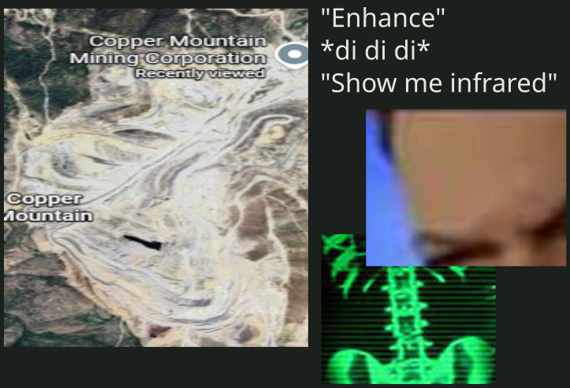

<title>Geospatial Query</title>
<link rel="preconnect" href="https://fonts.googleapis.com">
<link rel="stylesheet" href="https://fonts.googleapis.com/css2?family=Barlow+Condensed:wght@500;600&family=IBM+Plex+Sans:wght@400;500&family=IBM+Plex+Mono:wght@400;500&display=swap">
<style>
/* Layout: one column of survey-sheet panels, scrolled vertically. */
:root {
  --paper: #f3f4ef;
  --panel: #fbfbf8;
  --ink: #1d2420;
  --muted: #66706a;
  --rule: #d5d9d1;
  --accent: #2f6b4f;
  --code: #eef0ea;
  --f1: #b5543c; --f2: #7d6a58; --f3: #c48a1f; --f4: #4f8a3a; --f5: #8c6b3e;
  --f6: #9b4f7a; --f7: #3f7fa8; --f8: #6a5fb0; --f9: #2f8f8f; --f10: #55606a;
  --display: "Barlow Condensed", "Arial Narrow", sans-serif;
  --body: "IBM Plex Sans", system-ui, sans-serif;
  --mono: "IBM Plex Mono", ui-monospace, monospace;
}
@media (prefers-color-scheme: dark) {
  :root:not([data-theme="light"]) {
    color-scheme: dark;
    --paper: #141816; --panel: #1b201d; --ink: #e4e8e2; --muted: #98a29b; --rule: #2e3531; --accent: #7cc49f; --code: #222824;
    --f1: #e07a60; --f2: #b09a86; --f3: #e2ae4a; --f4: #82bd6a; --f5: #c49b66;
    --f6: #cf7fac; --f7: #6fb0d8; --f8: #9d92e0; --f9: #5cc2c2; --f10: #9aa6b0;
  }
}
:root[data-theme="dark"] {
  color-scheme: dark;
  --paper: #141816; --panel: #1b201d; --ink: #e4e8e2; --muted: #98a29b; --rule: #2e3531; --accent: #7cc49f; --code: #222824;
  --f1: #e07a60; --f2: #b09a86; --f3: #e2ae4a; --f4: #82bd6a; --f5: #c49b66;
  --f6: #cf7fac; --f7: #6fb0d8; --f8: #9d92e0; --f9: #5cc2c2; --f10: #9aa6b0;
}
body { background: var(--paper); color: var(--ink); font-family: var(--body); }
.sheet {
  display: grid; grid-template-columns: minmax(0, 1fr); gap: 20px;
  max-width: 920px; margin: 0 auto; padding-block: 20px 32px; padding-inline: 20px;
}
.bar { display: flex; justify-content: flex-end; }
.toggle {
  display: grid; place-items: center; width: 34px; height: 34px; padding: 0; cursor: pointer;
  color: var(--ink); background: var(--panel); border: 1px solid var(--rule); border-radius: 50%;
}
.toggle svg { width: 17px; height: 17px; }
.toggle:focus-visible { outline: 2px solid var(--accent); outline-offset: 2px; }
.toggle .sun { display: none; }
:root[data-dark] .toggle .sun { display: block; }
:root[data-dark] .toggle .moon { display: none; }

.panel {
  background: var(--panel); border: 1px solid var(--rule); border-radius: 3px;
  padding: 18px 20px 20px; display: flex; flex-direction: column; gap: 16px; min-width: 0;
}
.panel h2 {
  margin: 0; font-family: var(--display); font-weight: 600; font-size: 15px;
  letter-spacing: .14em; text-transform: uppercase; color: var(--muted);
  display: flex; gap: 10px; align-items: baseline;
}
.panel h2 b { color: var(--accent); font-weight: 600; }
.panel h3 { margin: 0; font-family: var(--display); font-weight: 600; font-size: 20px; letter-spacing: .02em; }
.vibe img { display: block; width: 100%; height: auto; }
.vibe .dark { display: none; }
:root[data-dark] .vibe .light { display: none; }
:root[data-dark] .vibe .dark { display: block; }

/* Signature */
.sig { display: grid; gap: 4px; }
.sig h3 { margin-top: 12px; }
.sig > ul { margin: 0; padding: 0; list-style: none; display: grid; gap: 10px; }
.def { scroll-margin-top: 16px; }
.def > div { font-size: 14px; }
.def > div b { font-family: var(--mono); font-weight: 500; color: var(--accent); }
.def > div i { font-style: normal; color: var(--muted); font-size: 12.5px; }
.def ul { margin: 4px 0 0; padding-left: 22px; display: grid; gap: 2px; font-size: 13px; }
.def li::marker { color: var(--muted); }
.def code { font-family: var(--mono); font-size: 12.5px; }
.def .t { color: var(--f1); }
.def .p { color: color-mix(in srgb, var(--f1) 50%, var(--panel)); }
.def .k { color: var(--muted); font-family: var(--body); font-size: 12.5px; }
.def a { color: inherit; text-decoration: none; border-bottom: 1px dotted currentColor; }
.def:target > div b { text-decoration: underline; }

/* Feature set */
#bars { width: 100%; height: 350px; }
.fams { display: grid; gap: 0; border-top: 1px solid var(--rule); }
.fams details { border-bottom: 1px solid var(--rule); }
.fams summary {
  display: flex; align-items: center; gap: 10px; padding: 9px 2px; cursor: pointer; list-style: none; font-size: 14px;
}
.fams summary::-webkit-details-marker { display: none; }
.fams summary::before {
  content: ""; flex: none; width: 0; height: 0; margin: 0 4px 0 2px;
  border-style: solid; border-width: 6px 0 6px 9px; border-color: transparent transparent transparent var(--accent);
  transition: transform .15s ease;
}
.fams details[open] summary::before { transform: rotate(90deg); }
.fams summary:hover { background: var(--code); }
.hint { margin: 0; font-size: 12.5px; color: var(--muted); }
@media (prefers-reduced-motion: reduce) { .fams summary::before { transition: none; } }
.fams summary:focus-visible { outline: 2px solid var(--accent); outline-offset: -2px; }
.fams summary .count { margin-left: auto; font-family: var(--mono); font-size: 12px; color: var(--muted); }
.table { overflow-x: auto; padding-bottom: 10px; }
.table table { width: 100%; border-collapse: collapse; font-size: 12.5px; }
.table th { text-align: left; font-family: var(--display); font-weight: 600; font-size: 13px; letter-spacing: .08em; text-transform: uppercase; color: var(--muted); padding: 6px 10px 6px 0; border-bottom: 1px solid var(--rule); }
.table td { padding: 4px 10px 4px 0; vertical-align: top; border-bottom: 1px solid var(--code); }
.table td:first-child, .table td:last-child { font-family: var(--mono); font-size: 12px; white-space: nowrap; }
.table td:last-child a { color: var(--accent); text-decoration: none; border-bottom: 1px dotted var(--accent); }
.csv { align-self: flex-start; font-family: var(--mono); font-size: 12px; color: var(--ink); background: var(--panel); border: 1px solid var(--rule); border-radius: 2px; padding: 5px 10px; cursor: pointer; }
.csv:focus-visible { outline: 2px solid var(--accent); outline-offset: 2px; }
.csv-row { display: flex; flex-wrap: wrap; align-items: center; gap: 10px; }
.csv-row span { font-size: 12px; color: var(--muted); }

/* Method */
.caption { margin: 0; font-size: 13.5px; color: var(--muted); }
.dag { overflow-x: auto; }
.dag svg { display: block; margin: 0 auto; max-width: 100%; height: auto; }
.dag .dark { display: none; }
:root[data-dark] .dag .light { display: none; }
:root[data-dark] .dag .dark { display: block; }
.fams summary .blurb { display: block; font-size: 12.5px; color: var(--muted); margin-top: 2px; white-space: nowrap; overflow: hidden; text-overflow: ellipsis; }
.fams summary .name { flex: 1; min-width: 0; }
</style>

<main class="sheet">
  <div class="bar">
    <button class="toggle" id="theme" type="button" aria-label="Toggle light and dark theme">
      <svg class="moon" viewBox="0 0 24 24" fill="none" stroke="currentColor" stroke-width="2" stroke-linecap="round" stroke-linejoin="round"><path d="M21 12.8A9 9 0 1 1 11.2 3a7 7 0 0 0 9.8 9.8z"/></svg>
      <svg class="sun" viewBox="0 0 24 24" fill="none" stroke="currentColor" stroke-width="2" stroke-linecap="round"><circle cx="12" cy="12" r="4.5"/><path d="M12 1.5v2.5M12 20v2.5M1.5 12H4M20 12h2.5M4.6 4.6l1.8 1.8M17.6 17.6l1.8 1.8M4.6 19.4l1.8-1.8M17.6 6.4l1.8-1.8"/></svg>
    </button>
  </div>

  <section class="panel">
    <h2><b>1</b>Abstract</h2>
    <div class="vibe"></div>
  </section>

  <section class="panel">
    <h2><b>2</b>Pipeline signature</h2>
    <p class="caption">This section describes what the pipeline requires as input and what it promises to produce as output.</p>
    <div class="sig" id="sig"></div>
  </section>

  <section class="panel">
    <h2><b>3</b>Features</h2>
    <p class="caption">Hybrid LLM + human curation with proof of concept live data retrieval tests produced the following list of obtainable features, grouped into families. Of 328 catalogued modules, 70 were probed, 57 were built as adapters and 53 returned data.</p>
    <div id="bars"></div>
    <div class="csv-row" id="csv-row" hidden><button class="csv" id="csv" type="button">Download features CSV</button><button class="csv" id="csv-failed" type="button">Download failed sources CSV</button><span id="csv-status"></span></div>
    <p class="hint">Click a row to expand.</p>
    <div class="fams" id="fams"></div>
  </section>

  <section class="panel">
    <h2><b>4</b>Method</h2>
    <p class="caption">Pipeline is a simple scatter-gather across sources. Diagram collapsed by feature family for legibility.</p>
    <div class="dag"><div class="light"><?xml version="1.0" encoding="UTF-8" standalone="no"?>
<svg xmlns="http://www.w3.org/2000/svg" xmlns:xlink="http://www.w3.org/1999/xlink" width="382" height="428" viewBox="0 0 382 428">
<g fill="none" stroke="#666666" stroke-width="1.4" stroke-linejoin="round" stroke-linecap="butt">
<path d="M 105.1,38.9 L 105.1,40.6 L 105.1,70.6 L 105.1,100.6 L 105.1,130.6 L 105.1,160.6 L 105.1,190.6 L 105.1,220.6 L 105.1,250.6 L 105.1,280.6 L 105.1,329.3"/>
<path d="M 105.1,338.2 L 105.1,356.9 L 105.1,359.3"/>
<path d="M 105.1,368.2 L 105.1,388.6"/>
<path d="M 170.1,59.3 L 170.1,56.9 A 8.1,8.1 0 0 0 162.0,48.8 L 113.2,48.8 A 8.1,8.1 0 0 1 105.1,40.6"/>
<path d="M 170.1,68.2 L 170.1,340.6 A 8.1,8.1 0 0 1 162.0,348.8 L 145.8,348.8 L 129.5,348.8 L 113.2,348.8 A 8.1,8.1 0 0 0 105.1,356.9"/>
<path d="M 153.9,89.3 L 153.9,86.9 A 8.1,8.1 0 0 0 145.8,78.8 L 113.2,78.8 A 8.1,8.1 0 0 1 105.1,70.6"/>
<path d="M 153.9,98.2 L 153.9,340.6 A 8.1,8.1 0 0 1 145.8,348.8"/>
<path d="M 137.6,119.3 L 137.6,116.9 A 8.1,8.1 0 0 0 129.5,108.8 L 113.2,108.8 A 8.1,8.1 0 0 1 105.1,100.6"/>
<path d="M 137.6,128.2 L 137.6,340.6 A 8.1,8.1 0 0 1 129.5,348.8"/>
<path d="M 121.4,149.3 L 121.4,146.9 A 8.1,8.1 0 0 0 113.2,138.8 A 8.1,8.1 0 0 1 105.1,130.6"/>
<path d="M 121.4,158.2 L 121.4,340.6 A 8.1,8.1 0 0 1 113.2,348.8"/>
<path d="M 23.9,179.3 L 23.9,176.9 A 8.1,8.1 0 0 1 32.0,168.8 L 97.0,168.8 A 8.1,8.1 0 0 0 105.1,160.6"/>
<path d="M 23.9,188.2 L 23.9,340.6 A 8.1,8.1 0 0 0 32.0,348.8 L 48.2,348.8 L 64.5,348.8 L 80.8,348.8 L 97.0,348.8 A 8.1,8.1 0 0 1 105.1,356.9"/>
<path d="M 40.1,209.3 L 40.1,206.9 A 8.1,8.1 0 0 1 48.2,198.8 L 97.0,198.8 A 8.1,8.1 0 0 0 105.1,190.6"/>
<path d="M 40.1,218.2 L 40.1,340.6 A 8.1,8.1 0 0 0 48.2,348.8"/>
<path d="M 56.4,239.3 L 56.4,236.9 A 8.1,8.1 0 0 1 64.5,228.8 L 97.0,228.8 A 8.1,8.1 0 0 0 105.1,220.6"/>
<path d="M 56.4,248.2 L 56.4,340.6 A 8.1,8.1 0 0 0 64.5,348.8"/>
<path d="M 72.6,269.3 L 72.6,266.9 A 8.1,8.1 0 0 1 80.8,258.8 L 97.0,258.8 A 8.1,8.1 0 0 0 105.1,250.6"/>
<path d="M 72.6,278.2 L 72.6,340.6 A 8.1,8.1 0 0 0 80.8,348.8"/>
<path d="M 88.9,299.3 L 88.9,296.9 A 8.1,8.1 0 0 1 97.0,288.8 A 8.1,8.1 0 0 0 105.1,280.6"/>
<path d="M 88.9,308.2 L 88.9,340.6 A 8.1,8.1 0 0 0 97.0,348.8"/>
</g>
<g><title></title>
<circle cx="105.1" cy="33.8" r="5.1" fill="#212121" stroke="#2B2B2B" stroke-width="1.3"/>
<text x="192.1" y="38.2" font-family="IBM Plex Mono" font-size="12" fill="#7A7A7A" font-weight="normal" text-anchor="start"></text></g>
<g><title>Socio-economic</title>
<polygon points="165.0,59.3 175.2,59.3 170.1,68.2" fill="#FFFFFF" stroke="#2B2B2B" stroke-width="2.0" stroke-linejoin="round"/>
<text x="182.1" y="68.2" font-family="IBM Plex Mono" font-size="12" fill="#111111" font-weight="normal" text-anchor="start">Socio-economic</text></g>
<g><title>Infrastructure &amp; industry</title>
<polygon points="148.8,89.3 159.0,89.3 153.9,98.2" fill="#FFFFFF" stroke="#2B2B2B" stroke-width="2.0" stroke-linejoin="round"/>
<text x="182.1" y="98.2" font-family="IBM Plex Mono" font-size="12" fill="#111111" font-weight="normal" text-anchor="start">Infrastructure &amp; industry</text></g>
<g><title>Hazards</title>
<polygon points="132.5,119.3 142.8,119.3 137.6,128.2" fill="#FFFFFF" stroke="#2B2B2B" stroke-width="2.0" stroke-linejoin="round"/>
<text x="182.1" y="128.2" font-family="IBM Plex Mono" font-size="12" fill="#111111" font-weight="normal" text-anchor="start">Hazards</text></g>
<g><title>Macrobiology</title>
<polygon points="116.2,149.3 126.5,149.3 121.4,158.2" fill="#FFFFFF" stroke="#2B2B2B" stroke-width="2.0" stroke-linejoin="round"/>
<text x="182.1" y="158.2" font-family="IBM Plex Mono" font-size="12" fill="#111111" font-weight="normal" text-anchor="start">Macrobiology</text></g>
<g><title>Geology</title>
<polygon points="18.8,179.3 29.0,179.3 23.9,188.2" fill="#FFFFFF" stroke="#2B2B2B" stroke-width="2.0" stroke-linejoin="round"/>
<text x="182.1" y="188.2" font-family="IBM Plex Mono" font-size="12" fill="#111111" font-weight="normal" text-anchor="start">Geology</text></g>
<g><title>Microbiology &amp; health</title>
<polygon points="35.0,209.3 45.2,209.3 40.1,218.2" fill="#FFFFFF" stroke="#2B2B2B" stroke-width="2.0" stroke-linejoin="round"/>
<text x="182.1" y="218.2" font-family="IBM Plex Mono" font-size="12" fill="#111111" font-weight="normal" text-anchor="start">Microbiology &amp; health</text></g>
<g><title>Climate</title>
<polygon points="51.2,239.3 61.5,239.3 56.4,248.2" fill="#FFFFFF" stroke="#2B2B2B" stroke-width="2.0" stroke-linejoin="round"/>
<text x="182.1" y="248.2" font-family="IBM Plex Mono" font-size="12" fill="#111111" font-weight="normal" text-anchor="start">Climate</text></g>
<g><title>Spectral</title>
<polygon points="67.5,269.3 77.8,269.3 72.6,278.2" fill="#FFFFFF" stroke="#2B2B2B" stroke-width="2.0" stroke-linejoin="round"/>
<text x="182.1" y="278.2" font-family="IBM Plex Mono" font-size="12" fill="#111111" font-weight="normal" text-anchor="start">Spectral</text></g>
<g><title>Water bodies</title>
<polygon points="83.8,299.3 94.0,299.3 88.9,308.2" fill="#FFFFFF" stroke="#2B2B2B" stroke-width="2.0" stroke-linejoin="round"/>
<text x="182.1" y="308.2" font-family="IBM Plex Mono" font-size="12" fill="#111111" font-weight="normal" text-anchor="start">Water bodies</text></g>
<g><title>Latent</title>
<polygon points="100.0,329.3 110.2,329.3 105.1,338.2" fill="#FFFFFF" stroke="#2B2B2B" stroke-width="2.0" stroke-linejoin="round"/>
<text x="182.1" y="338.2" font-family="IBM Plex Mono" font-size="12" fill="#111111" font-weight="normal" text-anchor="start">Latent</text></g>
<g><title>aggregate</title>
<polygon points="100.0,359.3 110.2,359.3 105.1,368.2" fill="#FFFFFF" stroke="#2B2B2B" stroke-width="2.0" stroke-linejoin="round"/>
<text x="182.1" y="368.2" font-family="IBM Plex Mono" font-size="12" fill="#111111" font-weight="normal" text-anchor="start">aggregate</text></g>
<g><title></title>
<circle cx="105.1" cy="393.8" r="5.1" fill="#212121" stroke="#2B2B2B" stroke-width="1.3"/>
<text x="192.1" y="398.2" font-family="IBM Plex Mono" font-size="12" fill="#7A7A7A" font-weight="normal" text-anchor="start"></text></g>
</svg>
</div><div class="dark"><?xml version="1.0" encoding="UTF-8" standalone="no"?>
<svg xmlns="http://www.w3.org/2000/svg" xmlns:xlink="http://www.w3.org/1999/xlink" width="382" height="428" viewBox="0 0 382 428">
<g fill="none" stroke="#8D97A8" stroke-width="1.4" stroke-linejoin="round" stroke-linecap="butt">
<path d="M 105.1,38.9 L 105.1,40.6 L 105.1,70.6 L 105.1,100.6 L 105.1,130.6 L 105.1,160.6 L 105.1,190.6 L 105.1,220.6 L 105.1,250.6 L 105.1,280.6 L 105.1,329.3"/>
<path d="M 105.1,338.2 L 105.1,356.9 L 105.1,359.3"/>
<path d="M 105.1,368.2 L 105.1,388.6"/>
<path d="M 170.1,59.3 L 170.1,56.9 A 8.1,8.1 0 0 0 162.0,48.8 L 113.2,48.8 A 8.1,8.1 0 0 1 105.1,40.6"/>
<path d="M 170.1,68.2 L 170.1,340.6 A 8.1,8.1 0 0 1 162.0,348.8 L 145.8,348.8 L 129.5,348.8 L 113.2,348.8 A 8.1,8.1 0 0 0 105.1,356.9"/>
<path d="M 153.9,89.3 L 153.9,86.9 A 8.1,8.1 0 0 0 145.8,78.8 L 113.2,78.8 A 8.1,8.1 0 0 1 105.1,70.6"/>
<path d="M 153.9,98.2 L 153.9,340.6 A 8.1,8.1 0 0 1 145.8,348.8"/>
<path d="M 137.6,119.3 L 137.6,116.9 A 8.1,8.1 0 0 0 129.5,108.8 L 113.2,108.8 A 8.1,8.1 0 0 1 105.1,100.6"/>
<path d="M 137.6,128.2 L 137.6,340.6 A 8.1,8.1 0 0 1 129.5,348.8"/>
<path d="M 121.4,149.3 L 121.4,146.9 A 8.1,8.1 0 0 0 113.2,138.8 A 8.1,8.1 0 0 1 105.1,130.6"/>
<path d="M 121.4,158.2 L 121.4,340.6 A 8.1,8.1 0 0 1 113.2,348.8"/>
<path d="M 23.9,179.3 L 23.9,176.9 A 8.1,8.1 0 0 1 32.0,168.8 L 97.0,168.8 A 8.1,8.1 0 0 0 105.1,160.6"/>
<path d="M 23.9,188.2 L 23.9,340.6 A 8.1,8.1 0 0 0 32.0,348.8 L 48.2,348.8 L 64.5,348.8 L 80.8,348.8 L 97.0,348.8 A 8.1,8.1 0 0 1 105.1,356.9"/>
<path d="M 40.1,209.3 L 40.1,206.9 A 8.1,8.1 0 0 1 48.2,198.8 L 97.0,198.8 A 8.1,8.1 0 0 0 105.1,190.6"/>
<path d="M 40.1,218.2 L 40.1,340.6 A 8.1,8.1 0 0 0 48.2,348.8"/>
<path d="M 56.4,239.3 L 56.4,236.9 A 8.1,8.1 0 0 1 64.5,228.8 L 97.0,228.8 A 8.1,8.1 0 0 0 105.1,220.6"/>
<path d="M 56.4,248.2 L 56.4,340.6 A 8.1,8.1 0 0 0 64.5,348.8"/>
<path d="M 72.6,269.3 L 72.6,266.9 A 8.1,8.1 0 0 1 80.8,258.8 L 97.0,258.8 A 8.1,8.1 0 0 0 105.1,250.6"/>
<path d="M 72.6,278.2 L 72.6,340.6 A 8.1,8.1 0 0 0 80.8,348.8"/>
<path d="M 88.9,299.3 L 88.9,296.9 A 8.1,8.1 0 0 1 97.0,288.8 A 8.1,8.1 0 0 0 105.1,280.6"/>
<path d="M 88.9,308.2 L 88.9,340.6 A 8.1,8.1 0 0 0 97.0,348.8"/>
</g>
<g><title></title>
<circle cx="105.1" cy="33.8" r="5.1" fill="#DFE3EA" stroke="#DFE3EA" stroke-width="1.3"/>
<text x="192.1" y="38.2" font-family="IBM Plex Mono" font-size="12" fill="#8D97A8" font-weight="normal" text-anchor="start"></text></g>
<g><title>Socio-economic</title>
<polygon points="165.0,59.3 175.2,59.3 170.1,68.2" fill="#1B1E24" stroke="#DFE3EA" stroke-width="2.0" stroke-linejoin="round"/>
<text x="182.1" y="68.2" font-family="IBM Plex Mono" font-size="12" fill="#DFE3EA" font-weight="normal" text-anchor="start">Socio-economic</text></g>
<g><title>Infrastructure &amp; industry</title>
<polygon points="148.8,89.3 159.0,89.3 153.9,98.2" fill="#1B1E24" stroke="#DFE3EA" stroke-width="2.0" stroke-linejoin="round"/>
<text x="182.1" y="98.2" font-family="IBM Plex Mono" font-size="12" fill="#DFE3EA" font-weight="normal" text-anchor="start">Infrastructure &amp; industry</text></g>
<g><title>Hazards</title>
<polygon points="132.5,119.3 142.8,119.3 137.6,128.2" fill="#1B1E24" stroke="#DFE3EA" stroke-width="2.0" stroke-linejoin="round"/>
<text x="182.1" y="128.2" font-family="IBM Plex Mono" font-size="12" fill="#DFE3EA" font-weight="normal" text-anchor="start">Hazards</text></g>
<g><title>Macrobiology</title>
<polygon points="116.2,149.3 126.5,149.3 121.4,158.2" fill="#1B1E24" stroke="#DFE3EA" stroke-width="2.0" stroke-linejoin="round"/>
<text x="182.1" y="158.2" font-family="IBM Plex Mono" font-size="12" fill="#DFE3EA" font-weight="normal" text-anchor="start">Macrobiology</text></g>
<g><title>Geology</title>
<polygon points="18.8,179.3 29.0,179.3 23.9,188.2" fill="#1B1E24" stroke="#DFE3EA" stroke-width="2.0" stroke-linejoin="round"/>
<text x="182.1" y="188.2" font-family="IBM Plex Mono" font-size="12" fill="#DFE3EA" font-weight="normal" text-anchor="start">Geology</text></g>
<g><title>Microbiology &amp; health</title>
<polygon points="35.0,209.3 45.2,209.3 40.1,218.2" fill="#1B1E24" stroke="#DFE3EA" stroke-width="2.0" stroke-linejoin="round"/>
<text x="182.1" y="218.2" font-family="IBM Plex Mono" font-size="12" fill="#DFE3EA" font-weight="normal" text-anchor="start">Microbiology &amp; health</text></g>
<g><title>Climate</title>
<polygon points="51.2,239.3 61.5,239.3 56.4,248.2" fill="#1B1E24" stroke="#DFE3EA" stroke-width="2.0" stroke-linejoin="round"/>
<text x="182.1" y="248.2" font-family="IBM Plex Mono" font-size="12" fill="#DFE3EA" font-weight="normal" text-anchor="start">Climate</text></g>
<g><title>Spectral</title>
<polygon points="67.5,269.3 77.8,269.3 72.6,278.2" fill="#1B1E24" stroke="#DFE3EA" stroke-width="2.0" stroke-linejoin="round"/>
<text x="182.1" y="278.2" font-family="IBM Plex Mono" font-size="12" fill="#DFE3EA" font-weight="normal" text-anchor="start">Spectral</text></g>
<g><title>Water bodies</title>
<polygon points="83.8,299.3 94.0,299.3 88.9,308.2" fill="#1B1E24" stroke="#DFE3EA" stroke-width="2.0" stroke-linejoin="round"/>
<text x="182.1" y="308.2" font-family="IBM Plex Mono" font-size="12" fill="#DFE3EA" font-weight="normal" text-anchor="start">Water bodies</text></g>
<g><title>Latent</title>
<polygon points="100.0,329.3 110.2,329.3 105.1,338.2" fill="#1B1E24" stroke="#DFE3EA" stroke-width="2.0" stroke-linejoin="round"/>
<text x="182.1" y="338.2" font-family="IBM Plex Mono" font-size="12" fill="#DFE3EA" font-weight="normal" text-anchor="start">Latent</text></g>
<g><title>aggregate</title>
<polygon points="100.0,359.3 110.2,359.3 105.1,368.2" fill="#1B1E24" stroke="#DFE3EA" stroke-width="2.0" stroke-linejoin="round"/>
<text x="182.1" y="368.2" font-family="IBM Plex Mono" font-size="12" fill="#DFE3EA" font-weight="normal" text-anchor="start">aggregate</text></g>
<g><title></title>
<circle cx="105.1" cy="393.8" r="5.1" fill="#DFE3EA" stroke="#DFE3EA" stroke-width="1.3"/>
<text x="192.1" y="398.2" font-family="IBM Plex Mono" font-size="12" fill="#8D97A8" font-weight="normal" text-anchor="start"></text></g>
</svg>
</div></div>
  </section>
</main>

<script src="https://cdnjs.cloudflare.com/ajax/libs/plotly.js/2.34.0/plotly.min.js"></script>
<script>
const DATA = [{"family": "Socio-economic", "blurb": "People, money, movement, tenure and place names: census, population, commuting, parcels.", "features": [{"name": "statcan_aoi_area_km2", "description": "Census demography: AOI area km²", "source": "statcan_csd_2016", "layer": "census_demography", "module": "census_micro", "licence": "permissive", "url": "https://www12.statcan.gc.ca/census-recensement/2016/index-eng.cfm"}, {"name": "statcan_cma_name", "description": "Census demography: metro area name", "source": "statcan_csd_2016", "layer": "census_demography", "module": "census_micro", "licence": "permissive", "url": "https://www12.statcan.gc.ca/census-recensement/2016/index-eng.cfm"}, {"name": "statcan_cma_uid", "description": "Census demography: metro area id", "source": "statcan_csd_2016", "layer": "census_demography", "module": "census_micro", "licence": "permissive", "url": "https://www12.statcan.gc.ca/census-recensement/2016/index-eng.cfm"}, {"name": "statcan_csd_dominant_frac", "description": "Census demography: census subdivision dominant fraction", "source": "statcan_csd_2016", "layer": "census_demography", "module": "census_micro", "licence": "permissive", "url": "https://www12.statcan.gc.ca/census-recensement/2016/index-eng.cfm"}, {"name": "statcan_csd_households_2016", "description": "Census demography: census subdivision households 2016", "source": "statcan_csd_2016", "layer": "census_demography", "module": "census_micro", "licence": "permissive", "url": "https://www12.statcan.gc.ca/census-recensement/2016/index-eng.cfm"}, {"name": "statcan_csd_land_area_km2", "description": "Census demography: census subdivision land area km²", "source": "statcan_csd_2016", "layer": "census_demography", "module": "census_micro", "licence": "permissive", "url": "https://www12.statcan.gc.ca/census-recensement/2016/index-eng.cfm"}, {"name": "statcan_csd_med_hh_income_cad", "description": "Census demography: census subdivision med HH income CAD", "source": "statcan_csd_2016", "layer": "census_demography", "module": "census_micro", "licence": "permissive", "url": "https://www12.statcan.gc.ca/census-recensement/2016/index-eng.cfm"}, {"name": "statcan_csd_n_overlapping", "description": "Census demography: census subdivision count overlapping", "source": "statcan_csd_2016", "layer": "census_demography", "module": "census_micro", "licence": "permissive", "url": "https://www12.statcan.gc.ca/census-recensement/2016/index-eng.cfm"}, {"name": "statcan_csd_name", "description": "Census demography: census subdivision name", "source": "statcan_csd_2016", "layer": "census_demography", "module": "census_micro", "licence": "permissive", "url": "https://www12.statcan.gc.ca/census-recensement/2016/index-eng.cfm"}, {"name": "statcan_csd_pop_2016", "description": "Census demography: census subdivision pop 2016", "source": "statcan_csd_2016", "layer": "census_demography", "module": "census_micro", "licence": "permissive", "url": "https://www12.statcan.gc.ca/census-recensement/2016/index-eng.cfm"}, {"name": "statcan_csd_pop_density_km2", "description": "Census demography: census subdivision pop density km²", "source": "statcan_csd_2016", "layer": "census_demography", "module": "census_micro", "licence": "permissive", "url": "https://www12.statcan.gc.ca/census-recensement/2016/index-eng.cfm"}, {"name": "statcan_csd_type", "description": "Census demography: census subdivision type", "source": "statcan_csd_2016", "layer": "census_demography", "module": "census_micro", "licence": "permissive", "url": "https://www12.statcan.gc.ca/census-recensement/2016/index-eng.cfm"}, {"name": "statcan_csd_uid", "description": "Census demography: census subdivision id", "source": "statcan_csd_2016", "layer": "census_demography", "module": "census_micro", "licence": "permissive", "url": "https://www12.statcan.gc.ca/census-recensement/2016/index-eng.cfm"}, {"name": "statcan_ct_n_overlapping", "description": "Census demography: ct count overlapping", "source": "statcan_csd_2016", "layer": "census_demography", "module": "census_micro", "licence": "permissive", "url": "https://www12.statcan.gc.ca/census-recensement/2016/index-eng.cfm"}, {"name": "statcan_ct_uid", "description": "Census demography: ct id", "source": "statcan_csd_2016", "layer": "census_demography", "module": "census_micro", "licence": "permissive", "url": "https://www12.statcan.gc.ca/census-recensement/2016/index-eng.cfm"}, {"name": "statcan_popest_geo_code", "description": "Census demography: popest geo code", "source": "statcan_wds_popest", "layer": "census_demography", "module": "census_micro", "licence": "permissive", "url": "https://www150.statcan.gc.ca/t1/tbl1/en/tv.action?pid=1710015501"}, {"name": "statcan_popest_geo_level", "description": "Census demography: popest geo level", "source": "statcan_wds_popest", "layer": "census_demography", "module": "census_micro", "licence": "permissive", "url": "https://www150.statcan.gc.ca/t1/tbl1/en/tv.action?pid=1710015501"}, {"name": "statcan_popest_latest", "description": "Census demography: popest latest", "source": "statcan_wds_popest", "layer": "census_demography", "module": "census_micro", "licence": "permissive", "url": "https://www150.statcan.gc.ca/t1/tbl1/en/tv.action?pid=1710015501"}, {"name": "statcan_popest_ref_period", "description": "Census demography: popest ref period", "source": "statcan_wds_popest", "layer": "census_demography", "module": "census_micro", "licence": "permissive", "url": "https://www150.statcan.gc.ca/t1/tbl1/en/tv.action?pid=1710015501"}, {"name": "statcan_popest_vector_id", "description": "Census demography: popest vector id", "source": "statcan_wds_popest", "layer": "census_demography", "module": "census_micro", "licence": "permissive", "url": "https://www150.statcan.gc.ca/t1/tbl1/en/tv.action?pid=1710015501"}, {"name": "statcan_popest_yoy_pct", "description": "Census demography: popest yoy %", "source": "statcan_wds_popest", "layer": "census_demography", "module": "census_micro", "licence": "permissive", "url": "https://www150.statcan.gc.ca/t1/tbl1/en/tv.action?pid=1710015501"}, {"name": "statcan_province", "description": "Census demography: province", "source": "statcan_csd_2016", "layer": "census_demography", "module": "census_micro", "licence": "permissive", "url": "https://www12.statcan.gc.ca/census-recensement/2016/index-eng.cfm"}, {"name": "tiger_block_housing_units_2020", "description": "Census demography: block housing units 2020", "source": "tigerweb_blocks2020", "layer": "census_demography", "module": "census_grids", "licence": "permissive", "url": "https://tigerweb.geo.census.gov/"}, {"name": "tiger_block_pop_2020", "description": "Census demography: block pop 2020", "source": "tigerweb_blocks2020", "layer": "census_demography", "module": "census_grids", "licence": "permissive", "url": "https://tigerweb.geo.census.gov/"}, {"name": "tiger_county_fips", "description": "Census demography: county FIPS", "source": "tigerweb_blocks2020", "layer": "census_demography", "module": "census_grids", "licence": "permissive", "url": "https://tigerweb.geo.census.gov/"}, {"name": "tiger_housing_density_km2", "description": "Census demography: housing density km²", "source": "tigerweb_blocks2020", "layer": "census_demography", "module": "census_grids", "licence": "permissive", "url": "https://tigerweb.geo.census.gov/"}, {"name": "tiger_mean_block_area_km2", "description": "Census demography: mean block area km²", "source": "tigerweb_blocks2020", "layer": "census_demography", "module": "census_grids", "licence": "permissive", "url": "https://tigerweb.geo.census.gov/"}, {"name": "tiger_n_blocks", "description": "Census demography: count blocks", "source": "tigerweb_blocks2020", "layer": "census_demography", "module": "census_grids", "licence": "permissive", "url": "https://tigerweb.geo.census.gov/"}, {"name": "tiger_n_tracts", "description": "Census demography: count tracts", "source": "tigerweb_blocks2020", "layer": "census_demography", "module": "census_grids", "licence": "permissive", "url": "https://tigerweb.geo.census.gov/"}, {"name": "tiger_persons_per_housing_unit", "description": "Census demography: persons per housing unit", "source": "tigerweb_blocks2020", "layer": "census_demography", "module": "census_grids", "licence": "permissive", "url": "https://tigerweb.geo.census.gov/"}, {"name": "tiger_pop_density_km2", "description": "Census demography: pop density km²", "source": "tigerweb_blocks2020", "layer": "census_demography", "module": "census_grids", "licence": "permissive", "url": "https://tigerweb.geo.census.gov/"}, {"name": "tiger_state_fips", "description": "Census demography: state FIPS", "source": "tigerweb_blocks2020", "layer": "census_demography", "module": "census_grids", "licence": "permissive", "url": "https://tigerweb.geo.census.gov/"}, {"name": "tiger_transfer_limit_hit", "description": "Census demography: transfer limit hit", "source": "tigerweb_blocks2020", "layer": "census_demography", "module": "census_grids", "licence": "permissive", "url": "https://tigerweb.geo.census.gov/"}, {"name": "bccrown_crown_frac_lower_bound", "description": "Crown land: crown fraction lower bound", "source": "bc_tantalis_crown", "layer": "crown_land", "module": "cadastre_open", "licence": "permissive", "url": "https://catalogue.data.gov.bc.ca/dataset/parcelmap-bc-parcel-fabric"}, {"name": "bccrown_crown_frac_of_aoi", "description": "Crown land: crown fraction of AOI", "source": "bc_tantalis_crown", "layer": "crown_land", "module": "cadastre_open", "licence": "permissive", "url": "https://catalogue.data.gov.bc.ca/dataset/parcelmap-bc-parcel-fabric"}, {"name": "bccrown_crown_frac_of_parcelled", "description": "Crown land: crown fraction of parcelled", "source": "bc_tantalis_crown", "layer": "crown_land", "module": "cadastre_open", "licence": "permissive", "url": "https://catalogue.data.gov.bc.ca/dataset/parcelmap-bc-parcel-fabric"}, {"name": "bccrown_crown_frac_upper_bound", "description": "Crown land: crown fraction upper bound", "source": "bc_tantalis_crown", "layer": "crown_land", "module": "cadastre_open", "licence": "permissive", "url": "https://catalogue.data.gov.bc.ca/dataset/parcelmap-bc-parcel-fabric"}, {"name": "bccrown_crown_km2", "description": "Crown land: crown km²", "source": "bc_tantalis_crown", "layer": "crown_land", "module": "cadastre_open", "licence": "permissive", "url": "https://catalogue.data.gov.bc.ca/dataset/parcelmap-bc-parcel-fabric"}, {"name": "bccrown_dominant_owner_type", "description": "Crown land: dominant owner type", "source": "bc_tantalis_crown", "layer": "crown_land", "module": "cadastre_open", "licence": "permissive", "url": "https://catalogue.data.gov.bc.ca/dataset/parcelmap-bc-parcel-fabric"}, {"name": "bccrown_dominant_tenure_purpose", "description": "Crown land: dominant tenure purpose", "source": "bc_tantalis_crown", "layer": "crown_land", "module": "cadastre_open", "licence": "permissive", "url": "https://catalogue.data.gov.bc.ca/dataset/parcelmap-bc-parcel-fabric"}, {"name": "bccrown_dominant_tenure_type", "description": "Crown land: dominant tenure type", "source": "bc_tantalis_crown", "layer": "crown_land", "module": "cadastre_open", "licence": "permissive", "url": "https://catalogue.data.gov.bc.ca/dataset/parcelmap-bc-parcel-fabric"}, {"name": "bccrown_frac_crown_provincial", "description": "Crown land: fraction crown provincial", "source": "bc_tantalis_crown", "layer": "crown_land", "module": "cadastre_open", "licence": "permissive", "url": "https://catalogue.data.gov.bc.ca/dataset/parcelmap-bc-parcel-fabric"}, {"name": "bccrown_frac_private", "description": "Crown land: fraction private", "source": "bc_tantalis_crown", "layer": "crown_land", "module": "cadastre_open", "licence": "permissive", "url": "https://catalogue.data.gov.bc.ca/dataset/parcelmap-bc-parcel-fabric"}, {"name": "bccrown_frac_untitled_provincial", "description": "Crown land: fraction untitled provincial", "source": "bc_tantalis_crown", "layer": "crown_land", "module": "cadastre_open", "licence": "permissive", "url": "https://catalogue.data.gov.bc.ca/dataset/parcelmap-bc-parcel-fabric"}, {"name": "bccrown_n_owner_types", "description": "Crown land: count owner types", "source": "bc_tantalis_crown", "layer": "crown_land", "module": "cadastre_open", "licence": "permissive", "url": "https://catalogue.data.gov.bc.ca/dataset/parcelmap-bc-parcel-fabric"}, {"name": "bccrown_parcelled_frac_of_aoi", "description": "Crown land: parcelled fraction of AOI", "source": "bc_tantalis_crown", "layer": "crown_land", "module": "cadastre_open", "licence": "permissive", "url": "https://catalogue.data.gov.bc.ca/dataset/parcelmap-bc-parcel-fabric"}, {"name": "bccrown_tenure_area_km2", "description": "Crown land: tenure area km²", "source": "bc_tantalis_crown", "layer": "crown_land", "module": "cadastre_open", "licence": "permissive", "url": "https://catalogue.data.gov.bc.ca/dataset/parcelmap-bc-parcel-fabric"}, {"name": "bccrown_tenure_count", "description": "Crown land: tenure count", "source": "bc_tantalis_crown", "layer": "crown_land", "module": "cadastre_open", "licence": "permissive", "url": "https://catalogue.data.gov.bc.ca/dataset/parcelmap-bc-parcel-fabric"}, {"name": "bccrown_unparcelled_frac_of_aoi", "description": "Crown land: unparcelled fraction of AOI", "source": "bc_tantalis_crown", "layer": "crown_land", "module": "cadastre_open", "licence": "permissive", "url": "https://catalogue.data.gov.bc.ca/dataset/parcelmap-bc-parcel-fabric"}, {"name": "wd_distinct_classes", "description": "Gazetteer: distinct classes", "source": "wikidata_sparql", "layer": "gazetteer", "module": "wikidata_geo", "licence": "permissive", "url": "https://query.wikidata.org/"}, {"name": "wd_dominant_class_label", "description": "Gazetteer: dominant class label", "source": "wikidata_sparql", "layer": "gazetteer", "module": "wikidata_geo", "licence": "permissive", "url": "https://query.wikidata.org/"}, {"name": "wd_dominant_class_n", "description": "Gazetteer: dominant class count", "source": "wikidata_sparql", "layer": "gazetteer", "module": "wikidata_geo", "licence": "permissive", "url": "https://query.wikidata.org/"}, {"name": "wd_dominant_class_qid", "description": "Gazetteer: dominant class qid", "source": "wikidata_sparql", "layer": "gazetteer", "module": "wikidata_geo", "licence": "permissive", "url": "https://query.wikidata.org/"}, {"name": "wd_entities_bbox", "description": "Gazetteer: entities bbox", "source": "wikidata_sparql", "layer": "gazetteer", "module": "wikidata_geo", "licence": "permissive", "url": "https://query.wikidata.org/"}, {"name": "wd_entities_per_km2", "description": "Gazetteer: entities per km²", "source": "wikidata_sparql", "layer": "gazetteer", "module": "wikidata_geo", "licence": "permissive", "url": "https://query.wikidata.org/"}, {"name": "wd_top5_class_share", "description": "Gazetteer: top5 class share", "source": "wikidata_sparql", "layer": "gazetteer", "module": "wikidata_geo", "licence": "permissive", "url": "https://query.wikidata.org/"}, {"name": "aiannh_aoi_area_km2", "description": "Indigenous lands: AOI area km²", "source": "tigerweb_aiannh", "layer": "indigenous_lands", "module": "native_land", "licence": "permissive", "url": "https://tigerweb.geo.census.gov/"}, {"name": "aiannh_n_areas", "description": "Indigenous lands: count areas", "source": "tigerweb_aiannh", "layer": "indigenous_lands", "module": "native_land", "licence": "permissive", "url": "https://tigerweb.geo.census.gov/"}, {"name": "aiannh_overlap_frac", "description": "Indigenous lands: overlap fraction", "source": "tigerweb_aiannh", "layer": "indigenous_lands", "module": "native_land", "licence": "permissive", "url": "https://tigerweb.geo.census.gov/"}, {"name": "aiannh_overlap_km2", "description": "Indigenous lands: overlap km²", "source": "tigerweb_aiannh", "layer": "indigenous_lands", "module": "native_land", "licence": "permissive", "url": "https://tigerweb.geo.census.gov/"}, {"name": "aiannh_reservation_frac", "description": "Indigenous lands: reservation fraction", "source": "tigerweb_aiannh", "layer": "indigenous_lands", "module": "native_land", "licence": "permissive", "url": "https://tigerweb.geo.census.gov/"}, {"name": "aiannh_trust_land_frac", "description": "Indigenous lands: trust land fraction", "source": "tigerweb_aiannh", "layer": "indigenous_lands", "module": "native_land", "licence": "permissive", "url": "https://tigerweb.geo.census.gov/"}, {"name": "alta_n_parcels_in_province", "description": "Indigenous lands: count parcels in province", "source": "nrcan_alta", "layer": "indigenous_lands", "module": "native_land", "licence": "permissive", "url": "https://ftp.maps.canada.ca/pub/nrcan_rncan/vector/geobase_al_ta/"}, {"name": "alta_n_parcels_intersecting", "description": "Indigenous lands: count parcels intersecting", "source": "nrcan_alta", "layer": "indigenous_lands", "module": "native_land", "licence": "permissive", "url": "https://ftp.maps.canada.ca/pub/nrcan_rncan/vector/geobase_al_ta/"}, {"name": "alta_nearest_km", "description": "Indigenous lands: nearest km", "source": "nrcan_alta", "layer": "indigenous_lands", "module": "native_land", "licence": "permissive", "url": "https://ftp.maps.canada.ca/pub/nrcan_rncan/vector/geobase_al_ta/"}, {"name": "alta_nearest_name", "description": "Indigenous lands: nearest name", "source": "nrcan_alta", "layer": "indigenous_lands", "module": "native_land", "licence": "permissive", "url": "https://ftp.maps.canada.ca/pub/nrcan_rncan/vector/geobase_al_ta/"}, {"name": "alta_nearest_type", "description": "Indigenous lands: nearest type", "source": "nrcan_alta", "layer": "indigenous_lands", "module": "native_land", "licence": "permissive", "url": "https://ftp.maps.canada.ca/pub/nrcan_rncan/vector/geobase_al_ta/"}, {"name": "alta_overlap_frac", "description": "Indigenous lands: overlap fraction", "source": "nrcan_alta", "layer": "indigenous_lands", "module": "native_land", "licence": "permissive", "url": "https://ftp.maps.canada.ca/pub/nrcan_rncan/vector/geobase_al_ta/"}, {"name": "alta_overlap_km2", "description": "Indigenous lands: overlap km²", "source": "nrcan_alta", "layer": "indigenous_lands", "module": "native_land", "licence": "permissive", "url": "https://ftp.maps.canada.ca/pub/nrcan_rncan/vector/geobase_al_ta/"}, {"name": "alta_province_extract", "description": "Indigenous lands: province extract", "source": "nrcan_alta", "layer": "indigenous_lands", "module": "native_land", "licence": "permissive", "url": "https://ftp.maps.canada.ca/pub/nrcan_rncan/vector/geobase_al_ta/"}, {"name": "lodes_flow_records_matched", "description": "Mobility flows: flow records matched", "source": "lehd_lodes8", "layer": "mobility_flows", "module": "lodes", "licence": "permissive", "url": "https://lehd.ces.census.gov/data/"}, {"name": "lodes_internal_job_frac", "description": "Mobility flows: internal job fraction", "source": "lehd_lodes8", "layer": "mobility_flows", "module": "lodes", "licence": "permissive", "url": "https://lehd.ces.census.gov/data/"}, {"name": "lodes_jobs_balance_ratio", "description": "Mobility flows: jobs balance ratio", "source": "lehd_lodes8", "layer": "mobility_flows", "module": "lodes", "licence": "permissive", "url": "https://lehd.ces.census.gov/data/"}, {"name": "lodes_jobs_held_by_residents", "description": "Mobility flows: jobs held by residents", "source": "lehd_lodes8", "layer": "mobility_flows", "module": "lodes", "licence": "permissive", "url": "https://lehd.ces.census.gov/data/"}, {"name": "lodes_jobs_in_aoi", "description": "Mobility flows: jobs in AOI", "source": "lehd_lodes8", "layer": "mobility_flows", "module": "lodes", "licence": "permissive", "url": "https://lehd.ces.census.gov/data/"}, {"name": "lodes_mean_inbound_commute_km", "description": "Mobility flows: mean inbound commute km", "source": "lehd_lodes8", "layer": "mobility_flows", "module": "lodes", "licence": "permissive", "url": "https://lehd.ces.census.gov/data/"}, {"name": "lodes_mean_outbound_commute_km", "description": "Mobility flows: mean outbound commute km", "source": "lehd_lodes8", "layer": "mobility_flows", "module": "lodes", "licence": "permissive", "url": "https://lehd.ces.census.gov/data/"}, {"name": "lodes_n_blocks_queried", "description": "Mobility flows: count blocks queried", "source": "lehd_lodes8", "layer": "mobility_flows", "module": "lodes", "licence": "permissive", "url": "https://lehd.ces.census.gov/data/"}, {"name": "lodes_n_destination_blocks", "description": "Mobility flows: count destination blocks", "source": "lehd_lodes8", "layer": "mobility_flows", "module": "lodes", "licence": "permissive", "url": "https://lehd.ces.census.gov/data/"}, {"name": "lodes_n_origin_blocks", "description": "Mobility flows: count origin blocks", "source": "lehd_lodes8", "layer": "mobility_flows", "module": "lodes", "licence": "permissive", "url": "https://lehd.ces.census.gov/data/"}, {"name": "lodes_p90_inbound_commute_km", "description": "Mobility flows: 90th percentile inbound commute km", "source": "lehd_lodes8", "layer": "mobility_flows", "module": "lodes", "licence": "permissive", "url": "https://lehd.ces.census.gov/data/"}, {"name": "lodes_scope", "description": "Mobility flows: scope", "source": "lehd_lodes8", "layer": "mobility_flows", "module": "lodes", "licence": "permissive", "url": "https://lehd.ces.census.gov/data/"}, {"name": "lodes_state", "description": "Mobility flows: state", "source": "lehd_lodes8", "layer": "mobility_flows", "module": "lodes", "licence": "permissive", "url": "https://lehd.ces.census.gov/data/"}, {"name": "lodes_verified_absence", "description": "Mobility flows: verified absence", "source": "lehd_lodes8", "layer": "mobility_flows", "module": "lodes", "licence": "permissive", "url": "https://lehd.ces.census.gov/data/"}, {"name": "lodes_wac_frac_earn_high", "description": "Mobility flows: wac fraction earn high", "source": "lehd_lodes8", "layer": "mobility_flows", "module": "lodes", "licence": "permissive", "url": "https://lehd.ces.census.gov/data/"}, {"name": "lodes_wac_frac_earn_low", "description": "Mobility flows: wac fraction earn low", "source": "lehd_lodes8", "layer": "mobility_flows", "module": "lodes", "licence": "permissive", "url": "https://lehd.ces.census.gov/data/"}, {"name": "lodes_wac_frac_earn_mid", "description": "Mobility flows: wac fraction earn mid", "source": "lehd_lodes8", "layer": "mobility_flows", "module": "lodes", "licence": "permissive", "url": "https://lehd.ces.census.gov/data/"}, {"name": "lodes_wac_jobs_total", "description": "Mobility flows: wac jobs total", "source": "lehd_lodes8", "layer": "mobility_flows", "module": "lodes", "licence": "permissive", "url": "https://lehd.ces.census.gov/data/"}, {"name": "lodes_year", "description": "Mobility flows: year", "source": "lehd_lodes8", "layer": "mobility_flows", "module": "lodes", "licence": "permissive", "url": "https://lehd.ces.census.gov/data/"}, {"name": "bcpmbc_dominant_parcel_class", "description": "Parcels cadastre: dominant parcel class", "source": "bc_pmbc_parcel_fabric", "layer": "parcels_cadastre", "module": "cadastre_open", "licence": "permissive", "url": "https://catalogue.data.gov.bc.ca/dataset/parcelmap-bc-parcel-fabric"}, {"name": "bcpmbc_frac_with_pid", "description": "Parcels cadastre: fraction with pid", "source": "bc_pmbc_parcel_fabric", "layer": "parcels_cadastre", "module": "cadastre_open", "licence": "permissive", "url": "https://catalogue.data.gov.bc.ca/dataset/parcelmap-bc-parcel-fabric"}, {"name": "bcpmbc_max_parcel_area_km2", "description": "Parcels cadastre: max parcel area km²", "source": "bc_pmbc_parcel_fabric", "layer": "parcels_cadastre", "module": "cadastre_open", "licence": "permissive", "url": "https://catalogue.data.gov.bc.ca/dataset/parcelmap-bc-parcel-fabric"}, {"name": "bcpmbc_mean_parcel_area_km2", "description": "Parcels cadastre: mean parcel area km²", "source": "bc_pmbc_parcel_fabric", "layer": "parcels_cadastre", "module": "cadastre_open", "licence": "permissive", "url": "https://catalogue.data.gov.bc.ca/dataset/parcelmap-bc-parcel-fabric"}, {"name": "bcpmbc_median_parcel_area_km2", "description": "Parcels cadastre: median parcel area km²", "source": "bc_pmbc_parcel_fabric", "layer": "parcels_cadastre", "module": "cadastre_open", "licence": "permissive", "url": "https://catalogue.data.gov.bc.ca/dataset/parcelmap-bc-parcel-fabric"}, {"name": "bcpmbc_municipality", "description": "Parcels cadastre: municipality", "source": "bc_pmbc_parcel_fabric", "layer": "parcels_cadastre", "module": "cadastre_open", "licence": "permissive", "url": "https://catalogue.data.gov.bc.ca/dataset/parcelmap-bc-parcel-fabric"}, {"name": "bcpmbc_n_parcel_classes", "description": "Parcels cadastre: count parcel classes", "source": "bc_pmbc_parcel_fabric", "layer": "parcels_cadastre", "module": "cadastre_open", "licence": "permissive", "url": "https://catalogue.data.gov.bc.ca/dataset/parcelmap-bc-parcel-fabric"}, {"name": "bcpmbc_parcel_count", "description": "Parcels cadastre: parcel count", "source": "bc_pmbc_parcel_fabric", "layer": "parcels_cadastre", "module": "cadastre_open", "licence": "permissive", "url": "https://catalogue.data.gov.bc.ca/dataset/parcelmap-bc-parcel-fabric"}, {"name": "bcpmbc_parcel_coverage_frac", "description": "Parcels cadastre: parcel coverage fraction", "source": "bc_pmbc_parcel_fabric", "layer": "parcels_cadastre", "module": "cadastre_open", "licence": "permissive", "url": "https://catalogue.data.gov.bc.ca/dataset/parcelmap-bc-parcel-fabric"}, {"name": "bcpmbc_parcel_density_per_km2", "description": "Parcels cadastre: parcel density per km²", "source": "bc_pmbc_parcel_fabric", "layer": "parcels_cadastre", "module": "cadastre_open", "licence": "permissive", "url": "https://catalogue.data.gov.bc.ca/dataset/parcelmap-bc-parcel-fabric"}, {"name": "bcpmbc_regional_district", "description": "Parcels cadastre: regional district", "source": "bc_pmbc_parcel_fabric", "layer": "parcels_cadastre", "module": "cadastre_open", "licence": "permissive", "url": "https://catalogue.data.gov.bc.ca/dataset/parcelmap-bc-parcel-fabric"}, {"name": "ghspop_cell_max", "description": "Population gridded: cell max", "source": "ghs_pop_r2023a", "layer": "population_gridded", "module": "ghsl_pop", "licence": "permissive", "url": "https://human-settlement.emergency.copernicus.eu/ghs_pop2023.php"}, {"name": "ghspop_cell_mean", "description": "Population gridded: cell mean", "source": "ghs_pop_r2023a", "layer": "population_gridded", "module": "ghsl_pop", "licence": "permissive", "url": "https://human-settlement.emergency.copernicus.eu/ghs_pop2023.php"}, {"name": "ghspop_cell_p90", "description": "Population gridded: cell 90th percentile", "source": "ghs_pop_r2023a", "layer": "population_gridded", "module": "ghsl_pop", "licence": "permissive", "url": "https://human-settlement.emergency.copernicus.eu/ghs_pop2023.php"}, {"name": "ghspop_density_km2", "description": "Population gridded: density km²", "source": "ghs_pop_r2023a", "layer": "population_gridded", "module": "ghsl_pop", "licence": "permissive", "url": "https://human-settlement.emergency.copernicus.eu/ghs_pop2023.php"}, {"name": "ghspop_n_cells", "description": "Population gridded: count cells", "source": "ghs_pop_r2023a", "layer": "population_gridded", "module": "ghsl_pop", "licence": "permissive", "url": "https://human-settlement.emergency.copernicus.eu/ghs_pop2023.php"}, {"name": "ghspop_populated_cell_frac", "description": "Population gridded: populated cell fraction", "source": "ghs_pop_r2023a", "layer": "population_gridded", "module": "ghsl_pop", "licence": "permissive", "url": "https://human-settlement.emergency.copernicus.eu/ghs_pop2023.php"}, {"name": "ghspop_tiles", "description": "Population gridded: tiles", "source": "ghs_pop_r2023a", "layer": "population_gridded", "module": "ghsl_pop", "licence": "permissive", "url": "https://human-settlement.emergency.copernicus.eu/ghs_pop2023.php"}, {"name": "ghspop_total_persons", "description": "Population gridded: total persons", "source": "ghs_pop_r2023a", "layer": "population_gridded", "module": "ghsl_pop", "licence": "permissive", "url": "https://human-settlement.emergency.copernicus.eu/ghs_pop2023.php"}, {"name": "statcan_avg_dwelling_value_cad", "description": "Property assessment: avg dwelling value CAD", "source": "statcan_dwelling_value", "layer": "property_assessment", "module": "census_micro", "licence": "permissive", "url": "https://www12.statcan.gc.ca/census-recensement/2016/index-eng.cfm"}, {"name": "statcan_dwelling_value_csd_uid", "description": "Property assessment: dwelling value census subdivision id", "source": "statcan_dwelling_value", "layer": "property_assessment", "module": "census_micro", "licence": "permissive", "url": "https://www12.statcan.gc.ca/census-recensement/2016/index-eng.cfm"}, {"name": "statcan_dwelling_value_n_csd", "description": "Property assessment: dwelling value count census subdivision", "source": "statcan_dwelling_value", "layer": "property_assessment", "module": "census_micro", "licence": "permissive", "url": "https://www12.statcan.gc.ca/census-recensement/2016/index-eng.cfm"}, {"name": "statcan_owner_occupied_dwellings", "description": "Property assessment: owner occupied dwellings", "source": "statcan_dwelling_value", "layer": "property_assessment", "module": "census_micro", "licence": "permissive", "url": "https://www12.statcan.gc.ca/census-recensement/2016/index-eng.cfm"}, {"name": "ghssmod_dominant_class", "description": "Urban extent: dominant class", "source": "ghs_smod_r2023a", "layer": "urban_extent", "module": "ghsl_pop", "licence": "permissive", "url": "https://human-settlement.emergency.copernicus.eu/ghs_smod2023.php"}, {"name": "ghssmod_dominant_label", "description": "Urban extent: dominant label", "source": "ghs_smod_r2023a", "layer": "urban_extent", "module": "ghsl_pop", "licence": "permissive", "url": "https://human-settlement.emergency.copernicus.eu/ghs_smod2023.php"}, {"name": "ghssmod_frac_dense_town", "description": "Urban extent: fraction dense town", "source": "ghs_smod_r2023a", "layer": "urban_extent", "module": "ghsl_pop", "licence": "permissive", "url": "https://human-settlement.emergency.copernicus.eu/ghs_smod2023.php"}, {"name": "ghssmod_frac_low_rural", "description": "Urban extent: fraction low rural", "source": "ghs_smod_r2023a", "layer": "urban_extent", "module": "ghsl_pop", "licence": "permissive", "url": "https://human-settlement.emergency.copernicus.eu/ghs_smod2023.php"}, {"name": "ghssmod_frac_rural_cluster", "description": "Urban extent: fraction rural cluster", "source": "ghs_smod_r2023a", "layer": "urban_extent", "module": "ghsl_pop", "licence": "permissive", "url": "https://human-settlement.emergency.copernicus.eu/ghs_smod2023.php"}, {"name": "ghssmod_frac_suburban", "description": "Urban extent: fraction suburban", "source": "ghs_smod_r2023a", "layer": "urban_extent", "module": "ghsl_pop", "licence": "permissive", "url": "https://human-settlement.emergency.copernicus.eu/ghs_smod2023.php"}, {"name": "ghssmod_frac_urban_centre", "description": "Urban extent: fraction urban centre", "source": "ghs_smod_r2023a", "layer": "urban_extent", "module": "ghsl_pop", "licence": "permissive", "url": "https://human-settlement.emergency.copernicus.eu/ghs_smod2023.php"}, {"name": "ghssmod_frac_very_low_rural", "description": "Urban extent: fraction very low rural", "source": "ghs_smod_r2023a", "layer": "urban_extent", "module": "ghsl_pop", "licence": "permissive", "url": "https://human-settlement.emergency.copernicus.eu/ghs_smod2023.php"}, {"name": "ghssmod_frac_water", "description": "Urban extent: fraction water", "source": "ghs_smod_r2023a", "layer": "urban_extent", "module": "ghsl_pop", "licence": "permissive", "url": "https://human-settlement.emergency.copernicus.eu/ghs_smod2023.php"}, {"name": "ghssmod_is_urban", "description": "Urban extent: is urban", "source": "ghs_smod_r2023a", "layer": "urban_extent", "module": "ghsl_pop", "licence": "permissive", "url": "https://human-settlement.emergency.copernicus.eu/ghs_smod2023.php"}, {"name": "ghssmod_n_cells", "description": "Urban extent: count cells", "source": "ghs_smod_r2023a", "layer": "urban_extent", "module": "ghsl_pop", "licence": "permissive", "url": "https://human-settlement.emergency.copernicus.eu/ghs_smod2023.php"}, {"name": "ghssmod_subpixel_aoi", "description": "Urban extent: subpixel AOI", "source": "ghs_smod_r2023a", "layer": "urban_extent", "module": "ghsl_pop", "licence": "permissive", "url": "https://human-settlement.emergency.copernicus.eu/ghs_smod2023.php"}, {"name": "ghssmod_tiles", "description": "Urban extent: tiles", "source": "ghs_smod_r2023a", "layer": "urban_extent", "module": "ghsl_pop", "licence": "permissive", "url": "https://human-settlement.emergency.copernicus.eu/ghs_smod2023.php"}, {"name": "ghssmod_urban_centre_frac", "description": "Urban extent: urban centre fraction", "source": "ghs_smod_r2023a", "layer": "urban_extent", "module": "ghsl_pop", "licence": "permissive", "url": "https://human-settlement.emergency.copernicus.eu/ghs_smod2023.php"}, {"name": "ghssmod_urban_frac", "description": "Urban extent: urban fraction", "source": "ghs_smod_r2023a", "layer": "urban_extent", "module": "ghsl_pop", "licence": "permissive", "url": "https://human-settlement.emergency.copernicus.eu/ghs_smod2023.php"}, {"name": "ghssmod_window_deg", "description": "Urban extent: window deg", "source": "ghs_smod_r2023a", "layer": "urban_extent", "module": "ghsl_pop", "licence": "permissive", "url": "https://human-settlement.emergency.copernicus.eu/ghs_smod2023.php"}]}, {"family": "Infrastructure & industry", "blurb": "What people build and run: buildings, transport, power, pipelines, mines, regulated facilities.", "features": [{"name": "ovt_address_dominant_postcode", "description": "Addresses: address dominant postcode", "source": "overture_addresses", "layer": "addresses", "module": "overture", "licence": "permissive", "url": "https://docs.overturemaps.org/guides/addresses/"}, {"name": "ovt_address_n", "description": "Addresses: address count", "source": "overture_addresses", "layer": "addresses", "module": "overture", "licence": "permissive", "url": "https://docs.overturemaps.org/guides/addresses/"}, {"name": "ovt_address_n_bbox", "description": "Addresses: address count bbox", "source": "overture_addresses", "layer": "addresses", "module": "overture", "licence": "permissive", "url": "https://docs.overturemaps.org/guides/addresses/"}, {"name": "ovt_address_n_postcodes", "description": "Addresses: address count postcodes", "source": "overture_addresses", "layer": "addresses", "module": "overture", "licence": "permissive", "url": "https://docs.overturemaps.org/guides/addresses/"}, {"name": "ovt_address_n_streets", "description": "Addresses: address count streets", "source": "overture_addresses", "layer": "addresses", "module": "overture", "licence": "permissive", "url": "https://docs.overturemaps.org/guides/addresses/"}, {"name": "ovt_address_n_within_25km", "description": "Addresses: address count within 25km", "source": "overture_addresses", "layer": "addresses", "module": "overture", "licence": "permissive", "url": "https://docs.overturemaps.org/guides/addresses/"}, {"name": "ovt_address_per_km2", "description": "Addresses: address per km²", "source": "overture_addresses", "layer": "addresses", "module": "overture", "licence": "permissive", "url": "https://docs.overturemaps.org/guides/addresses/"}, {"name": "ovt_address_present", "description": "Addresses: address present", "source": "overture_addresses", "layer": "addresses", "module": "overture", "licence": "permissive", "url": "https://docs.overturemaps.org/guides/addresses/"}, {"name": "ovt_address_regional_coverage", "description": "Addresses: address regional coverage", "source": "overture_addresses", "layer": "addresses", "module": "overture", "licence": "permissive", "url": "https://docs.overturemaps.org/guides/addresses/"}, {"name": "ovt_address_street_density", "description": "Addresses: address street density", "source": "overture_addresses", "layer": "addresses", "module": "overture", "licence": "permissive", "url": "https://docs.overturemaps.org/guides/addresses/"}, {"name": "ovt_building_dominant_class", "description": "Addresses: building dominant class", "source": "overture_buildings", "layer": "addresses", "module": "overture", "licence": "share-alike", "url": "https://docs.overturemaps.org/guides/buildings/"}, {"name": "ovt_building_footprint_km2", "description": "Addresses: building footprint km²", "source": "overture_buildings", "layer": "addresses", "module": "overture", "licence": "share-alike", "url": "https://docs.overturemaps.org/guides/buildings/"}, {"name": "ovt_building_height_m_max", "description": "Addresses: building height m max", "source": "overture_buildings", "layer": "addresses", "module": "overture", "licence": "share-alike", "url": "https://docs.overturemaps.org/guides/buildings/"}, {"name": "ovt_building_height_m_mean", "description": "Addresses: building height m mean", "source": "overture_buildings", "layer": "addresses", "module": "overture", "licence": "share-alike", "url": "https://docs.overturemaps.org/guides/buildings/"}, {"name": "ovt_building_height_m_p90", "description": "Addresses: building height m 90th percentile", "source": "overture_buildings", "layer": "addresses", "module": "overture", "licence": "share-alike", "url": "https://docs.overturemaps.org/guides/buildings/"}, {"name": "ovt_building_mean_footprint_m2", "description": "Addresses: building mean footprint m2", "source": "overture_buildings", "layer": "addresses", "module": "overture", "licence": "share-alike", "url": "https://docs.overturemaps.org/guides/buildings/"}, {"name": "ovt_building_n", "description": "Addresses: building count", "source": "overture_buildings", "layer": "addresses", "module": "overture", "licence": "share-alike", "url": "https://docs.overturemaps.org/guides/buildings/"}, {"name": "ovt_building_n_bbox", "description": "Addresses: building count bbox", "source": "overture_buildings", "layer": "addresses", "module": "overture", "licence": "share-alike", "url": "https://docs.overturemaps.org/guides/buildings/"}, {"name": "ovt_building_n_classes", "description": "Addresses: building count classes", "source": "overture_buildings", "layer": "addresses", "module": "overture", "licence": "share-alike", "url": "https://docs.overturemaps.org/guides/buildings/"}, {"name": "ovt_building_n_over_20m", "description": "Addresses: building count over 20m", "source": "overture_buildings", "layer": "addresses", "module": "overture", "licence": "share-alike", "url": "https://docs.overturemaps.org/guides/buildings/"}, {"name": "ovt_building_n_with_height", "description": "Addresses: building count with height", "source": "overture_buildings", "layer": "addresses", "module": "overture", "licence": "share-alike", "url": "https://docs.overturemaps.org/guides/buildings/"}, {"name": "ovt_building_per_km2", "description": "Addresses: building per km²", "source": "overture_buildings", "layer": "addresses", "module": "overture", "licence": "share-alike", "url": "https://docs.overturemaps.org/guides/buildings/"}, {"name": "ovt_built_frac", "description": "Addresses: built fraction", "source": "overture_buildings", "layer": "addresses", "module": "overture", "licence": "share-alike", "url": "https://docs.overturemaps.org/guides/buildings/"}, {"name": "ovt_comm_n_aoi", "description": "Cell towers: comm count AOI", "source": "overture_communication", "layer": "cell_towers", "module": "overture", "licence": "share-alike", "url": "https://docs.overturemaps.org/guides/base/"}, {"name": "ovt_comm_n_within_10km", "description": "Cell towers: comm count within 10km", "source": "overture_communication", "layer": "cell_towers", "module": "overture", "licence": "share-alike", "url": "https://docs.overturemaps.org/guides/base/"}, {"name": "ovt_comm_tower_n", "description": "Cell towers: comm tower count", "source": "overture_communication", "layer": "cell_towers", "module": "overture", "licence": "share-alike", "url": "https://docs.overturemaps.org/guides/base/"}, {"name": "ovt_comm_tower_present", "description": "Cell towers: comm tower present", "source": "overture_communication", "layer": "cell_towers", "module": "overture", "licence": "share-alike", "url": "https://docs.overturemaps.org/guides/base/"}, {"name": "ovt_mobile_phone_tower_n", "description": "Cell towers: mobile phone tower count", "source": "overture_communication", "layer": "cell_towers", "module": "overture", "licence": "share-alike", "url": "https://docs.overturemaps.org/guides/base/"}, {"name": "ovt_opencellid_status", "description": "Cell towers: opencellid status", "source": "overture_communication", "layer": "cell_towers", "module": "overture", "licence": "share-alike", "url": "https://docs.overturemaps.org/guides/base/"}, {"name": "sems_nearest_km", "description": "Contaminated sites: nearest km", "source": "epa_frs_sems", "layer": "contaminated_sites", "module": "epa_frs", "licence": "permissive", "url": "https://www.epa.gov/superfund/superfund-data-and-reports"}, {"name": "sems_nearest_name", "description": "Contaminated sites: nearest name", "source": "epa_frs_sems", "layer": "contaminated_sites", "module": "epa_frs", "licence": "permissive", "url": "https://www.epa.gov/superfund/superfund-data-and-reports"}, {"name": "sems_sites_10km", "description": "Contaminated sites: sites 10km", "source": "epa_frs_sems", "layer": "contaminated_sites", "module": "epa_frs", "licence": "permissive", "url": "https://www.epa.gov/superfund/superfund-data-and-reports"}, {"name": "sems_sites_25km", "description": "Contaminated sites: sites 25km", "source": "epa_frs_sems", "layer": "contaminated_sites", "module": "epa_frs", "licence": "permissive", "url": "https://www.epa.gov/superfund/superfund-data-and-reports"}, {"name": "sems_sites_5km", "description": "Contaminated sites: sites 5km", "source": "epa_frs_sems", "layer": "contaminated_sites", "module": "epa_frs", "licence": "permissive", "url": "https://www.epa.gov/superfund/superfund-data-and-reports"}, {"name": "echotri_caa_air_sources_10km", "description": "Emissions releases: caa air sources 10km", "source": "epa_echo_tri", "layer": "emissions_releases", "module": "epa_frs", "licence": "permissive", "url": "https://www.epa.gov/toxics-release-inventory-tri-program"}, {"name": "echotri_caa_air_sources_25km", "description": "Emissions releases: caa air sources 25km", "source": "epa_echo_tri", "layer": "emissions_releases", "module": "epa_frs", "licence": "permissive", "url": "https://www.epa.gov/toxics-release-inventory-tri-program"}, {"name": "echotri_density_per_km2_25km", "description": "Emissions releases: density per km² 25km", "source": "epa_echo_tri", "layer": "emissions_releases", "module": "epa_frs", "licence": "permissive", "url": "https://www.epa.gov/toxics-release-inventory-tri-program"}, {"name": "echotri_rcra_handlers_10km", "description": "Emissions releases: rcra handlers 10km", "source": "epa_echo_tri", "layer": "emissions_releases", "module": "epa_frs", "licence": "permissive", "url": "https://www.epa.gov/toxics-release-inventory-tri-program"}, {"name": "echotri_rcra_handlers_25km", "description": "Emissions releases: rcra handlers 25km", "source": "epa_echo_tri", "layer": "emissions_releases", "module": "epa_frs", "licence": "permissive", "url": "https://www.epa.gov/toxics-release-inventory-tri-program"}, {"name": "echotri_regulated_facilities_10km", "description": "Emissions releases: regulated facilities 10km", "source": "epa_echo_tri", "layer": "emissions_releases", "module": "epa_frs", "licence": "permissive", "url": "https://www.epa.gov/toxics-release-inventory-tri-program"}, {"name": "echotri_regulated_facilities_25km", "description": "Emissions releases: regulated facilities 25km", "source": "epa_echo_tri", "layer": "emissions_releases", "module": "epa_frs", "licence": "permissive", "url": "https://www.epa.gov/toxics-release-inventory-tri-program"}, {"name": "echotri_tri_frac_of_regulated_25km", "description": "Emissions releases: tri fraction of regulated 25km", "source": "epa_echo_tri", "layer": "emissions_releases", "module": "epa_frs", "licence": "permissive", "url": "https://www.epa.gov/toxics-release-inventory-tri-program"}, {"name": "echotri_tri_reporters_10km", "description": "Emissions releases: tri reporters 10km", "source": "epa_echo_tri", "layer": "emissions_releases", "module": "epa_frs", "licence": "permissive", "url": "https://www.epa.gov/toxics-release-inventory-tri-program"}, {"name": "echotri_tri_reporters_25km", "description": "Emissions releases: tri reporters 25km", "source": "epa_echo_tri", "layer": "emissions_releases", "module": "epa_frs", "licence": "permissive", "url": "https://www.epa.gov/toxics-release-inventory-tri-program"}, {"name": "echo_caa_facilities", "description": "Facility compliance: caa facilities", "source": "epa_echo", "layer": "facility_compliance", "module": "epa_frs", "licence": "permissive", "url": "https://echo.epa.gov/"}, {"name": "echo_current_violations", "description": "Facility compliance: current violations", "source": "epa_echo", "layer": "facility_compliance", "module": "epa_frs", "licence": "permissive", "url": "https://echo.epa.gov/"}, {"name": "echo_cwa_facilities", "description": "Facility compliance: cwa facilities", "source": "epa_echo", "layer": "facility_compliance", "module": "epa_frs", "licence": "permissive", "url": "https://echo.epa.gov/"}, {"name": "echo_facilities", "description": "Facility compliance: facilities", "source": "epa_echo", "layer": "facility_compliance", "module": "epa_frs", "licence": "permissive", "url": "https://echo.epa.gov/"}, {"name": "echo_formal_actions_5yr", "description": "Facility compliance: formal actions 5yr", "source": "epa_echo", "layer": "facility_compliance", "module": "epa_frs", "licence": "permissive", "url": "https://echo.epa.gov/"}, {"name": "echo_informal_actions_5yr", "description": "Facility compliance: informal actions 5yr", "source": "epa_echo", "layer": "facility_compliance", "module": "epa_frs", "licence": "permissive", "url": "https://echo.epa.gov/"}, {"name": "echo_insp_per_facility", "description": "Facility compliance: insp per facility", "source": "epa_echo", "layer": "facility_compliance", "module": "epa_frs", "licence": "permissive", "url": "https://echo.epa.gov/"}, {"name": "echo_inspections_5yr", "description": "Facility compliance: inspections 5yr", "source": "epa_echo", "layer": "facility_compliance", "module": "epa_frs", "licence": "permissive", "url": "https://echo.epa.gov/"}, {"name": "echo_penalties_usd_5yr", "description": "Facility compliance: penalties usd 5yr", "source": "epa_echo", "layer": "facility_compliance", "module": "epa_frs", "licence": "permissive", "url": "https://echo.epa.gov/"}, {"name": "echo_rcra_facilities", "description": "Facility compliance: rcra facilities", "source": "epa_echo", "layer": "facility_compliance", "module": "epa_frs", "licence": "permissive", "url": "https://echo.epa.gov/"}, {"name": "echo_sig_violation_rate", "description": "Facility compliance: sig violation rate", "source": "epa_echo", "layer": "facility_compliance", "module": "epa_frs", "licence": "permissive", "url": "https://echo.epa.gov/"}, {"name": "echo_significant_violations", "description": "Facility compliance: significant violations", "source": "epa_echo", "layer": "facility_compliance", "module": "epa_frs", "licence": "permissive", "url": "https://echo.epa.gov/"}, {"name": "echo_tri_facilities", "description": "Facility compliance: tri facilities", "source": "epa_echo", "layer": "facility_compliance", "module": "epa_frs", "licence": "permissive", "url": "https://echo.epa.gov/"}, {"name": "echo_tribal_facilities", "description": "Facility compliance: tribal facilities", "source": "epa_echo", "layer": "facility_compliance", "module": "epa_frs", "licence": "permissive", "url": "https://echo.epa.gov/"}, {"name": "echo_violations_3yr", "description": "Facility compliance: violations 3yr", "source": "epa_echo", "layer": "facility_compliance", "module": "epa_frs", "licence": "permissive", "url": "https://echo.epa.gov/"}, {"name": "ovt_country_code", "description": "Gazetteer: country code", "source": "overture_divisions", "layer": "gazetteer", "module": "overture", "licence": "share-alike", "url": "https://docs.overturemaps.org/guides/divisions/"}, {"name": "ovt_division_n_in_aoi", "description": "Gazetteer: division count in AOI", "source": "overture_divisions", "layer": "gazetteer", "module": "overture", "licence": "share-alike", "url": "https://docs.overturemaps.org/guides/divisions/"}, {"name": "ovt_division_n_in_radius", "description": "Gazetteer: division count in radius", "source": "overture_divisions", "layer": "gazetteer", "module": "overture", "licence": "share-alike", "url": "https://docs.overturemaps.org/guides/divisions/"}, {"name": "ovt_division_n_subtypes", "description": "Gazetteer: division count subtypes", "source": "overture_divisions", "layer": "gazetteer", "module": "overture", "licence": "share-alike", "url": "https://docs.overturemaps.org/guides/divisions/"}, {"name": "ovt_division_search_radius_km", "description": "Gazetteer: division search radius km", "source": "overture_divisions", "layer": "gazetteer", "module": "overture", "licence": "share-alike", "url": "https://docs.overturemaps.org/guides/divisions/"}, {"name": "ovt_max_place_population_radius", "description": "Gazetteer: max place population radius", "source": "overture_divisions", "layer": "gazetteer", "module": "overture", "licence": "share-alike", "url": "https://docs.overturemaps.org/guides/divisions/"}, {"name": "ovt_n_places_with_population", "description": "Gazetteer: count places with population", "source": "overture_divisions", "layer": "gazetteer", "module": "overture", "licence": "share-alike", "url": "https://docs.overturemaps.org/guides/divisions/"}, {"name": "ovt_nearest_place", "description": "Gazetteer: nearest place", "source": "overture_divisions", "layer": "gazetteer", "module": "overture", "licence": "share-alike", "url": "https://docs.overturemaps.org/guides/divisions/"}, {"name": "ovt_nearest_place_km", "description": "Gazetteer: nearest place km", "source": "overture_divisions", "layer": "gazetteer", "module": "overture", "licence": "share-alike", "url": "https://docs.overturemaps.org/guides/divisions/"}, {"name": "ovt_nearest_place_subtype", "description": "Gazetteer: nearest place subtype", "source": "overture_divisions", "layer": "gazetteer", "module": "overture", "licence": "share-alike", "url": "https://docs.overturemaps.org/guides/divisions/"}, {"name": "ovt_place_names_in_aoi", "description": "Gazetteer: place names in AOI", "source": "overture_divisions", "layer": "gazetteer", "module": "overture", "licence": "share-alike", "url": "https://docs.overturemaps.org/guides/divisions/"}, {"name": "ovt_region_code", "description": "Gazetteer: region code", "source": "overture_divisions", "layer": "gazetteer", "module": "overture", "licence": "share-alike", "url": "https://docs.overturemaps.org/guides/divisions/"}, {"name": "echo_clean_air_act_n", "description": "Industrial facilities: clean air act count", "source": "epa_echo", "layer": "industrial_facilities", "module": "epa_frs", "licence": "permissive", "url": "https://echo.epa.gov/"}, {"name": "echo_clean_water_act_n", "description": "Industrial facilities: clean water act count", "source": "epa_echo", "layer": "industrial_facilities", "module": "epa_frs", "licence": "permissive", "url": "https://echo.epa.gov/"}, {"name": "echo_current_violations_n", "description": "Industrial facilities: current violations count", "source": "epa_echo", "layer": "industrial_facilities", "module": "epa_frs", "licence": "permissive", "url": "https://echo.epa.gov/"}, {"name": "echo_facilities_bbox", "description": "Industrial facilities: facilities bbox", "source": "epa_echo", "layer": "industrial_facilities", "module": "epa_frs", "licence": "permissive", "url": "https://echo.epa.gov/"}, {"name": "echo_facilities_per_km2", "description": "Industrial facilities: facilities per km²", "source": "epa_echo", "layer": "industrial_facilities", "module": "epa_frs", "licence": "permissive", "url": "https://echo.epa.gov/"}, {"name": "echo_formal_enforcement_n", "description": "Industrial facilities: formal enforcement count", "source": "epa_echo", "layer": "industrial_facilities", "module": "epa_frs", "licence": "permissive", "url": "https://echo.epa.gov/"}, {"name": "echo_inspections_n", "description": "Industrial facilities: inspections count", "source": "epa_echo", "layer": "industrial_facilities", "module": "epa_frs", "licence": "permissive", "url": "https://echo.epa.gov/"}, {"name": "echo_rcra_hazwaste_n", "description": "Industrial facilities: rcra hazwaste count", "source": "epa_echo", "layer": "industrial_facilities", "module": "epa_frs", "licence": "permissive", "url": "https://echo.epa.gov/"}, {"name": "echo_significant_violations_n", "description": "Industrial facilities: significant violations count", "source": "epa_echo", "layer": "industrial_facilities", "module": "epa_frs", "licence": "permissive", "url": "https://echo.epa.gov/"}, {"name": "echo_total_penalties_usd", "description": "Industrial facilities: total penalties usd", "source": "epa_echo", "layer": "industrial_facilities", "module": "epa_frs", "licence": "permissive", "url": "https://echo.epa.gov/"}, {"name": "echo_tri_releasers_n", "description": "Industrial facilities: tri releasers count", "source": "epa_echo", "layer": "industrial_facilities", "module": "epa_frs", "licence": "permissive", "url": "https://echo.epa.gov/"}, {"name": "ovt_extractive_area_km2", "description": "Industrial facilities: extractive area km²", "source": "overture_land_use", "layer": "industrial_facilities", "module": "overture", "licence": "share-alike", "url": "https://docs.overturemaps.org/guides/base/"}, {"name": "ovt_industrial_area_km2", "description": "Industrial facilities: industrial area km²", "source": "overture_land_use", "layer": "industrial_facilities", "module": "overture", "licence": "share-alike", "url": "https://docs.overturemaps.org/guides/base/"}, {"name": "ovt_industrial_frac", "description": "Industrial facilities: industrial fraction", "source": "overture_land_use", "layer": "industrial_facilities", "module": "overture", "licence": "share-alike", "url": "https://docs.overturemaps.org/guides/base/"}, {"name": "ovt_industrial_n", "description": "Industrial facilities: industrial count", "source": "overture_land_use", "layer": "industrial_facilities", "module": "overture", "licence": "share-alike", "url": "https://docs.overturemaps.org/guides/base/"}, {"name": "ovt_landuse_dominant_class", "description": "Industrial facilities: landuse dominant class", "source": "overture_land_use", "layer": "industrial_facilities", "module": "overture", "licence": "share-alike", "url": "https://docs.overturemaps.org/guides/base/"}, {"name": "ovt_landuse_km2_brownfield", "description": "Industrial facilities: landuse km² brownfield", "source": "overture_land_use", "layer": "industrial_facilities", "module": "overture", "licence": "share-alike", "url": "https://docs.overturemaps.org/guides/base/"}, {"name": "ovt_landuse_km2_commercial", "description": "Industrial facilities: landuse km² commercial", "source": "overture_land_use", "layer": "industrial_facilities", "module": "overture", "licence": "share-alike", "url": "https://docs.overturemaps.org/guides/base/"}, {"name": "ovt_landuse_km2_industrial", "description": "Industrial facilities: landuse km² industrial", "source": "overture_land_use", "layer": "industrial_facilities", "module": "overture", "licence": "share-alike", "url": "https://docs.overturemaps.org/guides/base/"}, {"name": "ovt_landuse_km2_landfill", "description": "Industrial facilities: landuse km² landfill", "source": "overture_land_use", "layer": "industrial_facilities", "module": "overture", "licence": "share-alike", "url": "https://docs.overturemaps.org/guides/base/"}, {"name": "ovt_landuse_km2_military", "description": "Industrial facilities: landuse km² military", "source": "overture_land_use", "layer": "industrial_facilities", "module": "overture", "licence": "share-alike", "url": "https://docs.overturemaps.org/guides/base/"}, {"name": "ovt_landuse_km2_quarry", "description": "Industrial facilities: landuse km² quarry", "source": "overture_land_use", "layer": "industrial_facilities", "module": "overture", "licence": "share-alike", "url": "https://docs.overturemaps.org/guides/base/"}, {"name": "ovt_landuse_km2_retail", "description": "Industrial facilities: landuse km² retail", "source": "overture_land_use", "layer": "industrial_facilities", "module": "overture", "licence": "share-alike", "url": "https://docs.overturemaps.org/guides/base/"}, {"name": "ovt_landuse_n_bbox", "description": "Industrial facilities: landuse count bbox", "source": "overture_land_use", "layer": "industrial_facilities", "module": "overture", "licence": "share-alike", "url": "https://docs.overturemaps.org/guides/base/"}, {"name": "ovt_landuse_n_classes", "description": "Industrial facilities: landuse count classes", "source": "overture_land_use", "layer": "industrial_facilities", "module": "overture", "licence": "share-alike", "url": "https://docs.overturemaps.org/guides/base/"}, {"name": "nrcan900a_count_in_aoi", "description": "Mines producing: count in AOI", "source": "nrcan_900a", "layer": "mines_producing", "module": "nrcan_900a", "licence": "permissive", "url": "https://ftp.maps.canada.ca/pub/nrcan_rncan/Mining-industry_Industrie-miniere/900A_and_top_100/"}, {"name": "nrcan900a_count_within_100km", "description": "Mines producing: count within 100km", "source": "nrcan_900a", "layer": "mines_producing", "module": "nrcan_900a", "licence": "permissive", "url": "https://ftp.maps.canada.ca/pub/nrcan_rncan/Mining-industry_Industrie-miniere/900A_and_top_100/"}, {"name": "nrcan900a_count_within_25km", "description": "Mines producing: count within 25km", "source": "nrcan_900a", "layer": "mines_producing", "module": "nrcan_900a", "licence": "permissive", "url": "https://ftp.maps.canada.ca/pub/nrcan_rncan/Mining-industry_Industrie-miniere/900A_and_top_100/"}, {"name": "nrcan900a_nearest_commodity", "description": "Mines producing: nearest commodity", "source": "nrcan_900a", "layer": "mines_producing", "module": "nrcan_900a", "licence": "permissive", "url": "https://ftp.maps.canada.ca/pub/nrcan_rncan/Mining-industry_Industrie-miniere/900A_and_top_100/"}, {"name": "nrcan900a_nearest_km", "description": "Mines producing: nearest km", "source": "nrcan_900a", "layer": "mines_producing", "module": "nrcan_900a", "licence": "permissive", "url": "https://ftp.maps.canada.ca/pub/nrcan_rncan/Mining-industry_Industrie-miniere/900A_and_top_100/"}, {"name": "nrcan900a_nearest_name", "description": "Mines producing: nearest name", "source": "nrcan_900a", "layer": "mines_producing", "module": "nrcan_900a", "licence": "permissive", "url": "https://ftp.maps.canada.ca/pub/nrcan_rncan/Mining-industry_Industrie-miniere/900A_and_top_100/"}, {"name": "nrcan900a_total_records", "description": "Mines producing: total records", "source": "nrcan_900a", "layer": "mines_producing", "module": "nrcan_900a", "licence": "permissive", "url": "https://ftp.maps.canada.ca/pub/nrcan_rncan/Mining-industry_Industrie-miniere/900A_and_top_100/"}, {"name": "usgsmineplant_count_in_aoi", "description": "Mines producing: count in AOI", "source": "usgs_mineplant", "layer": "mines_producing", "module": "mrds", "licence": "permissive", "url": "https://mrdata.usgs.gov/mineplant/"}, {"name": "usgsmineplant_count_within_100km", "description": "Mines producing: count within 100km", "source": "usgs_mineplant", "layer": "mines_producing", "module": "mrds", "licence": "permissive", "url": "https://mrdata.usgs.gov/mineplant/"}, {"name": "usgsmineplant_count_within_25km", "description": "Mines producing: count within 25km", "source": "usgs_mineplant", "layer": "mines_producing", "module": "mrds", "licence": "permissive", "url": "https://mrdata.usgs.gov/mineplant/"}, {"name": "usgsmineplant_nearest_commodity", "description": "Mines producing: nearest commodity", "source": "usgs_mineplant", "layer": "mines_producing", "module": "mrds", "licence": "permissive", "url": "https://mrdata.usgs.gov/mineplant/"}, {"name": "usgsmineplant_nearest_km", "description": "Mines producing: nearest km", "source": "usgs_mineplant", "layer": "mines_producing", "module": "mrds", "licence": "permissive", "url": "https://mrdata.usgs.gov/mineplant/"}, {"name": "usgsmineplant_nearest_name", "description": "Mines producing: nearest name", "source": "usgs_mineplant", "layer": "mines_producing", "module": "mrds", "licence": "permissive", "url": "https://mrdata.usgs.gov/mineplant/"}, {"name": "usgsmineplant_plant_count_within_25km", "description": "Mines producing: plant count within 25km", "source": "usgs_mineplant", "layer": "mines_producing", "module": "mrds", "licence": "permissive", "url": "https://mrdata.usgs.gov/mineplant/"}, {"name": "usgsmineplant_plant_nearest_km", "description": "Mines producing: plant nearest km", "source": "usgs_mineplant", "layer": "mines_producing", "module": "mrds", "licence": "permissive", "url": "https://mrdata.usgs.gov/mineplant/"}, {"name": "usgsmineplant_total_records", "description": "Mines producing: total records", "source": "usgs_mineplant", "layer": "mines_producing", "module": "mrds", "licence": "permissive", "url": "https://mrdata.usgs.gov/mineplant/"}, {"name": "ovt_infra_n_bbox", "description": "Pipelines: infra count bbox", "source": "overture_utility", "layer": "pipelines", "module": "overture", "licence": "share-alike", "url": "https://docs.overturemaps.org/guides/base/"}, {"name": "ovt_pipeline_km", "description": "Pipelines: pipeline km", "source": "overture_utility", "layer": "pipelines", "module": "overture", "licence": "share-alike", "url": "https://docs.overturemaps.org/guides/base/"}, {"name": "ovt_pipeline_km_per_km2", "description": "Pipelines: pipeline km per km²", "source": "overture_utility", "layer": "pipelines", "module": "overture", "licence": "share-alike", "url": "https://docs.overturemaps.org/guides/base/"}, {"name": "ovt_pipeline_n", "description": "Pipelines: pipeline count", "source": "overture_utility", "layer": "pipelines", "module": "overture", "licence": "share-alike", "url": "https://docs.overturemaps.org/guides/base/"}, {"name": "ovt_pipeline_present", "description": "Pipelines: pipeline present", "source": "overture_utility", "layer": "pipelines", "module": "overture", "licence": "share-alike", "url": "https://docs.overturemaps.org/guides/base/"}, {"name": "ovt_storage_tank_n", "description": "Pipelines: storage tank count", "source": "overture_utility", "layer": "pipelines", "module": "overture", "licence": "share-alike", "url": "https://docs.overturemaps.org/guides/base/"}, {"name": "ovt_utility_dominant_class", "description": "Pipelines: utility dominant class", "source": "overture_utility", "layer": "pipelines", "module": "overture", "licence": "share-alike", "url": "https://docs.overturemaps.org/guides/base/"}, {"name": "ovt_utility_n_aoi", "description": "Pipelines: utility count AOI", "source": "overture_utility", "layer": "pipelines", "module": "overture", "licence": "share-alike", "url": "https://docs.overturemaps.org/guides/base/"}, {"name": "gppd_capacity_mw_50km", "description": "Power plants: capacity MW 50km", "source": "wri_gppd", "layer": "power_plants", "module": "power_plants", "licence": "permissive", "url": "https://datasets.wri.org/dataset/globalpowerplantdatabase"}, {"name": "gppd_dominant_fuel_50km", "description": "Power plants: dominant fuel 50km", "source": "wri_gppd", "layer": "power_plants", "module": "power_plants", "licence": "permissive", "url": "https://datasets.wri.org/dataset/globalpowerplantdatabase"}, {"name": "gppd_max_capacity_mw_50km", "description": "Power plants: max capacity MW 50km", "source": "wri_gppd", "layer": "power_plants", "module": "power_plants", "licence": "permissive", "url": "https://datasets.wri.org/dataset/globalpowerplantdatabase"}, {"name": "gppd_median_commission_year_50km", "description": "Power plants: median commission year 50km", "source": "wri_gppd", "layer": "power_plants", "module": "power_plants", "licence": "permissive", "url": "https://datasets.wri.org/dataset/globalpowerplantdatabase"}, {"name": "gppd_n_fuel_types_50km", "description": "Power plants: count fuel types 50km", "source": "wri_gppd", "layer": "power_plants", "module": "power_plants", "licence": "permissive", "url": "https://datasets.wri.org/dataset/globalpowerplantdatabase"}, {"name": "gppd_nearest_capacity_mw", "description": "Power plants: nearest capacity MW", "source": "wri_gppd", "layer": "power_plants", "module": "power_plants", "licence": "permissive", "url": "https://datasets.wri.org/dataset/globalpowerplantdatabase"}, {"name": "gppd_nearest_fuel", "description": "Power plants: nearest fuel", "source": "wri_gppd", "layer": "power_plants", "module": "power_plants", "licence": "permissive", "url": "https://datasets.wri.org/dataset/globalpowerplantdatabase"}, {"name": "gppd_nearest_km", "description": "Power plants: nearest km", "source": "wri_gppd", "layer": "power_plants", "module": "power_plants", "licence": "permissive", "url": "https://datasets.wri.org/dataset/globalpowerplantdatabase"}, {"name": "gppd_nearest_name", "description": "Power plants: nearest name", "source": "wri_gppd", "layer": "power_plants", "module": "power_plants", "licence": "permissive", "url": "https://datasets.wri.org/dataset/globalpowerplantdatabase"}, {"name": "gppd_plants_50km", "description": "Power plants: plants 50km", "source": "wri_gppd", "layer": "power_plants", "module": "power_plants", "licence": "permissive", "url": "https://datasets.wri.org/dataset/globalpowerplantdatabase"}, {"name": "gppd_plants_in_bbox", "description": "Power plants: plants in bbox", "source": "wri_gppd", "layer": "power_plants", "module": "power_plants", "licence": "permissive", "url": "https://datasets.wri.org/dataset/globalpowerplantdatabase"}, {"name": "ovt_generator_n", "description": "Power plants: generator count", "source": "overture_power_plant", "layer": "power_plants", "module": "overture", "licence": "share-alike", "url": "https://docs.overturemaps.org/guides/base/"}, {"name": "ovt_power_plant_area_km2", "description": "Power plants: power plant area km²", "source": "overture_power_plant", "layer": "power_plants", "module": "overture", "licence": "share-alike", "url": "https://docs.overturemaps.org/guides/base/"}, {"name": "ovt_power_plant_n", "description": "Power plants: power plant count", "source": "overture_power_plant", "layer": "power_plants", "module": "overture", "licence": "share-alike", "url": "https://docs.overturemaps.org/guides/base/"}, {"name": "ovt_power_plant_named", "description": "Power plants: power plant named", "source": "overture_power_plant", "layer": "power_plants", "module": "overture", "licence": "share-alike", "url": "https://docs.overturemaps.org/guides/base/"}, {"name": "ovt_power_plant_present", "description": "Power plants: power plant present", "source": "overture_power_plant", "layer": "power_plants", "module": "overture", "licence": "share-alike", "url": "https://docs.overturemaps.org/guides/base/"}, {"name": "ovt_substation_n_aoi", "description": "Power plants: substation count AOI", "source": "overture_power_plant", "layer": "power_plants", "module": "overture", "licence": "share-alike", "url": "https://docs.overturemaps.org/guides/base/"}, {"name": "ovt_rail_km", "description": "Railways: rail km", "source": "overture_transportation", "layer": "railways", "module": "overture", "licence": "share-alike", "url": "https://docs.overturemaps.org/guides/transportation/"}, {"name": "ovt_rail_km_light_rail", "description": "Railways: rail km light rail", "source": "overture_transportation", "layer": "railways", "module": "overture", "licence": "share-alike", "url": "https://docs.overturemaps.org/guides/transportation/"}, {"name": "ovt_rail_km_per_km2", "description": "Railways: rail km per km²", "source": "overture_transportation", "layer": "railways", "module": "overture", "licence": "share-alike", "url": "https://docs.overturemaps.org/guides/transportation/"}, {"name": "ovt_rail_km_standard_gauge", "description": "Railways: rail km standard gauge", "source": "overture_transportation", "layer": "railways", "module": "overture", "licence": "share-alike", "url": "https://docs.overturemaps.org/guides/transportation/"}, {"name": "ovt_rail_km_subway", "description": "Railways: rail km subway", "source": "overture_transportation", "layer": "railways", "module": "overture", "licence": "share-alike", "url": "https://docs.overturemaps.org/guides/transportation/"}, {"name": "ovt_rail_km_tram", "description": "Railways: rail km tram", "source": "overture_transportation", "layer": "railways", "module": "overture", "licence": "share-alike", "url": "https://docs.overturemaps.org/guides/transportation/"}, {"name": "ovt_rail_n_segments", "description": "Railways: rail count segments", "source": "overture_transportation", "layer": "railways", "module": "overture", "licence": "share-alike", "url": "https://docs.overturemaps.org/guides/transportation/"}, {"name": "ovt_rail_present", "description": "Railways: rail present", "source": "overture_transportation", "layer": "railways", "module": "overture", "licence": "share-alike", "url": "https://docs.overturemaps.org/guides/transportation/"}, {"name": "ovt_road_dominant_class", "description": "Railways: road dominant class", "source": "overture_transportation", "layer": "railways", "module": "overture", "licence": "share-alike", "url": "https://docs.overturemaps.org/guides/transportation/"}, {"name": "ovt_road_km", "description": "Railways: road km", "source": "overture_transportation", "layer": "railways", "module": "overture", "licence": "share-alike", "url": "https://docs.overturemaps.org/guides/transportation/"}, {"name": "ovt_road_km_footway", "description": "Railways: road km footway", "source": "overture_transportation", "layer": "railways", "module": "overture", "licence": "share-alike", "url": "https://docs.overturemaps.org/guides/transportation/"}, {"name": "ovt_road_km_motorway", "description": "Railways: road km motorway", "source": "overture_transportation", "layer": "railways", "module": "overture", "licence": "share-alike", "url": "https://docs.overturemaps.org/guides/transportation/"}, {"name": "ovt_road_km_per_km2", "description": "Railways: road km per km²", "source": "overture_transportation", "layer": "railways", "module": "overture", "licence": "share-alike", "url": "https://docs.overturemaps.org/guides/transportation/"}, {"name": "ovt_road_km_primary", "description": "Railways: road km primary", "source": "overture_transportation", "layer": "railways", "module": "overture", "licence": "share-alike", "url": "https://docs.overturemaps.org/guides/transportation/"}, {"name": "ovt_road_km_residential", "description": "Railways: road km residential", "source": "overture_transportation", "layer": "railways", "module": "overture", "licence": "share-alike", "url": "https://docs.overturemaps.org/guides/transportation/"}, {"name": "ovt_road_km_secondary", "description": "Railways: road km secondary", "source": "overture_transportation", "layer": "railways", "module": "overture", "licence": "share-alike", "url": "https://docs.overturemaps.org/guides/transportation/"}, {"name": "ovt_road_km_service", "description": "Railways: road km service", "source": "overture_transportation", "layer": "railways", "module": "overture", "licence": "share-alike", "url": "https://docs.overturemaps.org/guides/transportation/"}, {"name": "ovt_road_km_tertiary", "description": "Railways: road km tertiary", "source": "overture_transportation", "layer": "railways", "module": "overture", "licence": "share-alike", "url": "https://docs.overturemaps.org/guides/transportation/"}, {"name": "ovt_road_km_track", "description": "Railways: road km track", "source": "overture_transportation", "layer": "railways", "module": "overture", "licence": "share-alike", "url": "https://docs.overturemaps.org/guides/transportation/"}, {"name": "ovt_road_km_trunk", "description": "Railways: road km trunk", "source": "overture_transportation", "layer": "railways", "module": "overture", "licence": "share-alike", "url": "https://docs.overturemaps.org/guides/transportation/"}, {"name": "ovt_road_km_unclassified", "description": "Railways: road km unclassified", "source": "overture_transportation", "layer": "railways", "module": "overture", "licence": "share-alike", "url": "https://docs.overturemaps.org/guides/transportation/"}, {"name": "ovt_road_n_segments", "description": "Railways: road count segments", "source": "overture_transportation", "layer": "railways", "module": "overture", "licence": "share-alike", "url": "https://docs.overturemaps.org/guides/transportation/"}, {"name": "ovt_segment_n_bbox", "description": "Railways: segment count bbox", "source": "overture_transportation", "layer": "railways", "module": "overture", "licence": "share-alike", "url": "https://docs.overturemaps.org/guides/transportation/"}, {"name": "ovt_minor_line_km", "description": "Transmission lines: minor line km", "source": "overture_power", "layer": "transmission_lines", "module": "overture", "licence": "share-alike", "url": "https://docs.overturemaps.org/guides/base/"}, {"name": "ovt_power_n_aoi", "description": "Transmission lines: power count AOI", "source": "overture_power", "layer": "transmission_lines", "module": "overture", "licence": "share-alike", "url": "https://docs.overturemaps.org/guides/base/"}, {"name": "ovt_power_portal_n", "description": "Transmission lines: power portal count", "source": "overture_power", "layer": "transmission_lines", "module": "overture", "licence": "share-alike", "url": "https://docs.overturemaps.org/guides/base/"}, {"name": "ovt_power_power_pole_n", "description": "Transmission lines: power power pole count", "source": "overture_power", "layer": "transmission_lines", "module": "overture", "licence": "share-alike", "url": "https://docs.overturemaps.org/guides/base/"}, {"name": "ovt_power_power_tower_n", "description": "Transmission lines: power power tower count", "source": "overture_power", "layer": "transmission_lines", "module": "overture", "licence": "share-alike", "url": "https://docs.overturemaps.org/guides/base/"}, {"name": "ovt_power_substation_n", "description": "Transmission lines: power substation count", "source": "overture_power", "layer": "transmission_lines", "module": "overture", "licence": "share-alike", "url": "https://docs.overturemaps.org/guides/base/"}, {"name": "ovt_power_tower_per_km2", "description": "Transmission lines: power tower per km²", "source": "overture_power", "layer": "transmission_lines", "module": "overture", "licence": "share-alike", "url": "https://docs.overturemaps.org/guides/base/"}, {"name": "ovt_power_transformer_n", "description": "Transmission lines: power transformer count", "source": "overture_power", "layer": "transmission_lines", "module": "overture", "licence": "share-alike", "url": "https://docs.overturemaps.org/guides/base/"}, {"name": "ovt_powerline_km", "description": "Transmission lines: powerline km", "source": "overture_power", "layer": "transmission_lines", "module": "overture", "licence": "share-alike", "url": "https://docs.overturemaps.org/guides/base/"}, {"name": "ovt_powerline_km_per_km2", "description": "Transmission lines: powerline km per km²", "source": "overture_power", "layer": "transmission_lines", "module": "overture", "licence": "share-alike", "url": "https://docs.overturemaps.org/guides/base/"}, {"name": "ovt_powerline_n", "description": "Transmission lines: powerline count", "source": "overture_power", "layer": "transmission_lines", "module": "overture", "licence": "share-alike", "url": "https://docs.overturemaps.org/guides/base/"}, {"name": "ovt_powerline_present", "description": "Transmission lines: powerline present", "source": "overture_power", "layer": "transmission_lines", "module": "overture", "licence": "share-alike", "url": "https://docs.overturemaps.org/guides/base/"}]}, {"family": "Hazards", "blurb": "Things that can hurt: air quality, contamination, toxic and GHG releases, earthquakes.", "features": [{"name": "cams_aod550_mean", "description": "Air quality modelled: AOD 550 nm mean", "source": "cams_open_meteo", "layer": "air_quality_modelled", "module": "cams", "licence": "permissive", "url": "https://open-meteo.com/en/docs/air-quality-api"}, {"name": "cams_aod550_p95", "description": "Air quality modelled: AOD 550 nm 95th percentile", "source": "cams_open_meteo", "layer": "air_quality_modelled", "module": "cams", "licence": "permissive", "url": "https://open-meteo.com/en/docs/air-quality-api"}, {"name": "cams_co_ugm3_mean", "description": "Air quality modelled: co µg/m³ mean", "source": "cams_open_meteo", "layer": "air_quality_modelled", "module": "cams", "licence": "permissive", "url": "https://open-meteo.com/en/docs/air-quality-api"}, {"name": "cams_co_ugm3_p95", "description": "Air quality modelled: co µg/m³ 95th percentile", "source": "cams_open_meteo", "layer": "air_quality_modelled", "module": "cams", "licence": "permissive", "url": "https://open-meteo.com/en/docs/air-quality-api"}, {"name": "cams_grid_lat", "description": "Air quality modelled: grid lat", "source": "cams_open_meteo", "layer": "air_quality_modelled", "module": "cams", "licence": "permissive", "url": "https://open-meteo.com/en/docs/air-quality-api"}, {"name": "cams_grid_lon", "description": "Air quality modelled: grid lon", "source": "cams_open_meteo", "layer": "air_quality_modelled", "module": "cams", "licence": "permissive", "url": "https://open-meteo.com/en/docs/air-quality-api"}, {"name": "cams_n_hours", "description": "Air quality modelled: count hours", "source": "cams_open_meteo", "layer": "air_quality_modelled", "module": "cams", "licence": "permissive", "url": "https://open-meteo.com/en/docs/air-quality-api"}, {"name": "cams_no2_ugm3_mean", "description": "Air quality modelled: no2 µg/m³ mean", "source": "cams_open_meteo", "layer": "air_quality_modelled", "module": "cams", "licence": "permissive", "url": "https://open-meteo.com/en/docs/air-quality-api"}, {"name": "cams_no2_ugm3_p95", "description": "Air quality modelled: no2 µg/m³ 95th percentile", "source": "cams_open_meteo", "layer": "air_quality_modelled", "module": "cams", "licence": "permissive", "url": "https://open-meteo.com/en/docs/air-quality-api"}, {"name": "cams_o3_ugm3_mean", "description": "Air quality modelled: o3 µg/m³ mean", "source": "cams_open_meteo", "layer": "air_quality_modelled", "module": "cams", "licence": "permissive", "url": "https://open-meteo.com/en/docs/air-quality-api"}, {"name": "cams_o3_ugm3_p95", "description": "Air quality modelled: o3 µg/m³ 95th percentile", "source": "cams_open_meteo", "layer": "air_quality_modelled", "module": "cams", "licence": "permissive", "url": "https://open-meteo.com/en/docs/air-quality-api"}, {"name": "cams_pm10_ugm3_mean", "description": "Air quality modelled: pm10 µg/m³ mean", "source": "cams_open_meteo", "layer": "air_quality_modelled", "module": "cams", "licence": "permissive", "url": "https://open-meteo.com/en/docs/air-quality-api"}, {"name": "cams_pm10_ugm3_p95", "description": "Air quality modelled: pm10 µg/m³ 95th percentile", "source": "cams_open_meteo", "layer": "air_quality_modelled", "module": "cams", "licence": "permissive", "url": "https://open-meteo.com/en/docs/air-quality-api"}, {"name": "cams_pm25_ugm3_mean", "description": "Air quality modelled: pm25 µg/m³ mean", "source": "cams_open_meteo", "layer": "air_quality_modelled", "module": "cams", "licence": "permissive", "url": "https://open-meteo.com/en/docs/air-quality-api"}, {"name": "cams_pm25_ugm3_p95", "description": "Air quality modelled: pm25 µg/m³ 95th percentile", "source": "cams_open_meteo", "layer": "air_quality_modelled", "module": "cams", "licence": "permissive", "url": "https://open-meteo.com/en/docs/air-quality-api"}, {"name": "cams_so2_ugm3_mean", "description": "Air quality modelled: so2 µg/m³ mean", "source": "cams_open_meteo", "layer": "air_quality_modelled", "module": "cams", "licence": "permissive", "url": "https://open-meteo.com/en/docs/air-quality-api"}, {"name": "cams_so2_ugm3_p95", "description": "Air quality modelled: so2 µg/m³ 95th percentile", "source": "cams_open_meteo", "layer": "air_quality_modelled", "module": "cams", "licence": "permissive", "url": "https://open-meteo.com/en/docs/air-quality-api"}, {"name": "aqs_co_ppm_mean", "description": "Air quality monitors: co ppm mean", "source": "epa_aqs_airdata", "layer": "air_quality_monitors", "module": "epa_aqs_airdata", "licence": "permissive", "url": "https://aqs.epa.gov/aqsweb/airdata/download_files.html"}, {"name": "aqs_co_src_km", "description": "Air quality monitors: co src km", "source": "epa_aqs_airdata", "layer": "air_quality_monitors", "module": "epa_aqs_airdata", "licence": "permissive", "url": "https://aqs.epa.gov/aqsweb/airdata/download_files.html"}, {"name": "aqs_nearest_monitor_km", "description": "Air quality monitors: nearest monitor km", "source": "epa_aqs_airdata", "layer": "air_quality_monitors", "module": "epa_aqs_airdata", "licence": "permissive", "url": "https://aqs.epa.gov/aqsweb/airdata/download_files.html"}, {"name": "aqs_nearest_site_id", "description": "Air quality monitors: nearest site id", "source": "epa_aqs_airdata", "layer": "air_quality_monitors", "module": "epa_aqs_airdata", "licence": "permissive", "url": "https://aqs.epa.gov/aqsweb/airdata/download_files.html"}, {"name": "aqs_nearest_site_name", "description": "Air quality monitors: nearest site name", "source": "epa_aqs_airdata", "layer": "air_quality_monitors", "module": "epa_aqs_airdata", "licence": "permissive", "url": "https://aqs.epa.gov/aqsweb/airdata/download_files.html"}, {"name": "aqs_no2_ppb_mean", "description": "Air quality monitors: no2 ppb mean", "source": "epa_aqs_airdata", "layer": "air_quality_monitors", "module": "epa_aqs_airdata", "licence": "permissive", "url": "https://aqs.epa.gov/aqsweb/airdata/download_files.html"}, {"name": "aqs_no2_src_km", "description": "Air quality monitors: no2 src km", "source": "epa_aqs_airdata", "layer": "air_quality_monitors", "module": "epa_aqs_airdata", "licence": "permissive", "url": "https://aqs.epa.gov/aqsweb/airdata/download_files.html"}, {"name": "aqs_o3_ppm_mean", "description": "Air quality monitors: o3 ppm mean", "source": "epa_aqs_airdata", "layer": "air_quality_monitors", "module": "epa_aqs_airdata", "licence": "permissive", "url": "https://aqs.epa.gov/aqsweb/airdata/download_files.html"}, {"name": "aqs_o3_src_km", "description": "Air quality monitors: o3 src km", "source": "epa_aqs_airdata", "layer": "air_quality_monitors", "module": "epa_aqs_airdata", "licence": "permissive", "url": "https://aqs.epa.gov/aqsweb/airdata/download_files.html"}, {"name": "aqs_pm10_src_km", "description": "Air quality monitors: pm10 src km", "source": "epa_aqs_airdata", "layer": "air_quality_monitors", "module": "epa_aqs_airdata", "licence": "permissive", "url": "https://aqs.epa.gov/aqsweb/airdata/download_files.html"}, {"name": "aqs_pm10_ugm3_mean", "description": "Air quality monitors: pm10 µg/m³ mean", "source": "epa_aqs_airdata", "layer": "air_quality_monitors", "module": "epa_aqs_airdata", "licence": "permissive", "url": "https://aqs.epa.gov/aqsweb/airdata/download_files.html"}, {"name": "aqs_pm25_src_km", "description": "Air quality monitors: pm25 src km", "source": "epa_aqs_airdata", "layer": "air_quality_monitors", "module": "epa_aqs_airdata", "licence": "permissive", "url": "https://aqs.epa.gov/aqsweb/airdata/download_files.html"}, {"name": "aqs_pm25_ugm3_mean", "description": "Air quality monitors: pm25 µg/m³ mean", "source": "epa_aqs_airdata", "layer": "air_quality_monitors", "module": "epa_aqs_airdata", "licence": "permissive", "url": "https://aqs.epa.gov/aqsweb/airdata/download_files.html"}, {"name": "aqs_sites_25km", "description": "Air quality monitors: sites 25km", "source": "epa_aqs_airdata", "layer": "air_quality_monitors", "module": "epa_aqs_airdata", "licence": "permissive", "url": "https://aqs.epa.gov/aqsweb/airdata/download_files.html"}, {"name": "aqs_sites_50km", "description": "Air quality monitors: sites 50km", "source": "epa_aqs_airdata", "layer": "air_quality_monitors", "module": "epa_aqs_airdata", "licence": "permissive", "url": "https://aqs.epa.gov/aqsweb/airdata/download_files.html"}, {"name": "aqs_so2_ppb_mean", "description": "Air quality monitors: so2 ppb mean", "source": "epa_aqs_airdata", "layer": "air_quality_monitors", "module": "epa_aqs_airdata", "licence": "permissive", "url": "https://aqs.epa.gov/aqsweb/airdata/download_files.html"}, {"name": "aqs_so2_src_km", "description": "Air quality monitors: so2 src km", "source": "epa_aqs_airdata", "layer": "air_quality_monitors", "module": "epa_aqs_airdata", "licence": "permissive", "url": "https://aqs.epa.gov/aqsweb/airdata/download_files.html"}, {"name": "aqs_year", "description": "Air quality monitors: year", "source": "epa_aqs_airdata", "layer": "air_quality_monitors", "module": "epa_aqs_airdata", "licence": "permissive", "url": "https://aqs.epa.gov/aqsweb/airdata/download_files.html"}, {"name": "naps_co_ppm_mean", "description": "Air quality monitors: co ppm mean", "source": "eccc_naps", "layer": "air_quality_monitors", "module": "eccc_naps", "licence": "permissive", "url": "https://www.canada.ca/en/environment-climate-change/services/air-pollution/monitoring-networks-data/national-air-pollution-program.html"}, {"name": "naps_co_src_km", "description": "Air quality monitors: co src km", "source": "eccc_naps", "layer": "air_quality_monitors", "module": "eccc_naps", "licence": "permissive", "url": "https://www.canada.ca/en/environment-climate-change/services/air-pollution/monitoring-networks-data/national-air-pollution-program.html"}, {"name": "naps_nearest_station_city", "description": "Air quality monitors: nearest station city", "source": "eccc_naps", "layer": "air_quality_monitors", "module": "eccc_naps", "licence": "permissive", "url": "https://www.canada.ca/en/environment-climate-change/services/air-pollution/monitoring-networks-data/national-air-pollution-program.html"}, {"name": "naps_nearest_station_id", "description": "Air quality monitors: nearest station id", "source": "eccc_naps", "layer": "air_quality_monitors", "module": "eccc_naps", "licence": "permissive", "url": "https://www.canada.ca/en/environment-climate-change/services/air-pollution/monitoring-networks-data/national-air-pollution-program.html"}, {"name": "naps_nearest_station_km", "description": "Air quality monitors: nearest station km", "source": "eccc_naps", "layer": "air_quality_monitors", "module": "eccc_naps", "licence": "permissive", "url": "https://www.canada.ca/en/environment-climate-change/services/air-pollution/monitoring-networks-data/national-air-pollution-program.html"}, {"name": "naps_no2_ppb_mean", "description": "Air quality monitors: no2 ppb mean", "source": "eccc_naps", "layer": "air_quality_monitors", "module": "eccc_naps", "licence": "permissive", "url": "https://www.canada.ca/en/environment-climate-change/services/air-pollution/monitoring-networks-data/national-air-pollution-program.html"}, {"name": "naps_no2_src_km", "description": "Air quality monitors: no2 src km", "source": "eccc_naps", "layer": "air_quality_monitors", "module": "eccc_naps", "licence": "permissive", "url": "https://www.canada.ca/en/environment-climate-change/services/air-pollution/monitoring-networks-data/national-air-pollution-program.html"}, {"name": "naps_no_ppb_mean", "description": "Air quality monitors: no ppb mean", "source": "eccc_naps", "layer": "air_quality_monitors", "module": "eccc_naps", "licence": "permissive", "url": "https://www.canada.ca/en/environment-climate-change/services/air-pollution/monitoring-networks-data/national-air-pollution-program.html"}, {"name": "naps_no_src_km", "description": "Air quality monitors: no src km", "source": "eccc_naps", "layer": "air_quality_monitors", "module": "eccc_naps", "licence": "permissive", "url": "https://www.canada.ca/en/environment-climate-change/services/air-pollution/monitoring-networks-data/national-air-pollution-program.html"}, {"name": "naps_nox_ppb_mean", "description": "Air quality monitors: nox ppb mean", "source": "eccc_naps", "layer": "air_quality_monitors", "module": "eccc_naps", "licence": "permissive", "url": "https://www.canada.ca/en/environment-climate-change/services/air-pollution/monitoring-networks-data/national-air-pollution-program.html"}, {"name": "naps_nox_src_km", "description": "Air quality monitors: nox src km", "source": "eccc_naps", "layer": "air_quality_monitors", "module": "eccc_naps", "licence": "permissive", "url": "https://www.canada.ca/en/environment-climate-change/services/air-pollution/monitoring-networks-data/national-air-pollution-program.html"}, {"name": "naps_o3_ppb_mean", "description": "Air quality monitors: o3 ppb mean", "source": "eccc_naps", "layer": "air_quality_monitors", "module": "eccc_naps", "licence": "permissive", "url": "https://www.canada.ca/en/environment-climate-change/services/air-pollution/monitoring-networks-data/national-air-pollution-program.html"}, {"name": "naps_o3_src_km", "description": "Air quality monitors: o3 src km", "source": "eccc_naps", "layer": "air_quality_monitors", "module": "eccc_naps", "licence": "permissive", "url": "https://www.canada.ca/en/environment-climate-change/services/air-pollution/monitoring-networks-data/national-air-pollution-program.html"}, {"name": "naps_pm10_src_km", "description": "Air quality monitors: pm10 src km", "source": "eccc_naps", "layer": "air_quality_monitors", "module": "eccc_naps", "licence": "permissive", "url": "https://www.canada.ca/en/environment-climate-change/services/air-pollution/monitoring-networks-data/national-air-pollution-program.html"}, {"name": "naps_pm10_ugm3_mean", "description": "Air quality monitors: pm10 µg/m³ mean", "source": "eccc_naps", "layer": "air_quality_monitors", "module": "eccc_naps", "licence": "permissive", "url": "https://www.canada.ca/en/environment-climate-change/services/air-pollution/monitoring-networks-data/national-air-pollution-program.html"}, {"name": "naps_pm25_src_km", "description": "Air quality monitors: pm25 src km", "source": "eccc_naps", "layer": "air_quality_monitors", "module": "eccc_naps", "licence": "permissive", "url": "https://www.canada.ca/en/environment-climate-change/services/air-pollution/monitoring-networks-data/national-air-pollution-program.html"}, {"name": "naps_pm25_ugm3_mean", "description": "Air quality monitors: pm25 µg/m³ mean", "source": "eccc_naps", "layer": "air_quality_monitors", "module": "eccc_naps", "licence": "permissive", "url": "https://www.canada.ca/en/environment-climate-change/services/air-pollution/monitoring-networks-data/national-air-pollution-program.html"}, {"name": "naps_so2_ppb_mean", "description": "Air quality monitors: so2 ppb mean", "source": "eccc_naps", "layer": "air_quality_monitors", "module": "eccc_naps", "licence": "permissive", "url": "https://www.canada.ca/en/environment-climate-change/services/air-pollution/monitoring-networks-data/national-air-pollution-program.html"}, {"name": "naps_so2_src_km", "description": "Air quality monitors: so2 src km", "source": "eccc_naps", "layer": "air_quality_monitors", "module": "eccc_naps", "licence": "permissive", "url": "https://www.canada.ca/en/environment-climate-change/services/air-pollution/monitoring-networks-data/national-air-pollution-program.html"}, {"name": "naps_stations_25km", "description": "Air quality monitors: stations 25km", "source": "eccc_naps", "layer": "air_quality_monitors", "module": "eccc_naps", "licence": "permissive", "url": "https://www.canada.ca/en/environment-climate-change/services/air-pollution/monitoring-networks-data/national-air-pollution-program.html"}, {"name": "naps_stations_50km", "description": "Air quality monitors: stations 50km", "source": "eccc_naps", "layer": "air_quality_monitors", "module": "eccc_naps", "licence": "permissive", "url": "https://www.canada.ca/en/environment-climate-change/services/air-pollution/monitoring-networks-data/national-air-pollution-program.html"}, {"name": "naps_year", "description": "Air quality monitors: year", "source": "eccc_naps", "layer": "air_quality_monitors", "module": "eccc_naps", "licence": "permissive", "url": "https://www.canada.ca/en/environment-climate-change/services/air-pollution/monitoring-networks-data/national-air-pollution-program.html"}, {"name": "fcsi_active_sites_25km", "description": "Contaminated sites: active sites 25km", "source": "tbs_fcsi", "layer": "contaminated_sites", "module": "tbs_fcsi", "licence": "permissive", "url": "https://www.tbs-sct.canada.ca/fcsi-rscf/home-accueil-eng.aspx"}, {"name": "fcsi_closed_sites_25km", "description": "Contaminated sites: closed sites 25km", "source": "tbs_fcsi", "layer": "contaminated_sites", "module": "tbs_fcsi", "licence": "permissive", "url": "https://www.tbs-sct.canada.ca/fcsi-rscf/home-accueil-eng.aspx"}, {"name": "fcsi_contaminated_area_ha_25km", "description": "Contaminated sites: contaminated area ha 25km", "source": "tbs_fcsi", "layer": "contaminated_sites", "module": "tbs_fcsi", "licence": "permissive", "url": "https://www.tbs-sct.canada.ca/fcsi-rscf/home-accueil-eng.aspx"}, {"name": "fcsi_contaminated_soil_m3_25km", "description": "Contaminated sites: contaminated soil m3 25km", "source": "tbs_fcsi", "layer": "contaminated_sites", "module": "tbs_fcsi", "licence": "permissive", "url": "https://www.tbs-sct.canada.ca/fcsi-rscf/home-accueil-eng.aspx"}, {"name": "fcsi_high_priority_sites_25km", "description": "Contaminated sites: high priority sites 25km", "source": "tbs_fcsi", "layer": "contaminated_sites", "module": "tbs_fcsi", "licence": "permissive", "url": "https://www.tbs-sct.canada.ca/fcsi-rscf/home-accueil-eng.aspx"}, {"name": "fcsi_nearest_site_km", "description": "Contaminated sites: nearest site km", "source": "tbs_fcsi", "layer": "contaminated_sites", "module": "tbs_fcsi", "licence": "permissive", "url": "https://www.tbs-sct.canada.ca/fcsi-rscf/home-accueil-eng.aspx"}, {"name": "fcsi_nearest_site_name", "description": "Contaminated sites: nearest site name", "source": "tbs_fcsi", "layer": "contaminated_sites", "module": "tbs_fcsi", "licence": "permissive", "url": "https://www.tbs-sct.canada.ca/fcsi-rscf/home-accueil-eng.aspx"}, {"name": "fcsi_nearest_site_org", "description": "Contaminated sites: nearest site org", "source": "tbs_fcsi", "layer": "contaminated_sites", "module": "tbs_fcsi", "licence": "permissive", "url": "https://www.tbs-sct.canada.ca/fcsi-rscf/home-accueil-eng.aspx"}, {"name": "fcsi_nearest_site_status", "description": "Contaminated sites: nearest site status", "source": "tbs_fcsi", "layer": "contaminated_sites", "module": "tbs_fcsi", "licence": "permissive", "url": "https://www.tbs-sct.canada.ca/fcsi-rscf/home-accueil-eng.aspx"}, {"name": "fcsi_reporting_orgs_25km", "description": "Contaminated sites: reporting orgs 25km", "source": "tbs_fcsi", "layer": "contaminated_sites", "module": "tbs_fcsi", "licence": "permissive", "url": "https://www.tbs-sct.canada.ca/fcsi-rscf/home-accueil-eng.aspx"}, {"name": "fcsi_sites_10km", "description": "Contaminated sites: sites 10km", "source": "tbs_fcsi", "layer": "contaminated_sites", "module": "tbs_fcsi", "licence": "permissive", "url": "https://www.tbs-sct.canada.ca/fcsi-rscf/home-accueil-eng.aspx"}, {"name": "fcsi_sites_25km", "description": "Contaminated sites: sites 25km", "source": "tbs_fcsi", "layer": "contaminated_sites", "module": "tbs_fcsi", "licence": "permissive", "url": "https://www.tbs-sct.canada.ca/fcsi-rscf/home-accueil-eng.aspx"}, {"name": "fcsi_sites_5km", "description": "Contaminated sites: sites 5km", "source": "tbs_fcsi", "layer": "contaminated_sites", "module": "tbs_fcsi", "licence": "permissive", "url": "https://www.tbs-sct.canada.ca/fcsi-rscf/home-accueil-eng.aspx"}, {"name": "eq_count_100km_m2.5", "description": "Earthquake catalogue: count 100km m2.5", "source": "usgs_fdsn", "layer": "earthquake_catalogue", "module": "eq_catalog", "licence": "permissive", "url": "https://earthquake.usgs.gov/fdsnws/event/1/"}, {"name": "eq_max_mag_100km", "description": "Earthquake catalogue: max magnitude 100km", "source": "usgs_fdsn", "layer": "earthquake_catalogue", "module": "eq_catalog", "licence": "permissive", "url": "https://earthquake.usgs.gov/fdsnws/event/1/"}, {"name": "ghgrp_co2e_kt_25km", "description": "Emissions releases: CO₂e kt 25km", "source": "eccc_ghgrp", "layer": "emissions_releases", "module": "eccc_ghgrp", "licence": "permissive", "url": "https://www.canada.ca/en/environment-climate-change/services/climate-change/greenhouse-gas-emissions/facility-reporting.html"}, {"name": "ghgrp_facilities_25km", "description": "Emissions releases: facilities 25km", "source": "eccc_ghgrp", "layer": "emissions_releases", "module": "eccc_ghgrp", "licence": "permissive", "url": "https://www.canada.ca/en/environment-climate-change/services/climate-change/greenhouse-gas-emissions/facility-reporting.html"}, {"name": "ghgrp_max_facility_co2e_kt", "description": "Emissions releases: max facility CO₂e kt", "source": "eccc_ghgrp", "layer": "emissions_releases", "module": "eccc_ghgrp", "licence": "permissive", "url": "https://www.canada.ca/en/environment-climate-change/services/climate-change/greenhouse-gas-emissions/facility-reporting.html"}, {"name": "ghgrp_nearest_facility_km", "description": "Emissions releases: nearest facility km", "source": "eccc_ghgrp", "layer": "emissions_releases", "module": "eccc_ghgrp", "licence": "permissive", "url": "https://www.canada.ca/en/environment-climate-change/services/climate-change/greenhouse-gas-emissions/facility-reporting.html"}, {"name": "ghgrp_nearest_facility_name", "description": "Emissions releases: nearest facility name", "source": "eccc_ghgrp", "layer": "emissions_releases", "module": "eccc_ghgrp", "licence": "permissive", "url": "https://www.canada.ca/en/environment-climate-change/services/climate-change/greenhouse-gas-emissions/facility-reporting.html"}, {"name": "ghgrp_top_sector_25km", "description": "Emissions releases: top sector 25km", "source": "eccc_ghgrp", "layer": "emissions_releases", "module": "eccc_ghgrp", "licence": "permissive", "url": "https://www.canada.ca/en/environment-climate-change/services/climate-change/greenhouse-gas-emissions/facility-reporting.html"}, {"name": "ghgrp_year", "description": "Emissions releases: year", "source": "eccc_ghgrp", "layer": "emissions_releases", "module": "eccc_ghgrp", "licence": "permissive", "url": "https://www.canada.ca/en/environment-climate-change/services/climate-change/greenhouse-gas-emissions/facility-reporting.html"}, {"name": "npri_air_releases_kg_25km", "description": "Emissions releases: air releases kg 25km", "source": "eccc_npri", "layer": "emissions_releases", "module": "eccc_npri", "licence": "permissive", "url": "https://www.canada.ca/en/services/environment/pollution-waste-management/national-pollutant-release-inventory.html"}, {"name": "npri_co_kg_25km", "description": "Emissions releases: co kg 25km", "source": "eccc_npri", "layer": "emissions_releases", "module": "eccc_npri", "licence": "permissive", "url": "https://www.canada.ca/en/services/environment/pollution-waste-management/national-pollutant-release-inventory.html"}, {"name": "npri_facilities_10km", "description": "Emissions releases: facilities 10km", "source": "eccc_npri", "layer": "emissions_releases", "module": "eccc_npri", "licence": "permissive", "url": "https://www.canada.ca/en/services/environment/pollution-waste-management/national-pollutant-release-inventory.html"}, {"name": "npri_facilities_25km", "description": "Emissions releases: facilities 25km", "source": "eccc_npri", "layer": "emissions_releases", "module": "eccc_npri", "licence": "permissive", "url": "https://www.canada.ca/en/services/environment/pollution-waste-management/national-pollutant-release-inventory.html"}, {"name": "npri_land_releases_kg_25km", "description": "Emissions releases: land releases kg 25km", "source": "eccc_npri", "layer": "emissions_releases", "module": "eccc_npri", "licence": "permissive", "url": "https://www.canada.ca/en/services/environment/pollution-waste-management/national-pollutant-release-inventory.html"}, {"name": "npri_nearest_facility_km", "description": "Emissions releases: nearest facility km", "source": "eccc_npri", "layer": "emissions_releases", "module": "eccc_npri", "licence": "permissive", "url": "https://www.canada.ca/en/services/environment/pollution-waste-management/national-pollutant-release-inventory.html"}, {"name": "npri_nearest_facility_name", "description": "Emissions releases: nearest facility name", "source": "eccc_npri", "layer": "emissions_releases", "module": "eccc_npri", "licence": "permissive", "url": "https://www.canada.ca/en/services/environment/pollution-waste-management/national-pollutant-release-inventory.html"}, {"name": "npri_nearest_facility_sector", "description": "Emissions releases: nearest facility sector", "source": "eccc_npri", "layer": "emissions_releases", "module": "eccc_npri", "licence": "permissive", "url": "https://www.canada.ca/en/services/environment/pollution-waste-management/national-pollutant-release-inventory.html"}, {"name": "npri_nox_kg_25km", "description": "Emissions releases: nox kg 25km", "source": "eccc_npri", "layer": "emissions_releases", "module": "eccc_npri", "licence": "permissive", "url": "https://www.canada.ca/en/services/environment/pollution-waste-management/national-pollutant-release-inventory.html"}, {"name": "npri_pm10_kg_25km", "description": "Emissions releases: pm10 kg 25km", "source": "eccc_npri", "layer": "emissions_releases", "module": "eccc_npri", "licence": "permissive", "url": "https://www.canada.ca/en/services/environment/pollution-waste-management/national-pollutant-release-inventory.html"}, {"name": "npri_pm25_kg_25km", "description": "Emissions releases: pm25 kg 25km", "source": "eccc_npri", "layer": "emissions_releases", "module": "eccc_npri", "licence": "permissive", "url": "https://www.canada.ca/en/services/environment/pollution-waste-management/national-pollutant-release-inventory.html"}, {"name": "npri_so2_kg_25km", "description": "Emissions releases: so2 kg 25km", "source": "eccc_npri", "layer": "emissions_releases", "module": "eccc_npri", "licence": "permissive", "url": "https://www.canada.ca/en/services/environment/pollution-waste-management/national-pollutant-release-inventory.html"}, {"name": "npri_substances_25km", "description": "Emissions releases: substances 25km", "source": "eccc_npri", "layer": "emissions_releases", "module": "eccc_npri", "licence": "permissive", "url": "https://www.canada.ca/en/services/environment/pollution-waste-management/national-pollutant-release-inventory.html"}, {"name": "npri_top_substance", "description": "Emissions releases: top substance", "source": "eccc_npri", "layer": "emissions_releases", "module": "eccc_npri", "licence": "permissive", "url": "https://www.canada.ca/en/services/environment/pollution-waste-management/national-pollutant-release-inventory.html"}, {"name": "npri_top_substance_kg_25km", "description": "Emissions releases: top substance kg 25km", "source": "eccc_npri", "layer": "emissions_releases", "module": "eccc_npri", "licence": "permissive", "url": "https://www.canada.ca/en/services/environment/pollution-waste-management/national-pollutant-release-inventory.html"}, {"name": "npri_total_releases_kg_25km", "description": "Emissions releases: total releases kg 25km", "source": "eccc_npri", "layer": "emissions_releases", "module": "eccc_npri", "licence": "permissive", "url": "https://www.canada.ca/en/services/environment/pollution-waste-management/national-pollutant-release-inventory.html"}, {"name": "npri_water_releases_kg_25km", "description": "Emissions releases: water releases kg 25km", "source": "eccc_npri", "layer": "emissions_releases", "module": "eccc_npri", "licence": "permissive", "url": "https://www.canada.ca/en/services/environment/pollution-waste-management/national-pollutant-release-inventory.html"}, {"name": "npri_year", "description": "Emissions releases: year", "source": "eccc_npri", "layer": "emissions_releases", "module": "eccc_npri", "licence": "permissive", "url": "https://www.canada.ca/en/services/environment/pollution-waste-management/national-pollutant-release-inventory.html"}, {"name": "wqp_stations_20km", "description": "Water quality: stations 20km", "source": "wqp", "layer": "water_quality", "module": "wqp", "licence": "permissive", "url": "https://www.waterqualitydata.us/"}]}, {"family": "Macrobiology", "blurb": "Visible life: land cover and change, vegetation index, biomass, crops, species records.", "features": [{"name": "agb_mgha_mean", "description": "Biomass: Mg/ha mean", "source": "hgb", "layer": "biomass", "module": "spawn_biomass", "licence": "permissive", "url": "https://planetarycomputer.microsoft.com/dataset/hgb"}, {"name": "agb_mgha_n_px", "description": "Biomass: Mg/ha count pixels", "source": "hgb", "layer": "biomass", "module": "spawn_biomass", "licence": "permissive", "url": "https://planetarycomputer.microsoft.com/dataset/hgb"}, {"name": "agb_mgha_p10", "description": "Biomass: Mg/ha 10th percentile", "source": "hgb", "layer": "biomass", "module": "spawn_biomass", "licence": "permissive", "url": "https://planetarycomputer.microsoft.com/dataset/hgb"}, {"name": "agb_mgha_p90", "description": "Biomass: Mg/ha 90th percentile", "source": "hgb", "layer": "biomass", "module": "spawn_biomass", "licence": "permissive", "url": "https://planetarycomputer.microsoft.com/dataset/hgb"}, {"name": "agb_mgha_std", "description": "Biomass: Mg/ha std dev", "source": "hgb", "layer": "biomass", "module": "spawn_biomass", "licence": "permissive", "url": "https://planetarycomputer.microsoft.com/dataset/hgb"}, {"name": "cdl_dominant", "description": "Crop type us: dominant", "source": "usda_cdl", "layer": "crop_type_us", "module": "usda_cdl", "licence": "permissive", "url": "https://planetarycomputer.microsoft.com/dataset/usda-cdl"}, {"name": "cdl_frac_alfalfa", "description": "Crop type us: fraction alfalfa", "source": "usda_cdl", "layer": "crop_type_us", "module": "usda_cdl", "licence": "permissive", "url": "https://planetarycomputer.microsoft.com/dataset/usda-cdl"}, {"name": "cdl_frac_barren", "description": "Crop type us: fraction barren", "source": "usda_cdl", "layer": "crop_type_us", "module": "usda_cdl", "licence": "permissive", "url": "https://planetarycomputer.microsoft.com/dataset/usda-cdl"}, {"name": "cdl_frac_corn", "description": "Crop type us: fraction corn", "source": "usda_cdl", "layer": "crop_type_us", "module": "usda_cdl", "licence": "permissive", "url": "https://planetarycomputer.microsoft.com/dataset/usda-cdl"}, {"name": "cdl_frac_deciduous_forest", "description": "Crop type us: fraction deciduous forest", "source": "usda_cdl", "layer": "crop_type_us", "module": "usda_cdl", "licence": "permissive", "url": "https://planetarycomputer.microsoft.com/dataset/usda-cdl"}, {"name": "cdl_frac_developed_high", "description": "Crop type us: fraction developed high", "source": "usda_cdl", "layer": "crop_type_us", "module": "usda_cdl", "licence": "permissive", "url": "https://planetarycomputer.microsoft.com/dataset/usda-cdl"}, {"name": "cdl_frac_developed_low", "description": "Crop type us: fraction developed low", "source": "usda_cdl", "layer": "crop_type_us", "module": "usda_cdl", "licence": "permissive", "url": "https://planetarycomputer.microsoft.com/dataset/usda-cdl"}, {"name": "cdl_frac_developed_med", "description": "Crop type us: fraction developed med", "source": "usda_cdl", "layer": "crop_type_us", "module": "usda_cdl", "licence": "permissive", "url": "https://planetarycomputer.microsoft.com/dataset/usda-cdl"}, {"name": "cdl_frac_developed_open", "description": "Crop type us: fraction developed open", "source": "usda_cdl", "layer": "crop_type_us", "module": "usda_cdl", "licence": "permissive", "url": "https://planetarycomputer.microsoft.com/dataset/usda-cdl"}, {"name": "cdl_frac_fallow", "description": "Crop type us: fraction fallow", "source": "usda_cdl", "layer": "crop_type_us", "module": "usda_cdl", "licence": "permissive", "url": "https://planetarycomputer.microsoft.com/dataset/usda-cdl"}, {"name": "cdl_frac_grass_pasture", "description": "Crop type us: fraction grass pasture", "source": "usda_cdl", "layer": "crop_type_us", "module": "usda_cdl", "licence": "permissive", "url": "https://planetarycomputer.microsoft.com/dataset/usda-cdl"}, {"name": "cdl_frac_herb_wetlands", "description": "Crop type us: fraction herb wetlands", "source": "usda_cdl", "layer": "crop_type_us", "module": "usda_cdl", "licence": "permissive", "url": "https://planetarycomputer.microsoft.com/dataset/usda-cdl"}, {"name": "cdl_frac_mixed_forest", "description": "Crop type us: fraction mixed forest", "source": "usda_cdl", "layer": "crop_type_us", "module": "usda_cdl", "licence": "permissive", "url": "https://planetarycomputer.microsoft.com/dataset/usda-cdl"}, {"name": "cdl_frac_open_water", "description": "Crop type us: fraction open water", "source": "usda_cdl", "layer": "crop_type_us", "module": "usda_cdl", "licence": "permissive", "url": "https://planetarycomputer.microsoft.com/dataset/usda-cdl"}, {"name": "cdl_frac_shrubland", "description": "Crop type us: fraction shrubland", "source": "usda_cdl", "layer": "crop_type_us", "module": "usda_cdl", "licence": "permissive", "url": "https://planetarycomputer.microsoft.com/dataset/usda-cdl"}, {"name": "cdl_frac_soybeans", "description": "Crop type us: fraction soybeans", "source": "usda_cdl", "layer": "crop_type_us", "module": "usda_cdl", "licence": "permissive", "url": "https://planetarycomputer.microsoft.com/dataset/usda-cdl"}, {"name": "cdl_frac_woody_wetlands", "description": "Crop type us: fraction woody wetlands", "source": "usda_cdl", "layer": "crop_type_us", "module": "usda_cdl", "licence": "permissive", "url": "https://planetarycomputer.microsoft.com/dataset/usda-cdl"}, {"name": "cdl_n_classes", "description": "Crop type us: count classes", "source": "usda_cdl", "layer": "crop_type_us", "module": "usda_cdl", "licence": "permissive", "url": "https://planetarycomputer.microsoft.com/dataset/usda-cdl"}, {"name": "csb_aoi_frac_in_field", "description": "Field boundaries: AOI fraction in field", "source": "usda_csb_fiboa", "layer": "field_boundaries", "module": "field_boundaries", "licence": "permissive", "url": "https://source.coop/fiboa/us-usda-cropland"}, {"name": "csb_dominant_crop", "description": "Field boundaries: dominant crop", "source": "usda_csb_fiboa", "layer": "field_boundaries", "module": "field_boundaries", "licence": "permissive", "url": "https://source.coop/fiboa/us-usda-cropland"}, {"name": "csb_field_area_max_ha", "description": "Field boundaries: field area max ha", "source": "usda_csb_fiboa", "layer": "field_boundaries", "module": "field_boundaries", "licence": "permissive", "url": "https://source.coop/fiboa/us-usda-cropland"}, {"name": "csb_field_area_median_ha", "description": "Field boundaries: field area median ha", "source": "usda_csb_fiboa", "layer": "field_boundaries", "module": "field_boundaries", "licence": "permissive", "url": "https://source.coop/fiboa/us-usda-cropland"}, {"name": "csb_field_count", "description": "Field boundaries: field count", "source": "usda_csb_fiboa", "layer": "field_boundaries", "module": "field_boundaries", "licence": "permissive", "url": "https://source.coop/fiboa/us-usda-cropland"}, {"name": "csb_n_crop_classes", "description": "Field boundaries: count crop classes", "source": "usda_csb_fiboa", "layer": "field_boundaries", "module": "field_boundaries", "licence": "permissive", "url": "https://source.coop/fiboa/us-usda-cropland"}, {"name": "hansen_gain_frac_2000_2012", "description": "Forest change: gain fraction 2000 2012", "source": "hansen_gfc_v1_13", "layer": "forest_change", "module": "hansen_gfc", "licence": "permissive", "url": "https://glad.earthengine.app/view/global-forest-change"}, {"name": "hansen_loss_frac_2001_2024", "description": "Forest change: loss fraction 2001 2024", "source": "hansen_gfc_v1_13", "layer": "forest_change", "module": "hansen_gfc", "licence": "permissive", "url": "https://glad.earthengine.app/view/global-forest-change"}, {"name": "hansen_loss_last_year", "description": "Forest change: loss last year", "source": "hansen_gfc_v1_13", "layer": "forest_change", "module": "hansen_gfc", "licence": "permissive", "url": "https://glad.earthengine.app/view/global-forest-change"}, {"name": "hansen_loss_modal_year", "description": "Forest change: loss modal year", "source": "hansen_gfc_v1_13", "layer": "forest_change", "module": "hansen_gfc", "licence": "permissive", "url": "https://glad.earthengine.app/view/global-forest-change"}, {"name": "hansen_loss_n_years_affected", "description": "Forest change: loss count years affected", "source": "hansen_gfc_v1_13", "layer": "forest_change", "module": "hansen_gfc", "licence": "permissive", "url": "https://glad.earthengine.app/view/global-forest-change"}, {"name": "hansen_n_px", "description": "Forest change: count pixels", "source": "hansen_gfc_v1_13", "layer": "forest_change", "module": "hansen_gfc", "licence": "permissive", "url": "https://glad.earthengine.app/view/global-forest-change"}, {"name": "hansen_net_change_frac", "description": "Forest change: net change fraction", "source": "hansen_gfc_v1_13", "layer": "forest_change", "module": "hansen_gfc", "licence": "permissive", "url": "https://glad.earthengine.app/view/global-forest-change"}, {"name": "hansen_treecover2000_frac_ge25pct", "description": "Forest change: treecover2000 fraction ge25pct", "source": "hansen_gfc_v1_13", "layer": "forest_change", "module": "hansen_gfc", "licence": "permissive", "url": "https://glad.earthengine.app/view/global-forest-change"}, {"name": "hansen_treecover2000_pct_mean", "description": "Forest change: treecover2000 % mean", "source": "hansen_gfc_v1_13", "layer": "forest_change", "module": "hansen_gfc", "licence": "permissive", "url": "https://glad.earthengine.app/view/global-forest-change"}, {"name": "hansen_treecover2000_pct_p90", "description": "Forest change: treecover2000 % 90th percentile", "source": "hansen_gfc_v1_13", "layer": "forest_change", "module": "hansen_gfc", "licence": "permissive", "url": "https://glad.earthengine.app/view/global-forest-change"}, {"name": "wc_dominant", "description": "Land cover: dominant", "source": "esa_worldcover", "layer": "land_cover", "module": "esa_worldcover", "licence": "permissive", "url": "https://planetarycomputer.microsoft.com/dataset/esa-worldcover"}, {"name": "wc_frac_bare", "description": "Land cover: fraction bare", "source": "esa_worldcover", "layer": "land_cover", "module": "esa_worldcover", "licence": "permissive", "url": "https://planetarycomputer.microsoft.com/dataset/esa-worldcover"}, {"name": "wc_frac_builtup", "description": "Land cover: fraction builtup", "source": "esa_worldcover", "layer": "land_cover", "module": "esa_worldcover", "licence": "permissive", "url": "https://planetarycomputer.microsoft.com/dataset/esa-worldcover"}, {"name": "wc_frac_crop", "description": "Land cover: fraction crop", "source": "esa_worldcover", "layer": "land_cover", "module": "esa_worldcover", "licence": "permissive", "url": "https://planetarycomputer.microsoft.com/dataset/esa-worldcover"}, {"name": "wc_frac_grass", "description": "Land cover: fraction grass", "source": "esa_worldcover", "layer": "land_cover", "module": "esa_worldcover", "licence": "permissive", "url": "https://planetarycomputer.microsoft.com/dataset/esa-worldcover"}, {"name": "wc_frac_moss", "description": "Land cover: fraction moss", "source": "esa_worldcover", "layer": "land_cover", "module": "esa_worldcover", "licence": "permissive", "url": "https://planetarycomputer.microsoft.com/dataset/esa-worldcover"}, {"name": "wc_frac_shrub", "description": "Land cover: fraction shrub", "source": "esa_worldcover", "layer": "land_cover", "module": "esa_worldcover", "licence": "permissive", "url": "https://planetarycomputer.microsoft.com/dataset/esa-worldcover"}, {"name": "wc_frac_snowice", "description": "Land cover: fraction snowice", "source": "esa_worldcover", "layer": "land_cover", "module": "esa_worldcover", "licence": "permissive", "url": "https://planetarycomputer.microsoft.com/dataset/esa-worldcover"}, {"name": "wc_frac_tree", "description": "Land cover: fraction tree", "source": "esa_worldcover", "layer": "land_cover", "module": "esa_worldcover", "licence": "permissive", "url": "https://planetarycomputer.microsoft.com/dataset/esa-worldcover"}, {"name": "wc_frac_water", "description": "Land cover: fraction water", "source": "esa_worldcover", "layer": "land_cover", "module": "esa_worldcover", "licence": "permissive", "url": "https://planetarycomputer.microsoft.com/dataset/esa-worldcover"}, {"name": "wc_frac_wetland", "description": "Land cover: fraction wetland", "source": "esa_worldcover", "layer": "land_cover", "module": "esa_worldcover", "licence": "permissive", "url": "https://planetarycomputer.microsoft.com/dataset/esa-worldcover"}, {"name": "wc_n_classes", "description": "Land cover: count classes", "source": "esa_worldcover", "layer": "land_cover", "module": "esa_worldcover", "licence": "permissive", "url": "https://planetarycomputer.microsoft.com/dataset/esa-worldcover"}, {"name": "nrcanlc_dominant", "description": "Land cover ca: dominant", "source": "nrcan_landcover", "layer": "land_cover_ca", "module": "nrcan_landcover", "licence": "permissive", "url": "https://planetarycomputer.microsoft.com/dataset/nrcan-landcover"}, {"name": "nrcanlc_frac_barren", "description": "Land cover ca: fraction barren", "source": "nrcan_landcover", "layer": "land_cover_ca", "module": "nrcan_landcover", "licence": "permissive", "url": "https://planetarycomputer.microsoft.com/dataset/nrcan-landcover"}, {"name": "nrcanlc_frac_cropland", "description": "Land cover ca: fraction cropland", "source": "nrcan_landcover", "layer": "land_cover_ca", "module": "nrcan_landcover", "licence": "permissive", "url": "https://planetarycomputer.microsoft.com/dataset/nrcan-landcover"}, {"name": "nrcanlc_frac_grassland", "description": "Land cover ca: fraction grassland", "source": "nrcan_landcover", "layer": "land_cover_ca", "module": "nrcan_landcover", "licence": "permissive", "url": "https://planetarycomputer.microsoft.com/dataset/nrcan-landcover"}, {"name": "nrcanlc_frac_mixed_forest", "description": "Land cover ca: fraction mixed forest", "source": "nrcan_landcover", "layer": "land_cover_ca", "module": "nrcan_landcover", "licence": "permissive", "url": "https://planetarycomputer.microsoft.com/dataset/nrcan-landcover"}, {"name": "nrcanlc_frac_shrubland", "description": "Land cover ca: fraction shrubland", "source": "nrcan_landcover", "layer": "land_cover_ca", "module": "nrcan_landcover", "licence": "permissive", "url": "https://planetarycomputer.microsoft.com/dataset/nrcan-landcover"}, {"name": "nrcanlc_frac_subpolar_needleleaf", "description": "Land cover ca: fraction subpolar needleleaf", "source": "nrcan_landcover", "layer": "land_cover_ca", "module": "nrcan_landcover", "licence": "permissive", "url": "https://planetarycomputer.microsoft.com/dataset/nrcan-landcover"}, {"name": "nrcanlc_frac_temperate_broadleaf", "description": "Land cover ca: fraction temperate broadleaf", "source": "nrcan_landcover", "layer": "land_cover_ca", "module": "nrcan_landcover", "licence": "permissive", "url": "https://planetarycomputer.microsoft.com/dataset/nrcan-landcover"}, {"name": "nrcanlc_frac_temperate_needleleaf", "description": "Land cover ca: fraction temperate needleleaf", "source": "nrcan_landcover", "layer": "land_cover_ca", "module": "nrcan_landcover", "licence": "permissive", "url": "https://planetarycomputer.microsoft.com/dataset/nrcan-landcover"}, {"name": "nrcanlc_frac_urban", "description": "Land cover ca: fraction urban", "source": "nrcan_landcover", "layer": "land_cover_ca", "module": "nrcan_landcover", "licence": "permissive", "url": "https://planetarycomputer.microsoft.com/dataset/nrcan-landcover"}, {"name": "nrcanlc_frac_water", "description": "Land cover ca: fraction water", "source": "nrcan_landcover", "layer": "land_cover_ca", "module": "nrcan_landcover", "licence": "permissive", "url": "https://planetarycomputer.microsoft.com/dataset/nrcan-landcover"}, {"name": "nrcanlc_frac_wetland", "description": "Land cover ca: fraction wetland", "source": "nrcan_landcover", "layer": "land_cover_ca", "module": "nrcan_landcover", "licence": "permissive", "url": "https://planetarycomputer.microsoft.com/dataset/nrcan-landcover"}, {"name": "nrcanlc_n_classes", "description": "Land cover ca: count classes", "source": "nrcan_landcover", "layer": "land_cover_ca", "module": "nrcan_landcover", "licence": "permissive", "url": "https://planetarycomputer.microsoft.com/dataset/nrcan-landcover"}, {"name": "gbif_distinct_species", "description": "Species occurrence: distinct species", "source": "gbif", "layer": "species_occurrence", "module": "gbif", "licence": "permissive", "url": "https://www.gbif.org/"}, {"name": "gbif_occurrences", "description": "Species occurrence: occurrences", "source": "gbif", "layer": "species_occurrence", "module": "gbif", "licence": "permissive", "url": "https://www.gbif.org/"}, {"name": "iolulc_built_area_km2", "description": "Urban extent: built area km²", "source": "io_lulc_annual_v02", "layer": "urban_extent", "module": "esri_lulc", "licence": "permissive", "url": "https://planetarycomputer.microsoft.com/dataset/io-lulc-annual-v02"}, {"name": "iolulc_built_frac", "description": "Urban extent: built fraction", "source": "io_lulc_annual_v02", "layer": "urban_extent", "module": "esri_lulc", "licence": "permissive", "url": "https://planetarycomputer.microsoft.com/dataset/io-lulc-annual-v02"}, {"name": "iolulc_dominant", "description": "Urban extent: dominant", "source": "io_lulc_annual_v02", "layer": "urban_extent", "module": "esri_lulc", "licence": "permissive", "url": "https://planetarycomputer.microsoft.com/dataset/io-lulc-annual-v02"}, {"name": "iolulc_frac_bare", "description": "Urban extent: fraction bare", "source": "io_lulc_annual_v02", "layer": "urban_extent", "module": "esri_lulc", "licence": "permissive", "url": "https://planetarycomputer.microsoft.com/dataset/io-lulc-annual-v02"}, {"name": "iolulc_frac_built", "description": "Urban extent: fraction built", "source": "io_lulc_annual_v02", "layer": "urban_extent", "module": "esri_lulc", "licence": "permissive", "url": "https://planetarycomputer.microsoft.com/dataset/io-lulc-annual-v02"}, {"name": "iolulc_frac_crops", "description": "Urban extent: fraction crops", "source": "io_lulc_annual_v02", "layer": "urban_extent", "module": "esri_lulc", "licence": "permissive", "url": "https://planetarycomputer.microsoft.com/dataset/io-lulc-annual-v02"}, {"name": "iolulc_frac_flooded_veg", "description": "Urban extent: fraction flooded veg", "source": "io_lulc_annual_v02", "layer": "urban_extent", "module": "esri_lulc", "licence": "permissive", "url": "https://planetarycomputer.microsoft.com/dataset/io-lulc-annual-v02"}, {"name": "iolulc_frac_rangeland", "description": "Urban extent: fraction rangeland", "source": "io_lulc_annual_v02", "layer": "urban_extent", "module": "esri_lulc", "licence": "permissive", "url": "https://planetarycomputer.microsoft.com/dataset/io-lulc-annual-v02"}, {"name": "iolulc_frac_snow_ice", "description": "Urban extent: fraction snow ice", "source": "io_lulc_annual_v02", "layer": "urban_extent", "module": "esri_lulc", "licence": "permissive", "url": "https://planetarycomputer.microsoft.com/dataset/io-lulc-annual-v02"}, {"name": "iolulc_frac_trees", "description": "Urban extent: fraction trees", "source": "io_lulc_annual_v02", "layer": "urban_extent", "module": "esri_lulc", "licence": "permissive", "url": "https://planetarycomputer.microsoft.com/dataset/io-lulc-annual-v02"}, {"name": "iolulc_frac_water", "description": "Urban extent: fraction water", "source": "io_lulc_annual_v02", "layer": "urban_extent", "module": "esri_lulc", "licence": "permissive", "url": "https://planetarycomputer.microsoft.com/dataset/io-lulc-annual-v02"}, {"name": "iolulc_is_urban", "description": "Urban extent: is urban", "source": "io_lulc_annual_v02", "layer": "urban_extent", "module": "esri_lulc", "licence": "permissive", "url": "https://planetarycomputer.microsoft.com/dataset/io-lulc-annual-v02"}, {"name": "iolulc_n_classes", "description": "Urban extent: count classes", "source": "io_lulc_annual_v02", "layer": "urban_extent", "module": "esri_lulc", "licence": "permissive", "url": "https://planetarycomputer.microsoft.com/dataset/io-lulc-annual-v02"}, {"name": "iolulc_year", "description": "Urban extent: year", "source": "io_lulc_annual_v02", "layer": "urban_extent", "module": "esri_lulc", "licence": "permissive", "url": "https://planetarycomputer.microsoft.com/dataset/io-lulc-annual-v02"}, {"name": "modis_n_composites", "description": "Vegetation timeseries: count composites", "source": "modis_13q1", "layer": "vegetation_timeseries", "module": "modis_bio", "licence": "permissive", "url": "https://planetarycomputer.microsoft.com/dataset/modis-13Q1-061"}, {"name": "modis_ndvi_amplitude", "description": "Vegetation timeseries: NDVI amplitude", "source": "modis_13q1", "layer": "vegetation_timeseries", "module": "modis_bio", "licence": "permissive", "url": "https://planetarycomputer.microsoft.com/dataset/modis-13Q1-061"}, {"name": "modis_ndvi_mean", "description": "Vegetation timeseries: NDVI mean", "source": "modis_13q1", "layer": "vegetation_timeseries", "module": "modis_bio", "licence": "permissive", "url": "https://planetarycomputer.microsoft.com/dataset/modis-13Q1-061"}]}, {"family": "Geology", "blurb": "The solid Earth: bedrock, surficial geology, elevation, radiometrics, glaciers, permafrost.", "features": [{"name": "etopo_bed_elev_m_mean", "description": "Bathymetry: bed elevation m mean", "source": "etopo_2022_30s_bed", "layer": "bathymetry", "module": "gebco", "licence": "permissive", "url": "https://www.ncei.noaa.gov/products/etopo-global-relief-model"}, {"name": "etopo_bed_elev_m_n_px", "description": "Bathymetry: bed elevation m count pixels", "source": "etopo_2022_30s_bed", "layer": "bathymetry", "module": "gebco", "licence": "permissive", "url": "https://www.ncei.noaa.gov/products/etopo-global-relief-model"}, {"name": "etopo_bed_elev_m_p10", "description": "Bathymetry: bed elevation m 10th percentile", "source": "etopo_2022_30s_bed", "layer": "bathymetry", "module": "gebco", "licence": "permissive", "url": "https://www.ncei.noaa.gov/products/etopo-global-relief-model"}, {"name": "etopo_bed_elev_m_p90", "description": "Bathymetry: bed elevation m 90th percentile", "source": "etopo_2022_30s_bed", "layer": "bathymetry", "module": "gebco", "licence": "permissive", "url": "https://www.ncei.noaa.gov/products/etopo-global-relief-model"}, {"name": "etopo_bed_elev_m_std", "description": "Bathymetry: bed elevation m std dev", "source": "etopo_2022_30s_bed", "layer": "bathymetry", "module": "gebco", "licence": "permissive", "url": "https://www.ncei.noaa.gov/products/etopo-global-relief-model"}, {"name": "etopo_frac_below_sea_level", "description": "Bathymetry: fraction below sea level", "source": "etopo_2022_30s_bed", "layer": "bathymetry", "module": "gebco", "licence": "permissive", "url": "https://www.ncei.noaa.gov/products/etopo-global-relief-model"}, {"name": "etopo_is_submarine", "description": "Bathymetry: is submarine", "source": "etopo_2022_30s_bed", "layer": "bathymetry", "module": "gebco", "licence": "permissive", "url": "https://www.ncei.noaa.gov/products/etopo-global-relief-model"}, {"name": "etopo_max_depth_m", "description": "Bathymetry: max depth m", "source": "etopo_2022_30s_bed", "layer": "bathymetry", "module": "gebco", "licence": "permissive", "url": "https://www.ncei.noaa.gov/products/etopo-global-relief-model"}, {"name": "etopo_min_elev_m", "description": "Bathymetry: min elevation m", "source": "etopo_2022_30s_bed", "layer": "bathymetry", "module": "gebco", "licence": "permissive", "url": "https://www.ncei.noaa.gov/products/etopo-global-relief-model"}, {"name": "geo_age_bottom_ma", "description": "Bedrock geology: age bottom Ma", "source": "macrostrat", "layer": "bedrock_geology", "module": "macrostrat", "licence": "permissive", "url": "https://macrostrat.org/"}, {"name": "geo_age_top_ma", "description": "Bedrock geology: age top Ma", "source": "macrostrat", "layer": "bedrock_geology", "module": "macrostrat", "licence": "permissive", "url": "https://macrostrat.org/"}, {"name": "geo_lithology", "description": "Bedrock geology: lithology", "source": "macrostrat", "layer": "bedrock_geology", "module": "macrostrat", "licence": "permissive", "url": "https://macrostrat.org/"}, {"name": "geo_n_units", "description": "Bedrock geology: count units", "source": "macrostrat", "layer": "bedrock_geology", "module": "macrostrat", "licence": "permissive", "url": "https://macrostrat.org/"}, {"name": "geo_unit_name", "description": "Bedrock geology: unit name", "source": "macrostrat", "layer": "bedrock_geology", "module": "macrostrat", "licence": "permissive", "url": "https://macrostrat.org/"}, {"name": "elev_m_mean", "description": "Dem medium res: m mean", "source": "cop_dem_glo30", "layer": "dem_medium_res", "module": "copernicus_dem", "licence": "restricted", "url": "https://planetarycomputer.microsoft.com/dataset/cop-dem-glo-30"}, {"name": "elev_m_n_px", "description": "Dem medium res: m count pixels", "source": "cop_dem_glo30", "layer": "dem_medium_res", "module": "copernicus_dem", "licence": "restricted", "url": "https://planetarycomputer.microsoft.com/dataset/cop-dem-glo-30"}, {"name": "elev_m_p10", "description": "Dem medium res: m 10th percentile", "source": "cop_dem_glo30", "layer": "dem_medium_res", "module": "copernicus_dem", "licence": "restricted", "url": "https://planetarycomputer.microsoft.com/dataset/cop-dem-glo-30"}, {"name": "elev_m_p90", "description": "Dem medium res: m 90th percentile", "source": "cop_dem_glo30", "layer": "dem_medium_res", "module": "copernicus_dem", "licence": "restricted", "url": "https://planetarycomputer.microsoft.com/dataset/cop-dem-glo-30"}, {"name": "elev_m_std", "description": "Dem medium res: m std dev", "source": "cop_dem_glo30", "layer": "dem_medium_res", "module": "copernicus_dem", "licence": "restricted", "url": "https://planetarycomputer.microsoft.com/dataset/cop-dem-glo-30"}, {"name": "relief_m", "description": "Dem medium res: m", "source": "cop_dem_glo30", "layer": "dem_medium_res", "module": "copernicus_dem", "licence": "restricted", "url": "https://planetarycomputer.microsoft.com/dataset/cop-dem-glo-30"}, {"name": "slope_deg_mean", "description": "Dem medium res: deg mean", "source": "cop_dem_glo30", "layer": "dem_medium_res", "module": "copernicus_dem", "licence": "restricted", "url": "https://planetarycomputer.microsoft.com/dataset/cop-dem-glo-30"}, {"name": "slope_deg_p90", "description": "Dem medium res: deg 90th percentile", "source": "cop_dem_glo30", "layer": "dem_medium_res", "module": "copernicus_dem", "licence": "restricted", "url": "https://planetarycomputer.microsoft.com/dataset/cop-dem-glo-30"}, {"name": "mrdem_elev_m_mean", "description": "Dem medium res ca: elevation m mean", "source": "mrdem_30", "layer": "dem_medium_res_ca", "module": "natl_lidar", "licence": "permissive", "url": "https://search.open.canada.ca/opendata/?search_text=MRDEM"}, {"name": "mrdem_elev_m_n_px", "description": "Dem medium res ca: elevation m count pixels", "source": "mrdem_30", "layer": "dem_medium_res_ca", "module": "natl_lidar", "licence": "permissive", "url": "https://search.open.canada.ca/opendata/?search_text=MRDEM"}, {"name": "mrdem_elev_m_p10", "description": "Dem medium res ca: elevation m 10th percentile", "source": "mrdem_30", "layer": "dem_medium_res_ca", "module": "natl_lidar", "licence": "permissive", "url": "https://search.open.canada.ca/opendata/?search_text=MRDEM"}, {"name": "mrdem_elev_m_p90", "description": "Dem medium res ca: elevation m 90th percentile", "source": "mrdem_30", "layer": "dem_medium_res_ca", "module": "natl_lidar", "licence": "permissive", "url": "https://search.open.canada.ca/opendata/?search_text=MRDEM"}, {"name": "mrdem_elev_m_std", "description": "Dem medium res ca: elevation m std dev", "source": "mrdem_30", "layer": "dem_medium_res_ca", "module": "natl_lidar", "licence": "permissive", "url": "https://search.open.canada.ca/opendata/?search_text=MRDEM"}, {"name": "namrad_k_pct_max", "description": "Gamma radiometrics: k % max", "source": "usgs_namrad", "layer": "gamma_radiometrics", "module": "radiometrics", "licence": "permissive", "url": "https://mrdata.usgs.gov/radiometric/"}, {"name": "namrad_k_pct_mean", "description": "Gamma radiometrics: k % mean", "source": "usgs_namrad", "layer": "gamma_radiometrics", "module": "radiometrics", "licence": "permissive", "url": "https://mrdata.usgs.gov/radiometric/"}, {"name": "namrad_th_k_ratio", "description": "Gamma radiometrics: th k ratio", "source": "usgs_namrad", "layer": "gamma_radiometrics", "module": "radiometrics", "licence": "permissive", "url": "https://mrdata.usgs.gov/radiometric/"}, {"name": "namrad_th_ppm_max", "description": "Gamma radiometrics: th ppm max", "source": "usgs_namrad", "layer": "gamma_radiometrics", "module": "radiometrics", "licence": "permissive", "url": "https://mrdata.usgs.gov/radiometric/"}, {"name": "namrad_th_ppm_mean", "description": "Gamma radiometrics: th ppm mean", "source": "usgs_namrad", "layer": "gamma_radiometrics", "module": "radiometrics", "licence": "permissive", "url": "https://mrdata.usgs.gov/radiometric/"}, {"name": "namrad_u_ppm_max", "description": "Gamma radiometrics: u ppm max", "source": "usgs_namrad", "layer": "gamma_radiometrics", "module": "radiometrics", "licence": "permissive", "url": "https://mrdata.usgs.gov/radiometric/"}, {"name": "namrad_u_ppm_mean", "description": "Gamma radiometrics: u ppm mean", "source": "usgs_namrad", "layer": "gamma_radiometrics", "module": "radiometrics", "licence": "permissive", "url": "https://mrdata.usgs.gov/radiometric/"}, {"name": "namrad_u_th_ratio", "description": "Gamma radiometrics: u th ratio", "source": "usgs_namrad", "layer": "gamma_radiometrics", "module": "radiometrics", "licence": "permissive", "url": "https://mrdata.usgs.gov/radiometric/"}, {"name": "neglac_count_within_100km", "description": "Glaciers: count within 100km", "source": "natural_earth_10m", "layer": "glaciers", "module": "natural_earth", "licence": "permissive", "url": "https://www.naturalearthdata.com/downloads/10m-physical-vectors/"}, {"name": "neglac_count_within_250km", "description": "Glaciers: count within 250km", "source": "natural_earth_10m", "layer": "glaciers", "module": "natural_earth", "licence": "permissive", "url": "https://www.naturalearthdata.com/downloads/10m-physical-vectors/"}, {"name": "neglac_frac_in_aoi", "description": "Glaciers: fraction in AOI", "source": "natural_earth_10m", "layer": "glaciers", "module": "natural_earth", "licence": "permissive", "url": "https://www.naturalearthdata.com/downloads/10m-physical-vectors/"}, {"name": "neglac_nearest_km", "description": "Glaciers: nearest km", "source": "natural_earth_10m", "layer": "glaciers", "module": "natural_earth", "licence": "permissive", "url": "https://www.naturalearthdata.com/downloads/10m-physical-vectors/"}, {"name": "neglac_nearest_name", "description": "Glaciers: nearest name", "source": "natural_earth_10m", "layer": "glaciers", "module": "natural_earth", "licence": "permissive", "url": "https://www.naturalearthdata.com/downloads/10m-physical-vectors/"}, {"name": "neglac_present_in_aoi", "description": "Glaciers: present in AOI", "source": "natural_earth_10m", "layer": "glaciers", "module": "natural_earth", "licence": "permissive", "url": "https://www.naturalearthdata.com/downloads/10m-physical-vectors/"}, {"name": "nrcanpf_count_within_100km", "description": "Permafrost extent: count within 100km", "source": "nrcan_permafrost", "layer": "permafrost_extent", "module": "permafrost", "licence": "permissive", "url": "https://search.open.canada.ca/opendata/?search_text=permafrost%20atlas%20of%20canada"}, {"name": "nrcanpf_frac_in_aoi", "description": "Permafrost extent: fraction in AOI", "source": "nrcan_permafrost", "layer": "permafrost_extent", "module": "permafrost", "licence": "permissive", "url": "https://search.open.canada.ca/opendata/?search_text=permafrost%20atlas%20of%20canada"}, {"name": "nrcanpf_ice_class", "description": "Permafrost extent: ice class", "source": "nrcan_permafrost", "layer": "permafrost_extent", "module": "permafrost", "licence": "permissive", "url": "https://search.open.canada.ca/opendata/?search_text=permafrost%20atlas%20of%20canada"}, {"name": "nrcanpf_nearest_km", "description": "Permafrost extent: nearest km", "source": "nrcan_permafrost", "layer": "permafrost_extent", "module": "permafrost", "licence": "permissive", "url": "https://search.open.canada.ca/opendata/?search_text=permafrost%20atlas%20of%20canada"}, {"name": "nrcanpf_present_in_aoi", "description": "Permafrost extent: present in AOI", "source": "nrcan_permafrost", "layer": "permafrost_extent", "module": "permafrost", "licence": "permissive", "url": "https://search.open.canada.ca/opendata/?search_text=permafrost%20atlas%20of%20canada"}, {"name": "nrcanpf_zone_class", "description": "Permafrost extent: zone class", "source": "nrcan_permafrost", "layer": "permafrost_extent", "module": "permafrost", "licence": "permissive", "url": "https://search.open.canada.ca/opendata/?search_text=permafrost%20atlas%20of%20canada"}, {"name": "nrcanpf_zone_code", "description": "Permafrost extent: zone code", "source": "nrcan_permafrost", "layer": "permafrost_extent", "module": "permafrost", "licence": "permissive", "url": "https://search.open.canada.ca/opendata/?search_text=permafrost%20atlas%20of%20canada"}, {"name": "gsc_surf_description", "description": "Surficial geology: surf description", "source": "gsc_surficial_1880a", "layer": "surficial_geology", "module": "gsc_surficial_1880a", "licence": "permissive", "url": "https://ftp.maps.canada.ca/pub/nrcan_rncan/Surficial-geology_Geologie-des-depots-meubles/"}, {"name": "gsc_surf_dominant_frac", "description": "Surficial geology: surf dominant fraction", "source": "gsc_surficial_1880a", "layer": "surficial_geology", "module": "gsc_surficial_1880a", "licence": "permissive", "url": "https://ftp.maps.canada.ca/pub/nrcan_rncan/Surficial-geology_Geologie-des-depots-meubles/"}, {"name": "gsc_surf_label", "description": "Surficial geology: surf label", "source": "gsc_surficial_1880a", "layer": "surficial_geology", "module": "gsc_surficial_1880a", "licence": "permissive", "url": "https://ftp.maps.canada.ca/pub/nrcan_rncan/Surficial-geology_Geologie-des-depots-meubles/"}, {"name": "gsc_surf_n_units_in_aoi", "description": "Surficial geology: surf count units in AOI", "source": "gsc_surficial_1880a", "layer": "surficial_geology", "module": "gsc_surficial_1880a", "licence": "permissive", "url": "https://ftp.maps.canada.ca/pub/nrcan_rncan/Surficial-geology_Geologie-des-depots-meubles/"}, {"name": "gsc_surf_unit", "description": "Surficial geology: surf unit", "source": "gsc_surficial_1880a", "layer": "surficial_geology", "module": "gsc_surficial_1880a", "licence": "permissive", "url": "https://ftp.maps.canada.ca/pub/nrcan_rncan/Surficial-geology_Geologie-des-depots-meubles/"}]}, {"family": "Microbiology & health", "blurb": "Human health and microbes: health outcomes, clinics, disease and wastewater surveillance.", "features": [{"name": "nndss_campylobacteriosis_ytd", "description": "Disease surveillance: campylobacteriosis year to date", "source": "cdc_nndss", "layer": "disease_surveillance", "module": "cdc_nndss", "licence": "permissive", "url": "https://data.cdc.gov/d/x9gk-5huc"}, {"name": "nndss_cases_current_week", "description": "Disease surveillance: cases current week", "source": "cdc_nndss", "layer": "disease_surveillance", "module": "cdc_nndss", "licence": "permissive", "url": "https://data.cdc.gov/d/x9gk-5huc"}, {"name": "nndss_conditions_tabulated", "description": "Disease surveillance: conditions tabulated", "source": "cdc_nndss", "layer": "disease_surveillance", "module": "cdc_nndss", "licence": "permissive", "url": "https://data.cdc.gov/d/x9gk-5huc"}, {"name": "nndss_conditions_with_cases_ytd", "description": "Disease surveillance: conditions with cases year to date", "source": "cdc_nndss", "layer": "disease_surveillance", "module": "cdc_nndss", "licence": "permissive", "url": "https://data.cdc.gov/d/x9gk-5huc"}, {"name": "nndss_legionellosis_ytd", "description": "Disease surveillance: legionellosis year to date", "source": "cdc_nndss", "layer": "disease_surveillance", "module": "cdc_nndss", "licence": "permissive", "url": "https://data.cdc.gov/d/x9gk-5huc"}, {"name": "nndss_pertussis_ytd", "description": "Disease surveillance: pertussis year to date", "source": "cdc_nndss", "layer": "disease_surveillance", "module": "cdc_nndss", "licence": "permissive", "url": "https://data.cdc.gov/d/x9gk-5huc"}, {"name": "nndss_state", "description": "Disease surveillance: state", "source": "cdc_nndss", "layer": "disease_surveillance", "module": "cdc_nndss", "licence": "permissive", "url": "https://data.cdc.gov/d/x9gk-5huc"}, {"name": "nndss_top_condition", "description": "Disease surveillance: top condition", "source": "cdc_nndss", "layer": "disease_surveillance", "module": "cdc_nndss", "licence": "permissive", "url": "https://data.cdc.gov/d/x9gk-5huc"}, {"name": "nndss_top_condition_cases_ytd", "description": "Disease surveillance: top condition cases year to date", "source": "cdc_nndss", "layer": "disease_surveillance", "module": "cdc_nndss", "licence": "permissive", "url": "https://data.cdc.gov/d/x9gk-5huc"}, {"name": "nndss_total_cases_prev_year_ytd", "description": "Disease surveillance: total cases prev year year to date", "source": "cdc_nndss", "layer": "disease_surveillance", "module": "cdc_nndss", "licence": "permissive", "url": "https://data.cdc.gov/d/x9gk-5huc"}, {"name": "nndss_total_cases_ytd", "description": "Disease surveillance: total cases year to date", "source": "cdc_nndss", "layer": "disease_surveillance", "module": "cdc_nndss", "licence": "permissive", "url": "https://data.cdc.gov/d/x9gk-5huc"}, {"name": "nndss_tuberculosis_ytd", "description": "Disease surveillance: tuberculosis year to date", "source": "cdc_nndss", "layer": "disease_surveillance", "module": "cdc_nndss", "licence": "permissive", "url": "https://data.cdc.gov/d/x9gk-5huc"}, {"name": "nndss_week", "description": "Disease surveillance: week", "source": "cdc_nndss", "layer": "disease_surveillance", "module": "cdc_nndss", "licence": "permissive", "url": "https://data.cdc.gov/d/x9gk-5huc"}, {"name": "nndss_year", "description": "Disease surveillance: year", "source": "cdc_nndss", "layer": "disease_surveillance", "module": "cdc_nndss", "licence": "permissive", "url": "https://data.cdc.gov/d/x9gk-5huc"}, {"name": "rvdss_detections_latest_week", "description": "Disease surveillance: detections latest week", "source": "phac_rvdss", "layer": "disease_surveillance", "module": "phac_rvdss", "licence": "permissive", "url": "https://health-infobase.canada.ca/respiratory-virus-detections/"}, {"name": "rvdss_influenza_pct_positive", "description": "Disease surveillance: influenza % positive", "source": "phac_rvdss", "layer": "disease_surveillance", "module": "phac_rvdss", "licence": "permissive", "url": "https://health-infobase.canada.ca/respiratory-virus-detections/"}, {"name": "rvdss_jurisdiction", "description": "Disease surveillance: jurisdiction", "source": "phac_rvdss", "layer": "disease_surveillance", "module": "phac_rvdss", "licence": "permissive", "url": "https://health-infobase.canada.ca/respiratory-virus-detections/"}, {"name": "rvdss_rsv_pct_positive", "description": "Disease surveillance: rsv % positive", "source": "phac_rvdss", "layer": "disease_surveillance", "module": "phac_rvdss", "licence": "permissive", "url": "https://health-infobase.canada.ca/respiratory-virus-detections/"}, {"name": "rvdss_sarscov2_pct_positive", "description": "Disease surveillance: sarscov2 % positive", "source": "phac_rvdss", "layer": "disease_surveillance", "module": "phac_rvdss", "licence": "permissive", "url": "https://health-infobase.canada.ca/respiratory-virus-detections/"}, {"name": "rvdss_tests_latest_week", "description": "Disease surveillance: tests latest week", "source": "phac_rvdss", "layer": "disease_surveillance", "module": "phac_rvdss", "licence": "permissive", "url": "https://health-infobase.canada.ca/respiratory-virus-detections/"}, {"name": "rvdss_viruses_reported", "description": "Disease surveillance: viruses reported", "source": "phac_rvdss", "layer": "disease_surveillance", "module": "phac_rvdss", "licence": "permissive", "url": "https://health-infobase.canada.ca/respiratory-virus-detections/"}, {"name": "rvdss_week", "description": "Disease surveillance: week", "source": "phac_rvdss", "layer": "disease_surveillance", "module": "phac_rvdss", "licence": "permissive", "url": "https://health-infobase.canada.ca/respiratory-virus-detections/"}, {"name": "mgnify_samples_25km", "description": "Geolocated sequence: samples 25km", "source": "mgnify", "layer": "geolocated_sequence", "module": "mgnify", "licence": "permissive", "url": "https://www.ebi.ac.uk/metagenomics"}, {"name": "ena_geolocated_samples_25km", "description": "Geolocated sequence insdc: geolocated samples 25km", "source": "ena_geo", "layer": "geolocated_sequence_insdc", "module": "ena_geo", "licence": "permissive", "url": "https://www.ebi.ac.uk/ena/browser/"}, {"name": "odhf_n_ambulatory_within_25km", "description": "Healthcare accessibility: count ambulatory within 25km", "source": "statcan_odhf", "layer": "healthcare_accessibility", "module": "health_facilities", "licence": "permissive", "url": "https://www.statcan.gc.ca/en/lode/databases/odhf"}, {"name": "odhf_n_hospital_within_25km", "description": "Healthcare accessibility: count hospital within 25km", "source": "statcan_odhf", "layer": "healthcare_accessibility", "module": "health_facilities", "licence": "permissive", "url": "https://www.statcan.gc.ca/en/lode/databases/odhf"}, {"name": "odhf_n_nursing_within_25km", "description": "Healthcare accessibility: count nursing within 25km", "source": "statcan_odhf", "layer": "healthcare_accessibility", "module": "health_facilities", "licence": "permissive", "url": "https://www.statcan.gc.ca/en/lode/databases/odhf"}, {"name": "odhf_n_within_10km", "description": "Healthcare accessibility: count within 10km", "source": "statcan_odhf", "layer": "healthcare_accessibility", "module": "health_facilities", "licence": "permissive", "url": "https://www.statcan.gc.ca/en/lode/databases/odhf"}, {"name": "odhf_n_within_25km", "description": "Healthcare accessibility: count within 25km", "source": "statcan_odhf", "layer": "healthcare_accessibility", "module": "health_facilities", "licence": "permissive", "url": "https://www.statcan.gc.ca/en/lode/databases/odhf"}, {"name": "odhf_n_within_50km", "description": "Healthcare accessibility: count within 50km", "source": "statcan_odhf", "layer": "healthcare_accessibility", "module": "health_facilities", "licence": "permissive", "url": "https://www.statcan.gc.ca/en/lode/databases/odhf"}, {"name": "odhf_n_within_5km", "description": "Healthcare accessibility: count within 5km", "source": "statcan_odhf", "layer": "healthcare_accessibility", "module": "health_facilities", "licence": "permissive", "url": "https://www.statcan.gc.ca/en/lode/databases/odhf"}, {"name": "odhf_nearest_ambulatory_km", "description": "Healthcare accessibility: nearest ambulatory km", "source": "statcan_odhf", "layer": "healthcare_accessibility", "module": "health_facilities", "licence": "permissive", "url": "https://www.statcan.gc.ca/en/lode/databases/odhf"}, {"name": "odhf_nearest_facility_km", "description": "Healthcare accessibility: nearest facility km", "source": "statcan_odhf", "layer": "healthcare_accessibility", "module": "health_facilities", "licence": "permissive", "url": "https://www.statcan.gc.ca/en/lode/databases/odhf"}, {"name": "odhf_nearest_facility_name", "description": "Healthcare accessibility: nearest facility name", "source": "statcan_odhf", "layer": "healthcare_accessibility", "module": "health_facilities", "licence": "permissive", "url": "https://www.statcan.gc.ca/en/lode/databases/odhf"}, {"name": "odhf_nearest_facility_type", "description": "Healthcare accessibility: nearest facility type", "source": "statcan_odhf", "layer": "healthcare_accessibility", "module": "health_facilities", "licence": "permissive", "url": "https://www.statcan.gc.ca/en/lode/databases/odhf"}, {"name": "odhf_nearest_hospital_km", "description": "Healthcare accessibility: nearest hospital km", "source": "statcan_odhf", "layer": "healthcare_accessibility", "module": "health_facilities", "licence": "permissive", "url": "https://www.statcan.gc.ca/en/lode/databases/odhf"}, {"name": "odhf_nearest_nursing_km", "description": "Healthcare accessibility: nearest nursing km", "source": "statcan_odhf", "layer": "healthcare_accessibility", "module": "health_facilities", "licence": "permissive", "url": "https://www.statcan.gc.ca/en/lode/databases/odhf"}, {"name": "places_disability_pct", "description": "Healthcare accessibility: disability %", "source": "cdc_places", "layer": "healthcare_accessibility", "module": "cdc_places", "licence": "permissive", "url": "https://data.cdc.gov/d/yjkw-uj5s"}, {"name": "places_fair_poor_health_pct", "description": "Healthcare accessibility: fair poor health %", "source": "cdc_places", "layer": "healthcare_accessibility", "module": "cdc_places", "licence": "permissive", "url": "https://data.cdc.gov/d/yjkw-uj5s"}, {"name": "places_food_insecurity_pct", "description": "Healthcare accessibility: food insecurity %", "source": "cdc_places", "layer": "healthcare_accessibility", "module": "cdc_places", "licence": "permissive", "url": "https://data.cdc.gov/d/yjkw-uj5s"}, {"name": "places_lacks_transport_pct", "description": "Healthcare accessibility: lacks transport %", "source": "cdc_places", "layer": "healthcare_accessibility", "module": "cdc_places", "licence": "permissive", "url": "https://data.cdc.gov/d/yjkw-uj5s"}, {"name": "places_n_tracts", "description": "Healthcare accessibility: count tracts", "source": "cdc_places", "layer": "healthcare_accessibility", "module": "cdc_places", "licence": "permissive", "url": "https://data.cdc.gov/d/yjkw-uj5s"}, {"name": "places_no_dental_visit_pct", "description": "Healthcare accessibility: no dental visit %", "source": "cdc_places", "layer": "healthcare_accessibility", "module": "cdc_places", "licence": "permissive", "url": "https://data.cdc.gov/d/yjkw-uj5s"}, {"name": "places_routine_checkup_pct", "description": "Healthcare accessibility: routine checkup %", "source": "cdc_places", "layer": "healthcare_accessibility", "module": "cdc_places", "licence": "permissive", "url": "https://data.cdc.gov/d/yjkw-uj5s"}, {"name": "places_tract_population", "description": "Healthcare accessibility: tract population", "source": "cdc_places", "layer": "healthcare_accessibility", "module": "cdc_places", "licence": "permissive", "url": "https://data.cdc.gov/d/yjkw-uj5s"}, {"name": "places_uninsured_pct", "description": "Healthcare accessibility: uninsured %", "source": "cdc_places", "layer": "healthcare_accessibility", "module": "cdc_places", "licence": "permissive", "url": "https://data.cdc.gov/d/yjkw-uj5s"}, {"name": "nwss_county", "description": "Wastewater surveillance: county", "source": "cdc_nwss", "layer": "wastewater_surveillance", "module": "wastewater", "licence": "permissive", "url": "https://data.cdc.gov/d/2ew6-ywp6"}, {"name": "nwss_county_fips", "description": "Wastewater surveillance: county FIPS", "source": "cdc_nwss", "layer": "wastewater_surveillance", "module": "wastewater", "licence": "permissive", "url": "https://data.cdc.gov/d/2ew6-ywp6"}, {"name": "nwss_detect_prop_15d_latest", "description": "Wastewater surveillance: detect prop 15d latest", "source": "cdc_nwss", "layer": "wastewater_surveillance", "module": "wastewater", "licence": "permissive", "url": "https://data.cdc.gov/d/2ew6-ywp6"}, {"name": "nwss_latest_period_end", "description": "Wastewater surveillance: latest period end", "source": "cdc_nwss", "layer": "wastewater_surveillance", "module": "wastewater", "licence": "permissive", "url": "https://data.cdc.gov/d/2ew6-ywp6"}, {"name": "nwss_percentile_last_reported", "description": "Wastewater surveillance: percentile last reported", "source": "cdc_nwss", "layer": "wastewater_surveillance", "module": "wastewater", "licence": "permissive", "url": "https://data.cdc.gov/d/2ew6-ywp6"}, {"name": "nwss_percentile_last_reported_end", "description": "Wastewater surveillance: percentile last reported end", "source": "cdc_nwss", "layer": "wastewater_surveillance", "module": "wastewater", "licence": "permissive", "url": "https://data.cdc.gov/d/2ew6-ywp6"}, {"name": "nwss_percentile_latest", "description": "Wastewater surveillance: percentile latest", "source": "cdc_nwss", "layer": "wastewater_surveillance", "module": "wastewater", "licence": "permissive", "url": "https://data.cdc.gov/d/2ew6-ywp6"}, {"name": "nwss_percentile_max_county", "description": "Wastewater surveillance: percentile max county", "source": "cdc_nwss", "layer": "wastewater_surveillance", "module": "wastewater", "licence": "permissive", "url": "https://data.cdc.gov/d/2ew6-ywp6"}, {"name": "nwss_population_served", "description": "Wastewater surveillance: population served", "source": "cdc_nwss", "layer": "wastewater_surveillance", "module": "wastewater", "licence": "permissive", "url": "https://data.cdc.gov/d/2ew6-ywp6"}, {"name": "nwss_records_county", "description": "Wastewater surveillance: records county", "source": "cdc_nwss", "layer": "wastewater_surveillance", "module": "wastewater", "licence": "permissive", "url": "https://data.cdc.gov/d/2ew6-ywp6"}, {"name": "nwss_sites_county", "description": "Wastewater surveillance: sites county", "source": "cdc_nwss", "layer": "wastewater_surveillance", "module": "wastewater", "licence": "permissive", "url": "https://data.cdc.gov/d/2ew6-ywp6"}, {"name": "phacww_7day_avg_latest", "description": "Wastewater surveillance: 7day avg latest", "source": "phac_wastewater", "layer": "wastewater_surveillance", "module": "wastewater", "licence": "permissive", "url": "https://health-infobase.canada.ca/wastewater/"}, {"name": "phacww_7day_avg_p90_1yr", "description": "Wastewater surveillance: 7day avg 90th percentile 1yr", "source": "phac_wastewater", "layer": "wastewater_surveillance", "module": "wastewater", "licence": "permissive", "url": "https://health-infobase.canada.ca/wastewater/"}, {"name": "phacww_latest_date", "description": "Wastewater surveillance: latest date", "source": "phac_wastewater", "layer": "wastewater_surveillance", "module": "wastewater", "licence": "permissive", "url": "https://health-infobase.canada.ca/wastewater/"}, {"name": "phacww_latest_vs_1yr_p90", "description": "Wastewater surveillance: latest vs 1yr 90th percentile", "source": "phac_wastewater", "layer": "wastewater_surveillance", "module": "wastewater", "licence": "permissive", "url": "https://health-infobase.canada.ca/wastewater/"}, {"name": "phacww_province", "description": "Wastewater surveillance: province", "source": "phac_wastewater", "layer": "wastewater_surveillance", "module": "wastewater", "licence": "permissive", "url": "https://health-infobase.canada.ca/wastewater/"}, {"name": "phacww_pruid", "description": "Wastewater surveillance: pruid", "source": "phac_wastewater", "layer": "wastewater_surveillance", "module": "wastewater", "licence": "permissive", "url": "https://health-infobase.canada.ca/wastewater/"}, {"name": "phacww_records_province", "description": "Wastewater surveillance: records province", "source": "phac_wastewater", "layer": "wastewater_surveillance", "module": "wastewater", "licence": "permissive", "url": "https://health-infobase.canada.ca/wastewater/"}, {"name": "phacww_sites_latest_date", "description": "Wastewater surveillance: sites latest date", "source": "phac_wastewater", "layer": "wastewater_surveillance", "module": "wastewater", "licence": "permissive", "url": "https://health-infobase.canada.ca/wastewater/"}, {"name": "phacww_sites_province", "description": "Wastewater surveillance: sites province", "source": "phac_wastewater", "layer": "wastewater_surveillance", "module": "wastewater", "licence": "permissive", "url": "https://health-infobase.canada.ca/wastewater/"}, {"name": "phacww_viral_load_latest", "description": "Wastewater surveillance: viral load latest", "source": "phac_wastewater", "layer": "wastewater_surveillance", "module": "wastewater", "licence": "permissive", "url": "https://health-infobase.canada.ca/wastewater/"}]}, {"family": "Climate", "blurb": "Atmospheric and seasonal state: reanalysis climatology and sea ice.", "features": [{"name": "clim_annual_precip_mm", "description": "Reanalysis climate: annual precip mm", "source": "era5_open_meteo", "layer": "reanalysis_climate", "module": "era5", "licence": "permissive", "url": "https://open-meteo.com/en/docs/historical-weather-api"}, {"name": "clim_coldest_day_c", "description": "Reanalysis climate: coldest day °C", "source": "era5_open_meteo", "layer": "reanalysis_climate", "module": "era5", "licence": "permissive", "url": "https://open-meteo.com/en/docs/historical-weather-api"}, {"name": "clim_hottest_day_c", "description": "Reanalysis climate: hottest day °C", "source": "era5_open_meteo", "layer": "reanalysis_climate", "module": "era5", "licence": "permissive", "url": "https://open-meteo.com/en/docs/historical-weather-api"}, {"name": "clim_mean_annual_temp_c", "description": "Reanalysis climate: mean annual temp °C", "source": "era5_open_meteo", "layer": "reanalysis_climate", "module": "era5", "licence": "permissive", "url": "https://open-meteo.com/en/docs/historical-weather-api"}, {"name": "clim_n_days", "description": "Reanalysis climate: count days", "source": "era5_open_meteo", "layer": "reanalysis_climate", "module": "era5", "licence": "permissive", "url": "https://open-meteo.com/en/docs/historical-weather-api"}, {"name": "nsidc_sic_cells_in_aoi", "description": "Sea ice: sea ice concentration cells in AOI", "source": "noaa_nsidc_sic_cdr", "layer": "sea_ice", "module": "sea_ice", "licence": "permissive", "url": "https://nsidc.org/data/g02202"}, {"name": "nsidc_sic_frac_max", "description": "Sea ice: sea ice concentration fraction max", "source": "noaa_nsidc_sic_cdr", "layer": "sea_ice", "module": "sea_ice", "licence": "permissive", "url": "https://nsidc.org/data/g02202"}, {"name": "nsidc_sic_frac_mean", "description": "Sea ice: sea ice concentration fraction mean", "source": "noaa_nsidc_sic_cdr", "layer": "sea_ice", "module": "sea_ice", "licence": "permissive", "url": "https://nsidc.org/data/g02202"}, {"name": "nsidc_sic_in_grid_footprint", "description": "Sea ice: sea ice concentration in grid footprint", "source": "noaa_nsidc_sic_cdr", "layer": "sea_ice", "module": "sea_ice", "licence": "permissive", "url": "https://nsidc.org/data/g02202"}, {"name": "nsidc_sic_nearest_cell_km", "description": "Sea ice: sea ice concentration nearest cell km", "source": "noaa_nsidc_sic_cdr", "layer": "sea_ice", "module": "sea_ice", "licence": "permissive", "url": "https://nsidc.org/data/g02202"}, {"name": "nsidc_sic_present", "description": "Sea ice: sea ice concentration present", "source": "noaa_nsidc_sic_cdr", "layer": "sea_ice", "module": "sea_ice", "licence": "permissive", "url": "https://nsidc.org/data/g02202"}, {"name": "nsidc_sic_valid_cells", "description": "Sea ice: sea ice concentration valid cells", "source": "noaa_nsidc_sic_cdr", "layer": "sea_ice", "module": "sea_ice", "licence": "permissive", "url": "https://nsidc.org/data/g02202"}]}, {"family": "Spectral", "blurb": "Sensor pixels: Sentinel-2 optical and band signatures, Sentinel-1 and PALSAR radar, Landsat thermal.", "features": [{"name": "s2sig_dim", "description": "Embeddings: dim", "source": "s2_signature_v1", "layer": "embeddings", "module": "sentinel2_l2a", "licence": "permissive", "url": "https://planetarycomputer.microsoft.com/dataset/sentinel-2-l2a"}, {"name": "s2sig_n_scenes", "description": "Embeddings: count scenes", "source": "s2_signature_v1", "layer": "embeddings", "module": "sentinel2_l2a", "licence": "permissive", "url": "https://planetarycomputer.microsoft.com/dataset/sentinel-2-l2a"}, {"name": "s2sig_norm", "description": "Embeddings: norm", "source": "s2_signature_v1", "layer": "embeddings", "module": "sentinel2_l2a", "licence": "permissive", "url": "https://planetarycomputer.microsoft.com/dataset/sentinel-2-l2a"}, {"name": "s2sig_raw_b02_med", "description": "Embeddings: raw b02 med", "source": "s2_signature_v1", "layer": "embeddings", "module": "sentinel2_l2a", "licence": "permissive", "url": "https://planetarycomputer.microsoft.com/dataset/sentinel-2-l2a"}, {"name": "s2sig_raw_b02_p10", "description": "Embeddings: raw b02 10th percentile", "source": "s2_signature_v1", "layer": "embeddings", "module": "sentinel2_l2a", "licence": "permissive", "url": "https://planetarycomputer.microsoft.com/dataset/sentinel-2-l2a"}, {"name": "s2sig_raw_b02_p90", "description": "Embeddings: raw b02 90th percentile", "source": "s2_signature_v1", "layer": "embeddings", "module": "sentinel2_l2a", "licence": "permissive", "url": "https://planetarycomputer.microsoft.com/dataset/sentinel-2-l2a"}, {"name": "s2sig_raw_b03_med", "description": "Embeddings: raw b03 med", "source": "s2_signature_v1", "layer": "embeddings", "module": "sentinel2_l2a", "licence": "permissive", "url": "https://planetarycomputer.microsoft.com/dataset/sentinel-2-l2a"}, {"name": "s2sig_raw_b03_p10", "description": "Embeddings: raw b03 10th percentile", "source": "s2_signature_v1", "layer": "embeddings", "module": "sentinel2_l2a", "licence": "permissive", "url": "https://planetarycomputer.microsoft.com/dataset/sentinel-2-l2a"}, {"name": "s2sig_raw_b03_p90", "description": "Embeddings: raw b03 90th percentile", "source": "s2_signature_v1", "layer": "embeddings", "module": "sentinel2_l2a", "licence": "permissive", "url": "https://planetarycomputer.microsoft.com/dataset/sentinel-2-l2a"}, {"name": "s2sig_raw_b04_med", "description": "Embeddings: raw b04 med", "source": "s2_signature_v1", "layer": "embeddings", "module": "sentinel2_l2a", "licence": "permissive", "url": "https://planetarycomputer.microsoft.com/dataset/sentinel-2-l2a"}, {"name": "s2sig_raw_b04_p10", "description": "Embeddings: raw b04 10th percentile", "source": "s2_signature_v1", "layer": "embeddings", "module": "sentinel2_l2a", "licence": "permissive", "url": "https://planetarycomputer.microsoft.com/dataset/sentinel-2-l2a"}, {"name": "s2sig_raw_b04_p90", "description": "Embeddings: raw b04 90th percentile", "source": "s2_signature_v1", "layer": "embeddings", "module": "sentinel2_l2a", "licence": "permissive", "url": "https://planetarycomputer.microsoft.com/dataset/sentinel-2-l2a"}, {"name": "s2sig_raw_b08_med", "description": "Embeddings: raw b08 med", "source": "s2_signature_v1", "layer": "embeddings", "module": "sentinel2_l2a", "licence": "permissive", "url": "https://planetarycomputer.microsoft.com/dataset/sentinel-2-l2a"}, {"name": "s2sig_raw_b08_p10", "description": "Embeddings: raw b08 10th percentile", "source": "s2_signature_v1", "layer": "embeddings", "module": "sentinel2_l2a", "licence": "permissive", "url": "https://planetarycomputer.microsoft.com/dataset/sentinel-2-l2a"}, {"name": "s2sig_raw_b08_p90", "description": "Embeddings: raw b08 90th percentile", "source": "s2_signature_v1", "layer": "embeddings", "module": "sentinel2_l2a", "licence": "permissive", "url": "https://planetarycomputer.microsoft.com/dataset/sentinel-2-l2a"}, {"name": "s2sig_raw_b11_med", "description": "Embeddings: raw b11 med", "source": "s2_signature_v1", "layer": "embeddings", "module": "sentinel2_l2a", "licence": "permissive", "url": "https://planetarycomputer.microsoft.com/dataset/sentinel-2-l2a"}, {"name": "s2sig_raw_b11_p10", "description": "Embeddings: raw b11 10th percentile", "source": "s2_signature_v1", "layer": "embeddings", "module": "sentinel2_l2a", "licence": "permissive", "url": "https://planetarycomputer.microsoft.com/dataset/sentinel-2-l2a"}, {"name": "s2sig_raw_b11_p90", "description": "Embeddings: raw b11 90th percentile", "source": "s2_signature_v1", "layer": "embeddings", "module": "sentinel2_l2a", "licence": "permissive", "url": "https://planetarycomputer.microsoft.com/dataset/sentinel-2-l2a"}, {"name": "s2sig_raw_b12_med", "description": "Embeddings: raw b12 med", "source": "s2_signature_v1", "layer": "embeddings", "module": "sentinel2_l2a", "licence": "permissive", "url": "https://planetarycomputer.microsoft.com/dataset/sentinel-2-l2a"}, {"name": "s2sig_raw_b12_p10", "description": "Embeddings: raw b12 10th percentile", "source": "s2_signature_v1", "layer": "embeddings", "module": "sentinel2_l2a", "licence": "permissive", "url": "https://planetarycomputer.microsoft.com/dataset/sentinel-2-l2a"}, {"name": "s2sig_raw_b12_p90", "description": "Embeddings: raw b12 90th percentile", "source": "s2_signature_v1", "layer": "embeddings", "module": "sentinel2_l2a", "licence": "permissive", "url": "https://planetarycomputer.microsoft.com/dataset/sentinel-2-l2a"}, {"name": "s2sig_raw_brightness_med", "description": "Embeddings: raw brightness med", "source": "s2_signature_v1", "layer": "embeddings", "module": "sentinel2_l2a", "licence": "permissive", "url": "https://planetarycomputer.microsoft.com/dataset/sentinel-2-l2a"}, {"name": "s2sig_raw_brightness_sd", "description": "Embeddings: raw brightness sd", "source": "s2_signature_v1", "layer": "embeddings", "module": "sentinel2_l2a", "licence": "permissive", "url": "https://planetarycomputer.microsoft.com/dataset/sentinel-2-l2a"}, {"name": "s2sig_raw_nbr_amp", "description": "Embeddings: raw nbr amp", "source": "s2_signature_v1", "layer": "embeddings", "module": "sentinel2_l2a", "licence": "permissive", "url": "https://planetarycomputer.microsoft.com/dataset/sentinel-2-l2a"}, {"name": "s2sig_raw_nbr_med", "description": "Embeddings: raw nbr med", "source": "s2_signature_v1", "layer": "embeddings", "module": "sentinel2_l2a", "licence": "permissive", "url": "https://planetarycomputer.microsoft.com/dataset/sentinel-2-l2a"}, {"name": "s2sig_raw_ndbi_amp", "description": "Embeddings: raw ndbi amp", "source": "s2_signature_v1", "layer": "embeddings", "module": "sentinel2_l2a", "licence": "permissive", "url": "https://planetarycomputer.microsoft.com/dataset/sentinel-2-l2a"}, {"name": "s2sig_raw_ndbi_med", "description": "Embeddings: raw ndbi med", "source": "s2_signature_v1", "layer": "embeddings", "module": "sentinel2_l2a", "licence": "permissive", "url": "https://planetarycomputer.microsoft.com/dataset/sentinel-2-l2a"}, {"name": "s2sig_raw_ndvi_amp", "description": "Embeddings: raw NDVI amp", "source": "s2_signature_v1", "layer": "embeddings", "module": "sentinel2_l2a", "licence": "permissive", "url": "https://planetarycomputer.microsoft.com/dataset/sentinel-2-l2a"}, {"name": "s2sig_raw_ndvi_med", "description": "Embeddings: raw NDVI med", "source": "s2_signature_v1", "layer": "embeddings", "module": "sentinel2_l2a", "licence": "permissive", "url": "https://planetarycomputer.microsoft.com/dataset/sentinel-2-l2a"}, {"name": "s2sig_raw_ndvi_spatial_sd", "description": "Embeddings: raw NDVI spatial sd", "source": "s2_signature_v1", "layer": "embeddings", "module": "sentinel2_l2a", "licence": "permissive", "url": "https://planetarycomputer.microsoft.com/dataset/sentinel-2-l2a"}, {"name": "s2sig_raw_ndwi_amp", "description": "Embeddings: raw ndwi amp", "source": "s2_signature_v1", "layer": "embeddings", "module": "sentinel2_l2a", "licence": "permissive", "url": "https://planetarycomputer.microsoft.com/dataset/sentinel-2-l2a"}, {"name": "s2sig_raw_ndwi_med", "description": "Embeddings: raw ndwi med", "source": "s2_signature_v1", "layer": "embeddings", "module": "sentinel2_l2a", "licence": "permissive", "url": "https://planetarycomputer.microsoft.com/dataset/sentinel-2-l2a"}, {"name": "s2sig_raw_swir_vis_ratio", "description": "Embeddings: raw swir vis ratio", "source": "s2_signature_v1", "layer": "embeddings", "module": "sentinel2_l2a", "licence": "permissive", "url": "https://planetarycomputer.microsoft.com/dataset/sentinel-2-l2a"}, {"name": "s2sig_ref_n", "description": "Embeddings: ref count", "source": "s2_signature_v1", "layer": "embeddings", "module": "sentinel2_l2a", "licence": "permissive", "url": "https://planetarycomputer.microsoft.com/dataset/sentinel-2-l2a"}, {"name": "s2sig_version", "description": "Embeddings: version", "source": "s2_signature_v1", "layer": "embeddings", "module": "sentinel2_l2a", "licence": "permissive", "url": "https://planetarycomputer.microsoft.com/dataset/sentinel-2-l2a"}, {"name": "s2sig_w00_b02_med", "description": "Embeddings: w00 b02 med", "source": "s2_signature_v1", "layer": "embeddings", "module": "sentinel2_l2a", "licence": "permissive", "url": "https://planetarycomputer.microsoft.com/dataset/sentinel-2-l2a"}, {"name": "s2sig_w01_b02_p10", "description": "Embeddings: w01 b02 10th percentile", "source": "s2_signature_v1", "layer": "embeddings", "module": "sentinel2_l2a", "licence": "permissive", "url": "https://planetarycomputer.microsoft.com/dataset/sentinel-2-l2a"}, {"name": "s2sig_w02_b02_p90", "description": "Embeddings: w02 b02 90th percentile", "source": "s2_signature_v1", "layer": "embeddings", "module": "sentinel2_l2a", "licence": "permissive", "url": "https://planetarycomputer.microsoft.com/dataset/sentinel-2-l2a"}, {"name": "s2sig_w03_b03_med", "description": "Embeddings: w03 b03 med", "source": "s2_signature_v1", "layer": "embeddings", "module": "sentinel2_l2a", "licence": "permissive", "url": "https://planetarycomputer.microsoft.com/dataset/sentinel-2-l2a"}, {"name": "s2sig_w04_b03_p10", "description": "Embeddings: w04 b03 10th percentile", "source": "s2_signature_v1", "layer": "embeddings", "module": "sentinel2_l2a", "licence": "permissive", "url": "https://planetarycomputer.microsoft.com/dataset/sentinel-2-l2a"}, {"name": "s2sig_w05_b03_p90", "description": "Embeddings: w05 b03 90th percentile", "source": "s2_signature_v1", "layer": "embeddings", "module": "sentinel2_l2a", "licence": "permissive", "url": "https://planetarycomputer.microsoft.com/dataset/sentinel-2-l2a"}, {"name": "s2sig_w06_b04_med", "description": "Embeddings: w06 b04 med", "source": "s2_signature_v1", "layer": "embeddings", "module": "sentinel2_l2a", "licence": "permissive", "url": "https://planetarycomputer.microsoft.com/dataset/sentinel-2-l2a"}, {"name": "s2sig_w07_b04_p10", "description": "Embeddings: w07 b04 10th percentile", "source": "s2_signature_v1", "layer": "embeddings", "module": "sentinel2_l2a", "licence": "permissive", "url": "https://planetarycomputer.microsoft.com/dataset/sentinel-2-l2a"}, {"name": "s2sig_w08_b04_p90", "description": "Embeddings: w08 b04 90th percentile", "source": "s2_signature_v1", "layer": "embeddings", "module": "sentinel2_l2a", "licence": "permissive", "url": "https://planetarycomputer.microsoft.com/dataset/sentinel-2-l2a"}, {"name": "s2sig_w09_b08_med", "description": "Embeddings: w09 b08 med", "source": "s2_signature_v1", "layer": "embeddings", "module": "sentinel2_l2a", "licence": "permissive", "url": "https://planetarycomputer.microsoft.com/dataset/sentinel-2-l2a"}, {"name": "s2sig_w10_b08_p10", "description": "Embeddings: w10 b08 10th percentile", "source": "s2_signature_v1", "layer": "embeddings", "module": "sentinel2_l2a", "licence": "permissive", "url": "https://planetarycomputer.microsoft.com/dataset/sentinel-2-l2a"}, {"name": "s2sig_w11_b08_p90", "description": "Embeddings: w11 b08 90th percentile", "source": "s2_signature_v1", "layer": "embeddings", "module": "sentinel2_l2a", "licence": "permissive", "url": "https://planetarycomputer.microsoft.com/dataset/sentinel-2-l2a"}, {"name": "s2sig_w12_b11_med", "description": "Embeddings: w12 b11 med", "source": "s2_signature_v1", "layer": "embeddings", "module": "sentinel2_l2a", "licence": "permissive", "url": "https://planetarycomputer.microsoft.com/dataset/sentinel-2-l2a"}, {"name": "s2sig_w13_b11_p10", "description": "Embeddings: w13 b11 10th percentile", "source": "s2_signature_v1", "layer": "embeddings", "module": "sentinel2_l2a", "licence": "permissive", "url": "https://planetarycomputer.microsoft.com/dataset/sentinel-2-l2a"}, {"name": "s2sig_w14_b11_p90", "description": "Embeddings: w14 b11 90th percentile", "source": "s2_signature_v1", "layer": "embeddings", "module": "sentinel2_l2a", "licence": "permissive", "url": "https://planetarycomputer.microsoft.com/dataset/sentinel-2-l2a"}, {"name": "s2sig_w15_b12_med", "description": "Embeddings: w15 b12 med", "source": "s2_signature_v1", "layer": "embeddings", "module": "sentinel2_l2a", "licence": "permissive", "url": "https://planetarycomputer.microsoft.com/dataset/sentinel-2-l2a"}, {"name": "s2sig_w16_b12_p10", "description": "Embeddings: w16 b12 10th percentile", "source": "s2_signature_v1", "layer": "embeddings", "module": "sentinel2_l2a", "licence": "permissive", "url": "https://planetarycomputer.microsoft.com/dataset/sentinel-2-l2a"}, {"name": "s2sig_w17_b12_p90", "description": "Embeddings: w17 b12 90th percentile", "source": "s2_signature_v1", "layer": "embeddings", "module": "sentinel2_l2a", "licence": "permissive", "url": "https://planetarycomputer.microsoft.com/dataset/sentinel-2-l2a"}, {"name": "s2sig_w18_brightness_med", "description": "Embeddings: w18 brightness med", "source": "s2_signature_v1", "layer": "embeddings", "module": "sentinel2_l2a", "licence": "permissive", "url": "https://planetarycomputer.microsoft.com/dataset/sentinel-2-l2a"}, {"name": "s2sig_w19_brightness_sd", "description": "Embeddings: w19 brightness sd", "source": "s2_signature_v1", "layer": "embeddings", "module": "sentinel2_l2a", "licence": "permissive", "url": "https://planetarycomputer.microsoft.com/dataset/sentinel-2-l2a"}, {"name": "s2sig_w20_nbr_amp", "description": "Embeddings: w20 nbr amp", "source": "s2_signature_v1", "layer": "embeddings", "module": "sentinel2_l2a", "licence": "permissive", "url": "https://planetarycomputer.microsoft.com/dataset/sentinel-2-l2a"}, {"name": "s2sig_w21_nbr_med", "description": "Embeddings: w21 nbr med", "source": "s2_signature_v1", "layer": "embeddings", "module": "sentinel2_l2a", "licence": "permissive", "url": "https://planetarycomputer.microsoft.com/dataset/sentinel-2-l2a"}, {"name": "s2sig_w22_ndbi_amp", "description": "Embeddings: w22 ndbi amp", "source": "s2_signature_v1", "layer": "embeddings", "module": "sentinel2_l2a", "licence": "permissive", "url": "https://planetarycomputer.microsoft.com/dataset/sentinel-2-l2a"}, {"name": "s2sig_w23_ndbi_med", "description": "Embeddings: w23 ndbi med", "source": "s2_signature_v1", "layer": "embeddings", "module": "sentinel2_l2a", "licence": "permissive", "url": "https://planetarycomputer.microsoft.com/dataset/sentinel-2-l2a"}, {"name": "s2sig_w24_ndvi_amp", "description": "Embeddings: w24 NDVI amp", "source": "s2_signature_v1", "layer": "embeddings", "module": "sentinel2_l2a", "licence": "permissive", "url": "https://planetarycomputer.microsoft.com/dataset/sentinel-2-l2a"}, {"name": "s2sig_w25_ndvi_med", "description": "Embeddings: w25 NDVI med", "source": "s2_signature_v1", "layer": "embeddings", "module": "sentinel2_l2a", "licence": "permissive", "url": "https://planetarycomputer.microsoft.com/dataset/sentinel-2-l2a"}, {"name": "s2sig_w26_ndvi_spatial_sd", "description": "Embeddings: w26 NDVI spatial sd", "source": "s2_signature_v1", "layer": "embeddings", "module": "sentinel2_l2a", "licence": "permissive", "url": "https://planetarycomputer.microsoft.com/dataset/sentinel-2-l2a"}, {"name": "s2sig_w27_ndwi_amp", "description": "Embeddings: w27 ndwi amp", "source": "s2_signature_v1", "layer": "embeddings", "module": "sentinel2_l2a", "licence": "permissive", "url": "https://planetarycomputer.microsoft.com/dataset/sentinel-2-l2a"}, {"name": "s2sig_w28_ndwi_med", "description": "Embeddings: w28 ndwi med", "source": "s2_signature_v1", "layer": "embeddings", "module": "sentinel2_l2a", "licence": "permissive", "url": "https://planetarycomputer.microsoft.com/dataset/sentinel-2-l2a"}, {"name": "s2sig_w29_swir_vis_ratio", "description": "Embeddings: w29 swir vis ratio", "source": "s2_signature_v1", "layer": "embeddings", "module": "sentinel2_l2a", "licence": "permissive", "url": "https://planetarycomputer.microsoft.com/dataset/sentinel-2-l2a"}, {"name": "s2sig_whitened_norm", "description": "Embeddings: whitened norm", "source": "s2_signature_v1", "layer": "embeddings", "module": "sentinel2_l2a", "licence": "permissive", "url": "https://planetarycomputer.microsoft.com/dataset/sentinel-2-l2a"}, {"name": "s2sig_year", "description": "Embeddings: year", "source": "s2_signature_v1", "layer": "embeddings", "module": "sentinel2_l2a", "licence": "permissive", "url": "https://planetarycomputer.microsoft.com/dataset/sentinel-2-l2a"}, {"name": "s2_cloud_cover_pct", "description": "Optical multispectral: cloud cover %", "source": "sentinel2_l2a", "layer": "optical_multispectral", "module": "sentinel2_l2a", "licence": "permissive", "url": "https://planetarycomputer.microsoft.com/dataset/sentinel-2-l2a"}, {"name": "s2_ndvi_mean", "description": "Optical multispectral: NDVI mean", "source": "sentinel2_l2a", "layer": "optical_multispectral", "module": "sentinel2_l2a", "licence": "permissive", "url": "https://planetarycomputer.microsoft.com/dataset/sentinel-2-l2a"}, {"name": "s2_ndvi_n_px", "description": "Optical multispectral: NDVI count pixels", "source": "sentinel2_l2a", "layer": "optical_multispectral", "module": "sentinel2_l2a", "licence": "permissive", "url": "https://planetarycomputer.microsoft.com/dataset/sentinel-2-l2a"}, {"name": "s2_ndvi_p10", "description": "Optical multispectral: NDVI 10th percentile", "source": "sentinel2_l2a", "layer": "optical_multispectral", "module": "sentinel2_l2a", "licence": "permissive", "url": "https://planetarycomputer.microsoft.com/dataset/sentinel-2-l2a"}, {"name": "s2_ndvi_p90", "description": "Optical multispectral: NDVI 90th percentile", "source": "sentinel2_l2a", "layer": "optical_multispectral", "module": "sentinel2_l2a", "licence": "permissive", "url": "https://planetarycomputer.microsoft.com/dataset/sentinel-2-l2a"}, {"name": "s2_ndvi_std", "description": "Optical multispectral: NDVI std dev", "source": "sentinel2_l2a", "layer": "optical_multispectral", "module": "sentinel2_l2a", "licence": "permissive", "url": "https://planetarycomputer.microsoft.com/dataset/sentinel-2-l2a"}, {"name": "s2_ndwi_mean", "description": "Optical multispectral: ndwi mean", "source": "sentinel2_l2a", "layer": "optical_multispectral", "module": "sentinel2_l2a", "licence": "permissive", "url": "https://planetarycomputer.microsoft.com/dataset/sentinel-2-l2a"}, {"name": "s2_ndwi_n_px", "description": "Optical multispectral: ndwi count pixels", "source": "sentinel2_l2a", "layer": "optical_multispectral", "module": "sentinel2_l2a", "licence": "permissive", "url": "https://planetarycomputer.microsoft.com/dataset/sentinel-2-l2a"}, {"name": "s2_ndwi_p10", "description": "Optical multispectral: ndwi 10th percentile", "source": "sentinel2_l2a", "layer": "optical_multispectral", "module": "sentinel2_l2a", "licence": "permissive", "url": "https://planetarycomputer.microsoft.com/dataset/sentinel-2-l2a"}, {"name": "s2_ndwi_p90", "description": "Optical multispectral: ndwi 90th percentile", "source": "sentinel2_l2a", "layer": "optical_multispectral", "module": "sentinel2_l2a", "licence": "permissive", "url": "https://planetarycomputer.microsoft.com/dataset/sentinel-2-l2a"}, {"name": "s2_ndwi_std", "description": "Optical multispectral: ndwi std dev", "source": "sentinel2_l2a", "layer": "optical_multispectral", "module": "sentinel2_l2a", "licence": "permissive", "url": "https://planetarycomputer.microsoft.com/dataset/sentinel-2-l2a"}, {"name": "s2_red_reflect_mean", "description": "Optical multispectral: red reflect mean", "source": "sentinel2_l2a", "layer": "optical_multispectral", "module": "sentinel2_l2a", "licence": "permissive", "url": "https://planetarycomputer.microsoft.com/dataset/sentinel-2-l2a"}, {"name": "s1_vv_db_mean", "description": "Sar backscatter c: VV dB mean", "source": "sentinel1_rtc", "layer": "sar_backscatter_c", "module": "sentinel1_rtc", "licence": "permissive", "url": "https://planetarycomputer.microsoft.com/dataset/sentinel-1-rtc"}, {"name": "palsar_hh_db_mean", "description": "Sar backscatter l: HH dB mean", "source": "alos_palsar_mosaic", "layer": "sar_backscatter_l", "module": "palsar_mosaic", "licence": "permissive", "url": "https://planetarycomputer.microsoft.com/dataset/alos-palsar-mosaic"}, {"name": "palsar_hh_db_std", "description": "Sar backscatter l: HH dB std dev", "source": "alos_palsar_mosaic", "layer": "sar_backscatter_l", "module": "palsar_mosaic", "licence": "permissive", "url": "https://planetarycomputer.microsoft.com/dataset/alos-palsar-mosaic"}, {"name": "palsar_hv_db_mean", "description": "Sar backscatter l: HV dB mean", "source": "alos_palsar_mosaic", "layer": "sar_backscatter_l", "module": "palsar_mosaic", "licence": "permissive", "url": "https://planetarycomputer.microsoft.com/dataset/alos-palsar-mosaic"}, {"name": "palsar_hv_db_std", "description": "Sar backscatter l: HV dB std dev", "source": "alos_palsar_mosaic", "layer": "sar_backscatter_l", "module": "palsar_mosaic", "licence": "permissive", "url": "https://planetarycomputer.microsoft.com/dataset/alos-palsar-mosaic"}, {"name": "lst_c_mean", "description": "Thermal surface temp: °C mean", "source": "landsat_c2l2_st", "layer": "thermal_surface_temp", "module": "landsat_c2l2", "licence": "permissive", "url": "https://planetarycomputer.microsoft.com/dataset/landsat-c2-l2"}, {"name": "lst_c_n_px", "description": "Thermal surface temp: °C count pixels", "source": "landsat_c2l2_st", "layer": "thermal_surface_temp", "module": "landsat_c2l2", "licence": "permissive", "url": "https://planetarycomputer.microsoft.com/dataset/landsat-c2-l2"}, {"name": "lst_c_p10", "description": "Thermal surface temp: °C 10th percentile", "source": "landsat_c2l2_st", "layer": "thermal_surface_temp", "module": "landsat_c2l2", "licence": "permissive", "url": "https://planetarycomputer.microsoft.com/dataset/landsat-c2-l2"}, {"name": "lst_c_p90", "description": "Thermal surface temp: °C 90th percentile", "source": "landsat_c2l2_st", "layer": "thermal_surface_temp", "module": "landsat_c2l2", "licence": "permissive", "url": "https://planetarycomputer.microsoft.com/dataset/landsat-c2-l2"}, {"name": "lst_c_std", "description": "Thermal surface temp: °C std dev", "source": "landsat_c2l2_st", "layer": "thermal_surface_temp", "module": "landsat_c2l2", "licence": "permissive", "url": "https://planetarycomputer.microsoft.com/dataset/landsat-c2-l2"}]}, {"family": "Water bodies", "blurb": "Liquid water in lakes, rivers, oceans and aquifers.", "features": [{"name": "water_frac_ge50pct", "description": "Surface water extent: fraction ge50pct", "source": "jrc_gsw", "layer": "surface_water_extent", "module": "jrc_gsw", "licence": "permissive", "url": "https://global-surface-water.appspot.com/"}, {"name": "water_occurrence_pct_mean", "description": "Surface water extent: occurrence % mean", "source": "jrc_gsw", "layer": "surface_water_extent", "module": "jrc_gsw", "licence": "permissive", "url": "https://global-surface-water.appspot.com/"}, {"name": "water_occurrence_pct_n_px", "description": "Surface water extent: occurrence % count pixels", "source": "jrc_gsw", "layer": "surface_water_extent", "module": "jrc_gsw", "licence": "permissive", "url": "https://global-surface-water.appspot.com/"}, {"name": "water_occurrence_pct_p10", "description": "Surface water extent: occurrence % 10th percentile", "source": "jrc_gsw", "layer": "surface_water_extent", "module": "jrc_gsw", "licence": "permissive", "url": "https://global-surface-water.appspot.com/"}, {"name": "water_occurrence_pct_p90", "description": "Surface water extent: occurrence % 90th percentile", "source": "jrc_gsw", "layer": "surface_water_extent", "module": "jrc_gsw", "licence": "permissive", "url": "https://global-surface-water.appspot.com/"}, {"name": "water_occurrence_pct_std", "description": "Surface water extent: occurrence % std dev", "source": "jrc_gsw", "layer": "surface_water_extent", "module": "jrc_gsw", "licence": "permissive", "url": "https://global-surface-water.appspot.com/"}]}, {"family": "Latent", "blurb": "Embeddings from foundation models, read by fitting a model, not by looking up a value.", "features": [{"name": "clay_emb_c0", "description": "Embeddings: embedding c0", "source": "clay_v0_embeddings", "layer": "embeddings", "module": "clay_prithvi", "licence": "permissive", "url": "https://source.coop/clay/clay-model-v0-embeddings"}, {"name": "clay_emb_c1", "description": "Embeddings: embedding c1", "source": "clay_v0_embeddings", "layer": "embeddings", "module": "clay_prithvi", "licence": "permissive", "url": "https://source.coop/clay/clay-model-v0-embeddings"}, {"name": "clay_emb_c2", "description": "Embeddings: embedding c2", "source": "clay_v0_embeddings", "layer": "embeddings", "module": "clay_prithvi", "licence": "permissive", "url": "https://source.coop/clay/clay-model-v0-embeddings"}, {"name": "clay_emb_c3", "description": "Embeddings: embedding c3", "source": "clay_v0_embeddings", "layer": "embeddings", "module": "clay_prithvi", "licence": "permissive", "url": "https://source.coop/clay/clay-model-v0-embeddings"}, {"name": "clay_emb_component_std", "description": "Embeddings: embedding component std dev", "source": "clay_v0_embeddings", "layer": "embeddings", "module": "clay_prithvi", "licence": "permissive", "url": "https://source.coop/clay/clay-model-v0-embeddings"}, {"name": "clay_emb_cos_to_tile_mean", "description": "Embeddings: embedding cos to tile mean", "source": "clay_v0_embeddings", "layer": "embeddings", "module": "clay_prithvi", "licence": "permissive", "url": "https://source.coop/clay/clay-model-v0-embeddings"}, {"name": "clay_emb_dim", "description": "Embeddings: embedding dim", "source": "clay_v0_embeddings", "layer": "embeddings", "module": "clay_prithvi", "licence": "permissive", "url": "https://source.coop/clay/clay-model-v0-embeddings"}, {"name": "clay_emb_l2_norm", "description": "Embeddings: embedding l2 norm", "source": "clay_v0_embeddings", "layer": "embeddings", "module": "clay_prithvi", "licence": "permissive", "url": "https://source.coop/clay/clay-model-v0-embeddings"}, {"name": "clay_emb_l2_norm_patch_mean", "description": "Embeddings: embedding l2 norm patch mean", "source": "clay_v0_embeddings", "layer": "embeddings", "module": "clay_prithvi", "licence": "permissive", "url": "https://source.coop/clay/clay-model-v0-embeddings"}, {"name": "clay_emb_mgrs_tile", "description": "Embeddings: embedding mgrs tile", "source": "clay_v0_embeddings", "layer": "embeddings", "module": "clay_prithvi", "licence": "permissive", "url": "https://source.coop/clay/clay-model-v0-embeddings"}, {"name": "clay_emb_patch_count", "description": "Embeddings: embedding patch count", "source": "clay_v0_embeddings", "layer": "embeddings", "module": "clay_prithvi", "licence": "permissive", "url": "https://source.coop/clay/clay-model-v0-embeddings"}]}];
const FAILED = [{"outcome": "not-probed", "family": "(unmatched)", "module_id": "", "source_name": "", "triage_candidates": "canada_forest_height", "poc_adapters": "", "reason": "triage/slot candidate with no catalogue module"}, {"outcome": "not-probed", "family": "(unmatched)", "module_id": "", "source_name": "", "triage_candidates": "cdem", "poc_adapters": "", "reason": "triage/slot candidate with no catalogue module"}, {"outcome": "not-probed", "family": "(unmatched)", "module_id": "", "source_name": "", "triage_candidates": "cdsm", "poc_adapters": "", "reason": "triage/slot candidate with no catalogue module"}, {"outcome": "not-probed", "family": "(unmatched)", "module_id": "", "source_name": "", "triage_candidates": "climatena", "poc_adapters": "", "reason": "triage/slot candidate with no catalogue module"}, {"outcome": "not-probed", "family": "(unmatched)", "module_id": "", "source_name": "", "triage_candidates": "eccc_water_quality", "poc_adapters": "", "reason": "triage/slot candidate with no catalogue module"}, {"outcome": "not-probed", "family": "(unmatched)", "module_id": "", "source_name": "", "triage_candidates": "hrdem_2m", "poc_adapters": "", "reason": "triage/slot candidate with no catalogue module"}, {"outcome": "not-probed", "family": "(unmatched)", "module_id": "", "source_name": "", "triage_candidates": "io_lulc_annual", "poc_adapters": "", "reason": "triage/slot candidate with no catalogue module"}, {"outcome": "not-probed", "family": "(unmatched)", "module_id": "", "source_name": "", "triage_candidates": "modis_11a2", "poc_adapters": "", "reason": "triage/slot candidate with no catalogue module"}, {"outcome": "not-probed", "family": "(unmatched)", "module_id": "", "source_name": "", "triage_candidates": "msha_us", "poc_adapters": "", "reason": "triage/slot candidate with no catalogue module"}, {"outcome": "not-probed", "family": "(unmatched)", "module_id": "", "source_name": "", "triage_candidates": "nalcms", "poc_adapters": "", "reason": "triage/slot candidate with no catalogue module"}, {"outcome": "not-probed", "family": "(unmatched)", "module_id": "", "source_name": "", "triage_candidates": "nrcan_forest_change", "poc_adapters": "", "reason": "triage/slot candidate with no catalogue module"}, {"outcome": "not-probed", "family": "(unmatched)", "module_id": "", "source_name": "", "triage_candidates": "nrcan_monthly_veg_params", "poc_adapters": "", "reason": "triage/slot candidate with no catalogue module"}, {"outcome": "not-probed", "family": "(unmatched)", "module_id": "", "source_name": "", "triage_candidates": "provincial_contaminated_sites", "poc_adapters": "", "reason": "triage/slot candidate with no catalogue module"}, {"outcome": "not-probed", "family": "(unmatched)", "module_id": "", "source_name": "", "triage_candidates": "provincial_geology", "poc_adapters": "", "reason": "triage/slot candidate with no catalogue module"}, {"outcome": "not-probed", "family": "(unmatched)", "module_id": "", "source_name": "", "triage_candidates": "provincial_mineral_occurrence", "poc_adapters": "", "reason": "triage/slot candidate with no catalogue module"}, {"outcome": "not-probed", "family": "(unmatched)", "module_id": "", "source_name": "", "triage_candidates": "provincial_well_records", "poc_adapters": "", "reason": "triage/slot candidate with no catalogue module"}, {"outcome": "not-probed", "family": "(unmatched)", "module_id": "", "source_name": "", "triage_candidates": "rcm_ard", "poc_adapters": "", "reason": "triage/slot candidate with no catalogue module"}, {"outcome": "not-probed", "family": "(unmatched)", "module_id": "", "source_name": "", "triage_candidates": "rdrs_caspar", "poc_adapters": "", "reason": "triage/slot candidate with no catalogue module"}, {"outcome": "not-probed", "family": "(unmatched)", "module_id": "", "source_name": "", "triage_candidates": "sentinel1_insar_diy", "poc_adapters": "", "reason": "triage/slot candidate with no catalogue module"}, {"outcome": "not-probed", "family": "(unmatched)", "module_id": "", "source_name": "", "triage_candidates": "usgs_gravmag", "poc_adapters": "", "reason": "triage/slot candidate with no catalogue module"}, {"outcome": "not-probed", "family": "Climate", "module_id": "agera5", "source_name": "AgERA5", "triage_candidates": "", "poc_adapters": "", "reason": "not named in any triage or POC table"}, {"outcome": "not-probed", "family": "Climate", "module_id": "aridity", "source_name": "CGIAR-CSI Global Aridity / PET", "triage_candidates": "", "poc_adapters": "", "reason": "not named in any triage or POC table"}, {"outcome": "not-probed", "family": "Climate", "module_id": "ascat_sm", "source_name": "ASCAT scatterometer", "triage_candidates": "", "poc_adapters": "", "reason": "not named in any triage or POC table"}, {"outcome": "not-probed", "family": "Climate", "module_id": "ascat_wind", "source_name": "ASCAT scatterometer", "triage_candidates": "", "poc_adapters": "", "reason": "not named in any triage or POC table"}, {"outcome": "not-probed", "family": "Climate", "module_id": "chirps", "source_name": "CHIRPS v2", "triage_candidates": "", "poc_adapters": "", "reason": "not named in any triage or POC table"}, {"outcome": "not-probed", "family": "Climate", "module_id": "cygnss_sm", "source_name": "CYGNSS (GNSS reflectometry)", "triage_candidates": "", "poc_adapters": "", "reason": "not named in any triage or POC table"}, {"outcome": "not-probed", "family": "Climate", "module_id": "cygnss_wind", "source_name": "CYGNSS (GNSS reflectometry)", "triage_candidates": "", "poc_adapters": "", "reason": "not named in any triage or POC table"}, {"outcome": "not-probed", "family": "Climate", "module_id": "firms", "source_name": "FIRMS active fire / FireCCI", "triage_candidates": "firms", "poc_adapters": "", "reason": "in slot table as deferred-backup, never probed"}, {"outcome": "not-probed", "family": "Climate", "module_id": "imerg", "source_name": "GPM IMERG", "triage_candidates": "", "poc_adapters": "", "reason": "not named in any triage or POC table"}, {"outcome": "not-probed", "family": "Climate", "module_id": "itrdb", "source_name": "ITRDB tree rings / SISAL speleothems", "triage_candidates": "", "poc_adapters": "", "reason": "not named in any triage or POC table"}, {"outcome": "not-probed", "family": "Climate", "module_id": "koppen", "source_name": "Koppen-Geiger classification", "triage_candidates": "", "poc_adapters": "", "reason": "not named in any triage or POC table"}, {"outcome": "not-probed", "family": "Climate", "module_id": "lightning", "source_name": "WWLLN / GOES-GLM / LIS-OTD climatology", "triage_candidates": "", "poc_adapters": "", "reason": "not named in any triage or POC table"}, {"outcome": "not-probed", "family": "Climate", "module_id": "modis_snow", "source_name": "MODIS/VIIRS snow cover", "triage_candidates": "", "poc_adapters": "", "reason": "not named in any triage or POC table"}, {"outcome": "not-probed", "family": "Climate", "module_id": "nex_gddp", "source_name": "NEX-GDDP-CMIP6", "triage_candidates": "nex_gddp", "poc_adapters": "", "reason": "in slot table as deferred-backup, never probed"}, {"outcome": "not-probed", "family": "Climate", "module_id": "paleoclim", "source_name": "ERA-20C / 20CR / HadCRUT / PMIP", "triage_candidates": "", "poc_adapters": "", "reason": "not named in any triage or POC table"}, {"outcome": "not-probed", "family": "Climate", "module_id": "passive_mw", "source_name": "AMSR2 / SMOS / SSMIS", "triage_candidates": "", "poc_adapters": "", "reason": "not named in any triage or POC table"}, {"outcome": "not-probed", "family": "Climate", "module_id": "smap", "source_name": "SMAP soil moisture", "triage_candidates": "", "poc_adapters": "", "reason": "not named in any triage or POC table"}, {"outcome": "not-probed", "family": "Climate", "module_id": "snow_swe", "source_name": "ERA5-Land / GlobSnow / SNODAS SWE", "triage_candidates": "era5_snow;snodas", "poc_adapters": "", "reason": "in slot table as deferred-backup, never probed"}, {"outcome": "not-probed", "family": "Climate", "module_id": "solar_atlas", "source_name": "Global Solar Atlas / NSRDB", "triage_candidates": "", "poc_adapters": "", "reason": "not named in any triage or POC table"}, {"outcome": "not-probed", "family": "Climate", "module_id": "sounders", "source_name": "AIRS / IASI / CrIS / GNSS-RO", "triage_candidates": "", "poc_adapters": "", "reason": "not named in any triage or POC table"}, {"outcome": "not-probed", "family": "Climate", "module_id": "terraclimate", "source_name": "TerraClimate", "triage_candidates": "", "poc_adapters": "", "reason": "not named in any triage or POC table"}, {"outcome": "not-probed", "family": "Climate", "module_id": "wind_atlas", "source_name": "Global Wind Atlas", "triage_candidates": "", "poc_adapters": "", "reason": "not named in any triage or POC table"}, {"outcome": "not-probed", "family": "Climate", "module_id": "worldclim_chelsa", "source_name": "WorldClim 2.1 / CHELSA", "triage_candidates": "", "poc_adapters": "", "reason": "not named in any triage or POC table"}, {"outcome": "not-probed", "family": "Geology", "module_id": "active_faults", "source_name": "GEM Global Active Faults", "triage_candidates": "", "poc_adapters": "", "reason": "not named in any triage or POC table"}, {"outcome": "not-probed", "family": "Geology", "module_id": "aster_gdem", "source_name": "ASTER GDEM v3", "triage_candidates": "", "poc_adapters": "", "reason": "not named in any triage or POC table"}, {"outcome": "not-probed", "family": "Geology", "module_id": "aw3d30", "source_name": "ALOS World 3D AW3D30", "triage_candidates": "", "poc_adapters": "", "reason": "not named in any triage or POC table"}, {"outcome": "not-probed", "family": "Geology", "module_id": "boreholes", "source_name": "National borehole/well logs (BGS, DINOloket, USGS)", "triage_candidates": "", "poc_adapters": "", "reason": "not named in any triage or POC table"}, {"outcome": "not-probed", "family": "Geology", "module_id": "crust_model", "source_name": "CRUST1.0 / LITHO1.0 / GlobSed", "triage_candidates": "", "poc_adapters": "", "reason": "not named in any triage or POC table"}, {"outcome": "not-probed", "family": "Geology", "module_id": "egdi", "source_name": "EGDI (European Geological Data Infrastructure)", "triage_candidates": "", "poc_adapters": "", "reason": "not named in any triage or POC table"}, {"outcome": "not-probed", "family": "Geology", "module_id": "egms", "source_name": "Copernicus EGMS (European Ground Motion Service)", "triage_candidates": "", "poc_adapters": "", "reason": "not named in any triage or POC table"}, {"outcome": "not-probed", "family": "Geology", "module_id": "emodnet_bathy", "source_name": "EMODnet Bathymetry / BlueTopo", "triage_candidates": "", "poc_adapters": "", "reason": "not named in any triage or POC table"}, {"outcome": "not-probed", "family": "Geology", "module_id": "esdac", "source_name": "ESDAC / LUCAS topsoil", "triage_candidates": "", "poc_adapters": "", "reason": "not named in any triage or POC table"}, {"outcome": "not-probed", "family": "Geology", "module_id": "fabdem", "source_name": "FABDEM", "triage_candidates": "", "poc_adapters": "", "reason": "not named in any triage or POC table"}, {"outcome": "not-probed", "family": "Geology", "module_id": "geochem_soil", "source_name": "USGS soil geochemical survey / GEMAS / FOREGS", "triage_candidates": "", "poc_adapters": "", "reason": "not named in any triage or POC table"}, {"outcome": "not-probed", "family": "Geology", "module_id": "geomag_field", "source_name": "IGRF-14 / WMM", "triage_candidates": "", "poc_adapters": "", "reason": "not named in any triage or POC table"}, {"outcome": "not-probed", "family": "Geology", "module_id": "glacier_thick", "source_name": "Farinotti consensus ice thickness", "triage_candidates": "", "poc_adapters": "", "reason": "not named in any triage or POC table"}, {"outcome": "not-probed", "family": "Geology", "module_id": "glim", "source_name": "GLiM global lithology", "triage_candidates": "", "poc_adapters": "", "reason": "not named in any triage or POC table"}, {"outcome": "not-probed", "family": "Geology", "module_id": "gnss_vel", "source_name": "Nevada Geodetic Lab / EarthScope GNSS", "triage_candidates": "", "poc_adapters": "", "reason": "not named in any triage or POC table"}, {"outcome": "not-probed", "family": "Geology", "module_id": "grav_anomaly", "source_name": "EGM2008 / XGM2019e / WGM2012", "triage_candidates": "", "poc_adapters": "", "reason": "not named in any triage or POC table"}, {"outcome": "not-probed", "family": "Geology", "module_id": "gsocmap", "source_name": "FAO GSOCmap", "triage_candidates": "", "poc_adapters": "", "reason": "not named in any triage or POC table"}, {"outcome": "not-probed", "family": "Geology", "module_id": "heat_flow", "source_name": "IHFC Global Heat Flow Database", "triage_candidates": "", "poc_adapters": "", "reason": "not named in any triage or POC table"}, {"outcome": "not-probed", "family": "Geology", "module_id": "itslive", "source_name": "ITS_LIVE", "triage_candidates": "", "poc_adapters": "", "reason": "not named in any triage or POC table"}, {"outcome": "not-probed", "family": "Geology", "module_id": "karst", "source_name": "Karst/sinkhole susceptibility maps", "triage_candidates": "", "poc_adapters": "", "reason": "not named in any triage or POC table"}, {"outcome": "not-probed", "family": "Geology", "module_id": "licsar", "source_name": "COMET LiCSAR / ARIA", "triage_candidates": "", "poc_adapters": "", "reason": "not named in any triage or POC table"}, {"outcome": "not-probed", "family": "Geology", "module_id": "mag_anomaly", "source_name": "EMAG2 v3 / WDMAM v2", "triage_candidates": "", "poc_adapters": "", "reason": "not named in any triage or POC table"}, {"outcome": "not-probed", "family": "Geology", "module_id": "merit_dem", "source_name": "MERIT DEM / MERIT Hydro", "triage_candidates": "", "poc_adapters": "", "reason": "not named in any triage or POC table"}, {"outcome": "not-probed", "family": "Geology", "module_id": "meteorites", "source_name": "Meteoritical Bulletin DB / Earth Impact Database", "triage_candidates": "", "poc_adapters": "", "reason": "not named in any triage or POC table"}, {"outcome": "not-probed", "family": "Geology", "module_id": "nasadem", "source_name": "NASADEM / SRTM v3", "triage_candidates": "", "poc_adapters": "", "reason": "not named in any triage or POC table"}, {"outcome": "not-probed", "family": "Geology", "module_id": "natl_geophys", "source_name": "National geophysical compilations (GA, NRCan, USGS, BGS)", "triage_candidates": "", "poc_adapters": "", "reason": "not named in any triage or POC table"}, {"outcome": "not-probed", "family": "Geology", "module_id": "onegeology", "source_name": "OneGeology portal", "triage_candidates": "gsc_bedrock", "poc_adapters": "", "reason": "in slot table as deferred-backup, never probed"}, {"outcome": "not-probed", "family": "Geology", "module_id": "soilgrids", "source_name": "SoilGrids 2.0 (ISRIC)", "triage_candidates": "soilgrids", "poc_adapters": "", "reason": "in slot table as deferred-backup, never probed"}, {"outcome": "not-probed", "family": "Geology", "module_id": "tomography", "source_name": "IRIS EMC / SubMachine", "triage_candidates": "", "poc_adapters": "", "reason": "not named in any triage or POC table"}, {"outcome": "not-probed", "family": "Geology", "module_id": "usgs_sgmc", "source_name": "USGS State Geologic Map Compilation", "triage_candidates": "", "poc_adapters": "", "reason": "not named in any triage or POC table"}, {"outcome": "not-probed", "family": "Hazards", "module_id": "conflict", "source_name": "UCDP GED / ACLED / GDELT", "triage_candidates": "", "poc_adapters": "", "reason": "not named in any triage or POC table"}, {"outcome": "not-probed", "family": "Hazards", "module_id": "crashes", "source_name": "US FARS / state crash DBs / EU CARE", "triage_candidates": "", "poc_adapters": "", "reason": "not named in any triage or POC table"}, {"outcome": "not-probed", "family": "Hazards", "module_id": "cygnss_flood", "source_name": "CYGNSS (GNSS reflectometry)", "triage_candidates": "", "poc_adapters": "", "reason": "not named in any triage or POC table"}, {"outcome": "not-probed", "family": "Hazards", "module_id": "deposition", "source_name": "NADP / EMEP / EURDEP", "triage_candidates": "", "poc_adapters": "", "reason": "not named in any triage or POC table"}, {"outcome": "not-probed", "family": "Hazards", "module_id": "drought", "source_name": "US Drought Monitor / SPEI / Combined Drought Indicator", "triage_candidates": "", "poc_adapters": "", "reason": "not named in any triage or POC table"}, {"outcome": "not-probed", "family": "Hazards", "module_id": "emdat", "source_name": "EM-DAT / DesInventar", "triage_candidates": "", "poc_adapters": "", "reason": "not named in any triage or POC table"}, {"outcome": "not-probed", "family": "Hazards", "module_id": "exposure_model", "source_name": "GEM Global Exposure + Vulnerability Model", "triage_candidates": "", "poc_adapters": "", "reason": "not named in any triage or POC table"}, {"outcome": "not-probed", "family": "Hazards", "module_id": "gemstat_waterbase", "source_name": "UNEP GEMStat / EEA Waterbase", "triage_candidates": "", "poc_adapters": "", "reason": "not named in any triage or POC table"}, {"outcome": "not-probed", "family": "Hazards", "module_id": "glofas", "source_name": "GloFAS / JRC flood hazard", "triage_candidates": "glofas", "poc_adapters": "", "reason": "in slot table as deferred-backup, never probed"}, {"outcome": "not-probed", "family": "Hazards", "module_id": "grdc_gauges", "source_name": "GRDC / national streamflow archives", "triage_candidates": "", "poc_adapters": "", "reason": "not named in any triage or POC table"}, {"outcome": "not-probed", "family": "Hazards", "module_id": "ibtracs", "source_name": "IBTrACS", "triage_candidates": "", "poc_adapters": "", "reason": "not named in any triage or POC table"}, {"outcome": "not-probed", "family": "Hazards", "module_id": "inform", "source_name": "INFORM Risk Index / UNDRR GAR", "triage_candidates": "", "poc_adapters": "", "reason": "not named in any triage or POC table"}, {"outcome": "not-probed", "family": "Hazards", "module_id": "landfills_waste", "source_name": "EPA LMOP / EU waste facilities", "triage_candidates": "", "poc_adapters": "", "reason": "not named in any triage or POC table"}, {"outcome": "not-probed", "family": "Hazards", "module_id": "light_pollution", "source_name": "Falchi World Atlas of Artificial Night Sky Brightness", "triage_candidates": "", "poc_adapters": "", "reason": "not named in any triage or POC table"}, {"outcome": "not-probed", "family": "Hazards", "module_id": "maiac_aod", "source_name": "MODIS MAIAC MCD19A2", "triage_candidates": "", "poc_adapters": "", "reason": "not named in any triage or POC table"}, {"outcome": "not-probed", "family": "Hazards", "module_id": "microplastics", "source_name": "NOAA NCEI marine microplastics", "triage_candidates": "", "poc_adapters": "", "reason": "not named in any triage or POC table"}, {"outcome": "not-probed", "family": "Hazards", "module_id": "mussel_watch", "source_name": "NOAA Mussel Watch / biota contaminants", "triage_candidates": "", "poc_adapters": "", "reason": "not named in any triage or POC table"}, {"outcome": "not-probed", "family": "Hazards", "module_id": "nbi_bridges", "source_name": "US National Bridge Inventory", "triage_candidates": "", "poc_adapters": "", "reason": "not named in any triage or POC table"}, {"outcome": "not-probed", "family": "Hazards", "module_id": "noise_maps", "source_name": "EU Environmental Noise Directive strategic noise maps", "triage_candidates": "", "poc_adapters": "", "reason": "not named in any triage or POC table"}, {"outcome": "not-probed", "family": "Hazards", "module_id": "nutrients", "source_name": "EarthStat / Ludemann fertiliser, PEST-CHEMGRIDS", "triage_candidates": "", "poc_adapters": "", "reason": "not named in any triage or POC table"}, {"outcome": "not-probed", "family": "Hazards", "module_id": "oil_spills", "source_name": "NOAA IncidentNews / spill databases", "triage_candidates": "", "poc_adapters": "", "reason": "not named in any triage or POC table"}, {"outcome": "not-probed", "family": "Hazards", "module_id": "pesticide_use", "source_name": "USGS pesticide national synthesis", "triage_candidates": "", "poc_adapters": "", "reason": "not named in any triage or POC table"}, {"outcome": "not-probed", "family": "Hazards", "module_id": "pfas_europe", "source_name": "Forever Pollution Project / ECHA / national PFAS registers", "triage_candidates": "", "poc_adapters": "", "reason": "not named in any triage or POC table"}, {"outcome": "not-probed", "family": "Hazards", "module_id": "pfas_sites", "source_name": "EWG PFAS map / DoD installations / state programs (MI, NJ, CA GAMA)", "triage_candidates": "", "poc_adapters": "", "reason": "not named in any triage or POC table"}, {"outcome": "not-probed", "family": "Hazards", "module_id": "pfas_usgs", "source_name": "USGS PFAS in groundwater + tapwater studies", "triage_candidates": "", "poc_adapters": "", "reason": "not named in any triage or POC table"}, {"outcome": "not-probed", "family": "Hazards", "module_id": "radnet_fallout", "source_name": "EPA RadNet / Cs-137 fallout maps", "triage_candidates": "", "poc_adapters": "", "reason": "not named in any triage or POC table"}, {"outcome": "not-probed", "family": "Hazards", "module_id": "radon", "source_name": "National radon potential maps", "triage_candidates": "", "poc_adapters": "", "reason": "not named in any triage or POC table"}, {"outcome": "not-probed", "family": "Hazards", "module_id": "sdwis", "source_name": "EPA SDWIS drinking water violations", "triage_candidates": "", "poc_adapters": "", "reason": "not named in any triage or POC table"}, {"outcome": "not-probed", "family": "Hazards", "module_id": "seismic_hazard", "source_name": "GEM Global Seismic Hazard / Risk Map", "triage_candidates": "", "poc_adapters": "", "reason": "not named in any triage or POC table"}, {"outcome": "not-probed", "family": "Hazards", "module_id": "space_weather", "source_name": "Ionosphere TEC / geomagnetic indices / cosmic ray", "triage_candidates": "", "poc_adapters": "", "reason": "not named in any triage or POC table"}, {"outcome": "not-probed", "family": "Hazards", "module_id": "tsunami", "source_name": "NOAA NGDC historical tsunami + runup DB", "triage_candidates": "", "poc_adapters": "", "reason": "not named in any triage or POC table"}, {"outcome": "not-probed", "family": "Hazards", "module_id": "volcanoes", "source_name": "Smithsonian GVP", "triage_candidates": "", "poc_adapters": "", "reason": "not named in any triage or POC table"}, {"outcome": "not-probed", "family": "Hazards", "module_id": "wildfire_hazard", "source_name": "CAL FIRE FHSZ / Pyrologix / national fire risk", "triage_candidates": "", "poc_adapters": "", "reason": "not named in any triage or POC table"}, {"outcome": "not-probed", "family": "Infrastructure & industry", "module_id": "building_permits", "source_name": "City/state building permit records", "triage_candidates": "", "poc_adapters": "", "reason": "not named in any triage or POC table"}, {"outcome": "not-probed", "family": "Infrastructure & industry", "module_id": "climate_trace", "source_name": "Climate TRACE", "triage_candidates": "", "poc_adapters": "", "reason": "not named in any triage or POC table"}, {"outcome": "not-probed", "family": "Infrastructure & industry", "module_id": "datacenters", "source_name": "Data Center Map / IXPs / fibre routes (Afterfibre, ITU)", "triage_candidates": "", "poc_adapters": "", "reason": "not named in any triage or POC table"}, {"outcome": "not-probed", "family": "Infrastructure & industry", "module_id": "dmsp_ols", "source_name": "DMSP-OLS nighttime lights", "triage_candidates": "", "poc_adapters": "", "reason": "not named in any triage or POC table"}, {"outcome": "not-probed", "family": "Infrastructure & industry", "module_id": "epc", "source_name": "EU Energy Performance Certificates", "triage_candidates": "", "poc_adapters": "", "reason": "not named in any triage or POC table"}, {"outcome": "not-probed", "family": "Infrastructure & industry", "module_id": "eprtr", "source_name": "EU Industrial Emissions Portal (E-PRTR)", "triage_candidates": "", "poc_adapters": "", "reason": "not named in any triage or POC table"}, {"outcome": "not-probed", "family": "Infrastructure & industry", "module_id": "fcc_uls", "source_name": "FCC ULS + broadband maps", "triage_candidates": "", "poc_adapters": "", "reason": "not named in any triage or POC table"}, {"outcome": "not-probed", "family": "Infrastructure & industry", "module_id": "food_facilities", "source_name": "USDA FSIS / slaughterhouses / grain elevators / processing", "triage_candidates": "", "poc_adapters": "", "reason": "not named in any triage or POC table"}, {"outcome": "not-probed", "family": "Infrastructure & industry", "module_id": "google_open_buildings", "source_name": "Google Open Buildings v3 + 2.5D Temporal", "triage_candidates": "", "poc_adapters": "", "reason": "not named in any triage or POC table"}, {"outcome": "not-probed", "family": "Infrastructure & industry", "module_id": "grand_goodd", "source_name": "GRanD / GOODD dams", "triage_candidates": "", "poc_adapters": "", "reason": "not named in any triage or POC table"}, {"outcome": "not-probed", "family": "Infrastructure & industry", "module_id": "gridfinder", "source_name": "gridfinder / OSM power", "triage_candidates": "", "poc_adapters": "", "reason": "not named in any triage or POC table"}, {"outcome": "not-probed", "family": "Infrastructure & industry", "module_id": "grip4", "source_name": "GRIP4 global roads", "triage_candidates": "", "poc_adapters": "", "reason": "not named in any triage or POC table"}, {"outcome": "not-probed", "family": "Infrastructure & industry", "module_id": "gsma_mce", "source_name": "GSMA Mobile Coverage Explorer", "triage_candidates": "", "poc_adapters": "", "reason": "not named in any triage or POC table"}, {"outcome": "not-probed", "family": "Infrastructure & industry", "module_id": "housing_registry", "source_name": "National building registries (NL BAG, DK BBR, FR, AT)", "triage_candidates": "", "poc_adapters": "", "reason": "not named in any triage or POC table"}, {"outcome": "not-probed", "family": "Infrastructure & industry", "module_id": "iaea_pris", "source_name": "IAEA PRIS / nuclear facilities", "triage_candidates": "", "poc_adapters": "", "reason": "not named in any triage or POC table"}, {"outcome": "not-probed", "family": "Infrastructure & industry", "module_id": "mlab", "source_name": "M-Lab / RIPE Atlas", "triage_candidates": "", "poc_adapters": "", "reason": "not named in any triage or POC table"}, {"outcome": "not-probed", "family": "Infrastructure & industry", "module_id": "odiac", "source_name": "ODIAC / EDGAR emissions", "triage_candidates": "", "poc_adapters": "", "reason": "not named in any triage or POC table"}, {"outcome": "not-probed", "family": "Infrastructure & industry", "module_id": "offshore_infra", "source_name": "Offshore platforms / wind farms / cables", "triage_candidates": "", "poc_adapters": "", "reason": "not named in any triage or POC table"}, {"outcome": "not-probed", "family": "Infrastructure & industry", "module_id": "ogim", "source_name": "OGIM oil & gas infrastructure", "triage_candidates": "", "poc_adapters": "", "reason": "not named in any triage or POC table"}, {"outcome": "not-probed", "family": "Infrastructure & industry", "module_id": "ookla", "source_name": "Ookla Open Data", "triage_candidates": "", "poc_adapters": "", "reason": "not named in any triage or POC table"}, {"outcome": "not-probed", "family": "Infrastructure & industry", "module_id": "openchargemap", "source_name": "OpenChargeMap / fuel stations", "triage_candidates": "", "poc_adapters": "", "reason": "not named in any triage or POC table"}, {"outcome": "not-probed", "family": "Infrastructure & industry", "module_id": "ourairports", "source_name": "OurAirports / World Port Index", "triage_candidates": "", "poc_adapters": "", "reason": "not named in any triage or POC table"}, {"outcome": "not-probed", "family": "Infrastructure & industry", "module_id": "radio_quiet", "source_name": "Radio quiet zones / observatory protection areas", "triage_candidates": "", "poc_adapters": "", "reason": "not named in any triage or POC table"}, {"outcome": "not-probed", "family": "Infrastructure & industry", "module_id": "restaurant_inspect", "source_name": "Municipal restaurant + facility inspections", "triage_candidates": "", "poc_adapters": "", "reason": "not named in any triage or POC table"}, {"outcome": "not-probed", "family": "Infrastructure & industry", "module_id": "schools_edu", "source_name": "US NCES CCD/EDGE / national school registries", "triage_candidates": "", "poc_adapters": "", "reason": "not named in any triage or POC table"}, {"outcome": "not-probed", "family": "Infrastructure & industry", "module_id": "spectrum_intl", "source_name": "Ofcom / ITU / national spectrum registries", "triage_candidates": "", "poc_adapters": "", "reason": "not named in any triage or POC table"}, {"outcome": "not-probed", "family": "Infrastructure & industry", "module_id": "tailings", "source_name": "Global tailings dam inventory", "triage_candidates": "", "poc_adapters": "", "reason": "not named in any triage or POC table"}, {"outcome": "not-probed", "family": "Infrastructure & industry", "module_id": "tailings2", "source_name": "Global Tailings Portal / GRID-Arendal", "triage_candidates": "", "poc_adapters": "", "reason": "not named in any triage or POC table"}, {"outcome": "not-probed", "family": "Infrastructure & industry", "module_id": "tree_inventory", "source_name": "Municipal street tree inventories / i-Tree", "triage_candidates": "", "poc_adapters": "", "reason": "not named in any triage or POC table"}, {"outcome": "not-probed", "family": "Infrastructure & industry", "module_id": "viirs_nightfire", "source_name": "VIIRS Nightfire / flaring", "triage_candidates": "", "poc_adapters": "", "reason": "not named in any triage or POC table"}, {"outcome": "not-probed", "family": "Infrastructure & industry", "module_id": "wsf", "source_name": "World Settlement Footprint / WSF-Evolution", "triage_candidates": "", "poc_adapters": "", "reason": "not named in any triage or POC table"}, {"outcome": "not-probed", "family": "Infrastructure & industry", "module_id": "wwtp", "source_name": "EU UWWTD / EPA wastewater facilities", "triage_candidates": "", "poc_adapters": "", "reason": "not named in any triage or POC table"}, {"outcome": "not-probed", "family": "Latent", "module_id": "icesat2", "source_name": "ICESat-2 ATL03/ATL08", "triage_candidates": "", "poc_adapters": "", "reason": "not named in any triage or POC table"}, {"outcome": "not-probed", "family": "Latent", "module_id": "major_tom", "source_name": "Major TOM embeddings", "triage_candidates": "", "poc_adapters": "", "reason": "not named in any triage or POC table"}, {"outcome": "not-probed", "family": "Latent", "module_id": "mosaiks", "source_name": "MOSAIKS random features", "triage_candidates": "", "poc_adapters": "", "reason": "not named in any triage or POC table"}, {"outcome": "not-probed", "family": "Macrobiology", "module_id": "bold", "source_name": "BOLD Systems", "triage_candidates": "", "poc_adapters": "", "reason": "not named in any triage or POC table"}, {"outcome": "not-probed", "family": "Macrobiology", "module_id": "canopy_height", "source_name": "Global canopy height maps", "triage_candidates": "meta_canopy_height", "poc_adapters": "", "reason": "in slot table as deferred-backup, never probed"}, {"outcome": "not-probed", "family": "Macrobiology", "module_id": "cci_biomass", "source_name": "ESA CCI Biomass", "triage_candidates": "", "poc_adapters": "", "reason": "not named in any triage or POC table"}, {"outcome": "not-probed", "family": "Macrobiology", "module_id": "corine", "source_name": "CORINE Land Cover + CLC+ Backbone", "triage_candidates": "", "poc_adapters": "", "reason": "not named in any triage or POC table"}, {"outcome": "not-probed", "family": "Macrobiology", "module_id": "dynamic_world", "source_name": "Dynamic World", "triage_candidates": "", "poc_adapters": "", "reason": "not named in any triage or POC table"}, {"outcome": "not-probed", "family": "Macrobiology", "module_id": "esa_cci_lc", "source_name": "ESA CCI Land Cover", "triage_candidates": "", "poc_adapters": "", "reason": "not named in any triage or POC table"}, {"outcome": "not-probed", "family": "Macrobiology", "module_id": "fluxnet", "source_name": "FLUXNET / AmeriFlux / ICOS", "triage_candidates": "", "poc_adapters": "", "reason": "not named in any triage or POC table"}, {"outcome": "not-probed", "family": "Macrobiology", "module_id": "gaez", "source_name": "FAO GAEZ v4", "triage_candidates": "", "poc_adapters": "", "reason": "not named in any triage or POC table"}, {"outcome": "not-probed", "family": "Macrobiology", "module_id": "genesys", "source_name": "Genesys PGR / GRIN", "triage_candidates": "", "poc_adapters": "", "reason": "not named in any triage or POC table"}, {"outcome": "not-probed", "family": "Macrobiology", "module_id": "gfbi_splot", "source_name": "GFBI / sPlot / TRY", "triage_candidates": "", "poc_adapters": "", "reason": "not named in any triage or POC table"}, {"outcome": "not-probed", "family": "Macrobiology", "module_id": "glc_fcs30", "source_name": "GLC_FCS30 / GlobeLand30", "triage_candidates": "", "poc_adapters": "", "reason": "not named in any triage or POC table"}, {"outcome": "not-probed", "family": "Macrobiology", "module_id": "glw", "source_name": "FAO Gridded Livestock of the World", "triage_candidates": "", "poc_adapters": "", "reason": "not named in any triage or POC table"}, {"outcome": "not-probed", "family": "Macrobiology", "module_id": "hyde_luh", "source_name": "HYDE 3.3 / LUH2 / Anthromes", "triage_candidates": "", "poc_adapters": "", "reason": "not named in any triage or POC table"}, {"outcome": "not-probed", "family": "Macrobiology", "module_id": "idigbio", "source_name": "iDigBio / herbaria / museum specimens", "triage_candidates": "", "poc_adapters": "", "reason": "not named in any triage or POC table"}, {"outcome": "not-probed", "family": "Macrobiology", "module_id": "inat_ebird", "source_name": "iNaturalist / eBird", "triage_candidates": "ebird;inaturalist", "poc_adapters": "", "reason": "in slot table as deferred-backup, never probed"}, {"outcome": "not-probed", "family": "Macrobiology", "module_id": "irrigation", "source_name": "GMIA / MIRCA / GRIPC", "triage_candidates": "", "poc_adapters": "", "reason": "not named in any triage or POC table"}, {"outcome": "not-probed", "family": "Macrobiology", "module_id": "iucn_ranges", "source_name": "IUCN Red List range maps", "triage_candidates": "", "poc_adapters": "", "reason": "not named in any triage or POC table"}, {"outcome": "not-probed", "family": "Macrobiology", "module_id": "jrc_tmf", "source_name": "JRC Tropical Moist Forest", "triage_candidates": "", "poc_adapters": "", "reason": "not named in any triage or POC table"}, {"outcome": "not-probed", "family": "Macrobiology", "module_id": "mangrove_watch", "source_name": "Global Mangrove Watch", "triage_candidates": "", "poc_adapters": "", "reason": "not named in any triage or POC table"}, {"outcome": "not-probed", "family": "Macrobiology", "module_id": "mapbiomas", "source_name": "MapBiomas", "triage_candidates": "", "poc_adapters": "", "reason": "not named in any triage or POC table"}, {"outcome": "not-probed", "family": "Macrobiology", "module_id": "neotoma", "source_name": "Neotoma Paleoecology Database", "triage_candidates": "", "poc_adapters": "", "reason": "not named in any triage or POC table"}, {"outcome": "not-probed", "family": "Macrobiology", "module_id": "nlcd", "source_name": "NLCD", "triage_candidates": "", "poc_adapters": "", "reason": "not named in any triage or POC table"}, {"outcome": "not-probed", "family": "Macrobiology", "module_id": "obis", "source_name": "OBIS", "triage_candidates": "", "poc_adapters": "", "reason": "not named in any triage or POC table"}, {"outcome": "not-probed", "family": "Macrobiology", "module_id": "phenology", "source_name": "USA-NPN / PEP725", "triage_candidates": "", "poc_adapters": "", "reason": "not named in any triage or POC table"}, {"outcome": "not-probed", "family": "Macrobiology", "module_id": "seabed_habitat", "source_name": "EMODnet Seabed Habitats / substrate", "triage_candidates": "", "poc_adapters": "", "reason": "not named in any triage or POC table"}, {"outcome": "not-probed", "family": "Macrobiology", "module_id": "spam_earthstat", "source_name": "MapSPAM / EarthStat", "triage_candidates": "", "poc_adapters": "", "reason": "not named in any triage or POC table"}, {"outcome": "not-probed", "family": "Macrobiology", "module_id": "worldcereal", "source_name": "ESA WorldCereal", "triage_candidates": "", "poc_adapters": "", "reason": "not named in any triage or POC table"}, {"outcome": "not-probed", "family": "Macrobiology", "module_id": "yield_hist", "source_name": "GDHY global historical yields", "triage_candidates": "", "poc_adapters": "", "reason": "not named in any triage or POC table"}, {"outcome": "not-probed", "family": "Microbiology & health", "module_id": "cdc_svi_eji", "source_name": "CDC SVI / Environmental Justice Index", "triage_candidates": "", "poc_adapters": "", "reason": "not named in any triage or POC table"}, {"outcome": "not-probed", "family": "Microbiology & health", "module_id": "ecdc_atlas", "source_name": "ECDC Surveillance Atlas / Eurostat health", "triage_candidates": "", "poc_adapters": "", "reason": "not named in any triage or POC table"}, {"outcome": "not-probed", "family": "Microbiology & health", "module_id": "emp_qiita", "source_name": "Earth Microbiome Project / Qiita", "triage_candidates": "", "poc_adapters": "", "reason": "not named in any triage or POC table"}, {"outcome": "not-probed", "family": "Microbiology & health", "module_id": "espen_jmp", "source_name": "ESPEN NTDs / WHO-UNICEF JMP", "triage_candidates": "", "poc_adapters": "", "reason": "not named in any triage or POC table"}, {"outcome": "not-probed", "family": "Microbiology & health", "module_id": "food_access", "source_name": "USDA Food Access Research Atlas", "triage_candidates": "", "poc_adapters": "", "reason": "not named in any triage or POC table"}, {"outcome": "not-probed", "family": "Microbiology & health", "module_id": "globalfungi", "source_name": "GlobalFungi / GSMc", "triage_candidates": "", "poc_adapters": "", "reason": "not named in any triage or POC table"}, {"outcome": "not-probed", "family": "Microbiology & health", "module_id": "logan", "source_name": "Logan (SRA unitigs/contigs on AWS)", "triage_candidates": "", "poc_adapters": "", "reason": "not named in any triage or POC table"}, {"outcome": "not-probed", "family": "Microbiology & health", "module_id": "malaria_atlas", "source_name": "Malaria Atlas Project", "triage_candidates": "", "poc_adapters": "", "reason": "not named in any triage or POC table"}, {"outcome": "not-probed", "family": "Microbiology & health", "module_id": "ncbi_biosample", "source_name": "NCBI BioSample / SRA lat_lon attribute", "triage_candidates": "ncbi_biosample", "poc_adapters": "", "reason": "in slot table as deferred-backup, never probed"}, {"outcome": "not-probed", "family": "Microbiology & health", "module_id": "ocean_omics", "source_name": "Tara Oceans / Malaspina / bioGEOTRACES / OSD", "triage_candidates": "", "poc_adapters": "", "reason": "not named in any triage or POC table"}, {"outcome": "not-probed", "family": "Microbiology & health", "module_id": "outbreaks_animal", "source_name": "WOAH WAHIS / FAO EMPRES-i", "triage_candidates": "", "poc_adapters": "", "reason": "not named in any triage or POC table"}, {"outcome": "not-probed", "family": "Microbiology & health", "module_id": "overdose_rx", "source_name": "CDC overdose / opioid dispensing / ARCOS", "triage_candidates": "", "poc_adapters": "", "reason": "not named in any triage or POC table"}, {"outcome": "not-probed", "family": "Microbiology & health", "module_id": "pathogen_genomics", "source_name": "NCBI Pathogen Detection / Nextstrain / Pathogenwatch", "triage_candidates": "", "poc_adapters": "", "reason": "not named in any triage or POC table"}, {"outcome": "not-probed", "family": "Microbiology & health", "module_id": "sandpiper", "source_name": "Sandpiper", "triage_candidates": "", "poc_adapters": "", "reason": "not named in any triage or POC table"}, {"outcome": "not-probed", "family": "Microbiology & health", "module_id": "seer_globocan", "source_name": "SEER / national cancer registries / GLOBOCAN", "triage_candidates": "", "poc_adapters": "", "reason": "not named in any triage or POC table"}, {"outcome": "not-probed", "family": "Microbiology & health", "module_id": "soil_biodiversity", "source_name": "SoilBON / GlobalFungi / earthworm + nematode atlases", "triage_candidates": "", "poc_adapters": "", "reason": "not named in any triage or POC table"}, {"outcome": "not-probed", "family": "Microbiology & health", "module_id": "spire", "source_name": "SPIRE (planetary microbiome resource)", "triage_candidates": "", "poc_adapters": "", "reason": "not named in any triage or POC table"}, {"outcome": "not-probed", "family": "Microbiology & health", "module_id": "usaleep", "source_name": "USALEEP / small-area life expectancy", "triage_candidates": "", "poc_adapters": "", "reason": "not named in any triage or POC table"}, {"outcome": "not-probed", "family": "Microbiology & health", "module_id": "vital_stats", "source_name": "Vital statistics (births, deaths, causes)", "triage_candidates": "", "poc_adapters": "", "reason": "not named in any triage or POC table"}, {"outcome": "not-probed", "family": "Microbiology & health", "module_id": "who_gho", "source_name": "WHO Global Health Observatory / GLASS", "triage_candidates": "", "poc_adapters": "", "reason": "not named in any triage or POC table"}, {"outcome": "not-probed", "family": "Socio-economic", "module_id": "accessibility_iso", "source_name": "Computed isochrones / accessibility (OSRM, Valhalla, OTP+GTFS)", "triage_candidates": "", "poc_adapters": "", "reason": "not named in any triage or POC table"}, {"outcome": "not-probed", "family": "Socio-economic", "module_id": "ag_census", "source_name": "USDA Census of Agriculture / FAO / Eurostat FSS", "triage_candidates": "", "poc_adapters": "", "reason": "not named in any triage or POC table"}, {"outcome": "not-probed", "family": "Socio-economic", "module_id": "aiddata", "source_name": "AidData geocoded aid / World Bank / IATI", "triage_candidates": "", "poc_adapters": "", "reason": "not named in any triage or POC table"}, {"outcome": "not-probed", "family": "Socio-economic", "module_id": "ais_density", "source_name": "EMODnet Human Activities vessel density", "triage_candidates": "", "poc_adapters": "", "reason": "not named in any triage or POC table"}, {"outcome": "not-probed", "family": "Socio-economic", "module_id": "archaeology", "source_name": "Open Context / EAMENA / ADS / national registers", "triage_candidates": "", "poc_adapters": "", "reason": "not named in any triage or POC table"}, {"outcome": "not-probed", "family": "Socio-economic", "module_id": "cap_subsidies", "source_name": "EU CAP payments / USDA farm payments", "triage_candidates": "", "poc_adapters": "", "reason": "not named in any triage or POC table"}, {"outcome": "not-probed", "family": "Socio-economic", "module_id": "concessions", "source_name": "Mining / logging / oil concessions (GFW, national registries)", "triage_candidates": "", "poc_adapters": "", "reason": "not named in any triage or POC table"}, {"outcome": "not-probed", "family": "Socio-economic", "module_id": "crop_insurance", "source_name": "USDA RMA cause-of-loss", "triage_candidates": "", "poc_adapters": "", "reason": "not named in any triage or POC table"}, {"outcome": "not-probed", "family": "Socio-economic", "module_id": "dhs_clusters", "source_name": "DHS / LSMS / MICS survey clusters", "triage_candidates": "", "poc_adapters": "", "reason": "not named in any triage or POC table"}, {"outcome": "not-probed", "family": "Socio-economic", "module_id": "electoral", "source_name": "Electoral + service districts", "triage_candidates": "", "poc_adapters": "", "reason": "not named in any triage or POC table"}, {"outcome": "not-probed", "family": "Socio-economic", "module_id": "eu_lpis", "source_name": "EU LPIS / crop declarations", "triage_candidates": "", "poc_adapters": "", "reason": "not named in any triage or POC table"}, {"outcome": "not-probed", "family": "Socio-economic", "module_id": "food_security", "source_name": "FEWS NET / IPC / WFP VAM prices", "triage_candidates": "", "poc_adapters": "", "reason": "not named in any triage or POC table"}, {"outcome": "not-probed", "family": "Socio-economic", "module_id": "gadm", "source_name": "GADM", "triage_candidates": "", "poc_adapters": "", "reason": "not named in any triage or POC table"}, {"outcome": "not-probed", "family": "Socio-economic", "module_id": "gbfs", "source_name": "GBFS bikeshare + micromobility feeds", "triage_candidates": "", "poc_adapters": "", "reason": "not named in any triage or POC table"}, {"outcome": "not-probed", "family": "Socio-economic", "module_id": "gdelt_news", "source_name": "GDELT geocoded events + news", "triage_candidates": "", "poc_adapters": "", "reason": "not named in any triage or POC table"}, {"outcome": "not-probed", "family": "Socio-economic", "module_id": "gdl_shdi", "source_name": "Global Data Lab subnational HDI", "triage_candidates": "", "poc_adapters": "", "reason": "not named in any triage or POC table"}, {"outcome": "not-probed", "family": "Socio-economic", "module_id": "geotagged_photos", "source_name": "Wikimedia Commons / Flickr geotagged", "triage_candidates": "", "poc_adapters": "", "reason": "not named in any triage or POC table"}, {"outcome": "not-probed", "family": "Socio-economic", "module_id": "gfw", "source_name": "Global Fishing Watch", "triage_candidates": "", "poc_adapters": "", "reason": "not named in any triage or POC table"}, {"outcome": "not-probed", "family": "Socio-economic", "module_id": "giga_schools", "source_name": "GIGA school mapping / healthsites.io", "triage_candidates": "", "poc_adapters": "", "reason": "not named in any triage or POC table"}, {"outcome": "not-probed", "family": "Socio-economic", "module_id": "glottolog", "source_name": "Glottolog / WALS", "triage_candidates": "", "poc_adapters": "", "reason": "not named in any triage or POC table"}, {"outcome": "not-probed", "family": "Socio-economic", "module_id": "gpwv4", "source_name": "GPW v4 / LandScan", "triage_candidates": "", "poc_adapters": "", "reason": "not named in any triage or POC table"}, {"outcome": "not-probed", "family": "Socio-economic", "module_id": "gridded_gdp", "source_name": "Kummu / Chen gridded GDP + HDI", "triage_candidates": "", "poc_adapters": "", "reason": "not named in any triage or POC table"}, {"outcome": "not-probed", "family": "Socio-economic", "module_id": "gtfs", "source_name": "Mobility Database / transit.land (GTFS)", "triage_candidates": "", "poc_adapters": "", "reason": "not named in any triage or POC table"}, {"outcome": "not-probed", "family": "Socio-economic", "module_id": "heritage", "source_name": "UNESCO WHS / Pleiades / EAMENA / national registers", "triage_candidates": "", "poc_adapters": "", "reason": "not named in any triage or POC table"}, {"outcome": "not-probed", "family": "Socio-economic", "module_id": "hist_gazetteer", "source_name": "Pleiades / World Historical Gazetteer / Getty TGN", "triage_candidates": "", "poc_adapters": "", "reason": "not named in any triage or POC table"}, {"outcome": "not-probed", "family": "Socio-economic", "module_id": "hmda", "source_name": "HMDA mortgage lending", "triage_candidates": "", "poc_adapters": "", "reason": "not named in any triage or POC table"}, {"outcome": "not-probed", "family": "Socio-economic", "module_id": "hrsl", "source_name": "Meta/CIESIN HRSL", "triage_candidates": "", "poc_adapters": "", "reason": "not named in any triage or POC table"}, {"outcome": "not-probed", "family": "Socio-economic", "module_id": "land_matrix", "source_name": "Land Matrix", "triage_candidates": "", "poc_adapters": "", "reason": "not named in any triage or POC table"}, {"outcome": "not-probed", "family": "Socio-economic", "module_id": "land_registry", "source_name": "HM Land Registry Price Paid / NL / DK transactions", "triage_candidates": "", "poc_adapters": "", "reason": "not named in any triage or POC table"}, {"outcome": "not-probed", "family": "Socio-economic", "module_id": "landmark", "source_name": "LandMark indigenous & community lands", "triage_candidates": "", "poc_adapters": "", "reason": "not named in any triage or POC table"}, {"outcome": "not-probed", "family": "Socio-economic", "module_id": "meta_rwi", "source_name": "Meta Relative Wealth Index", "triage_candidates": "", "poc_adapters": "", "reason": "not named in any triage or POC table"}, {"outcome": "not-probed", "family": "Socio-economic", "module_id": "migration", "source_name": "UNHCR / IDMC / IOM DTM", "triage_candidates": "", "poc_adapters": "", "reason": "not named in any triage or POC table"}, {"outcome": "not-probed", "family": "Socio-economic", "module_id": "mobility", "source_name": "Meta Data for Good (movement, social connectedness)", "triage_candidates": "", "poc_adapters": "", "reason": "not named in any triage or POC table"}, {"outcome": "not-probed", "family": "Socio-economic", "module_id": "nfip", "source_name": "FEMA NFIP claims + policies", "triage_candidates": "", "poc_adapters": "", "reason": "not named in any triage or POC table"}, {"outcome": "not-probed", "family": "Socio-economic", "module_id": "openflights", "source_name": "OpenFlights / airline schedules", "triage_candidates": "", "poc_adapters": "", "reason": "not named in any triage or POC table"}, {"outcome": "not-probed", "family": "Socio-economic", "module_id": "opensky", "source_name": "OpenSky Network", "triage_candidates": "", "poc_adapters": "", "reason": "not named in any triage or POC table"}, {"outcome": "not-probed", "family": "Socio-economic", "module_id": "pdo_gi", "source_name": "EU protected designations (PDO/PGI/GI)", "triage_candidates": "", "poc_adapters": "", "reason": "not named in any triage or POC table"}, {"outcome": "not-probed", "family": "Socio-economic", "module_id": "religion_census", "source_name": "US Religion Census / congregations", "triage_candidates": "", "poc_adapters": "", "reason": "not named in any triage or POC table"}, {"outcome": "not-probed", "family": "Socio-economic", "module_id": "strava_metro", "source_name": "Strava Metro", "triage_candidates": "", "poc_adapters": "", "reason": "not named in any triage or POC table"}, {"outcome": "not-probed", "family": "Socio-economic", "module_id": "traffic_counts", "source_name": "National/state traffic counts (AADT)", "triage_candidates": "", "poc_adapters": "", "reason": "not named in any triage or POC table"}, {"outcome": "not-probed", "family": "Socio-economic", "module_id": "water_rights", "source_name": "US western state water rights / irrigation districts", "triage_candidates": "", "poc_adapters": "", "reason": "not named in any triage or POC table"}, {"outcome": "not-probed", "family": "Socio-economic", "module_id": "wikipedia_geo", "source_name": "Wikipedia geocoded articles", "triage_candidates": "", "poc_adapters": "", "reason": "not named in any triage or POC table"}, {"outcome": "not-probed", "family": "Spectral", "module_id": "ascat_backscatter", "source_name": "ASCAT scatterometer", "triage_candidates": "", "poc_adapters": "", "reason": "not named in any triage or POC table"}, {"outcome": "not-probed", "family": "Spectral", "module_id": "ecostress", "source_name": "ECOSTRESS", "triage_candidates": "", "poc_adapters": "", "reason": "not named in any triage or POC table"}, {"outcome": "not-probed", "family": "Spectral", "module_id": "hls", "source_name": "HLS S30/L30 v2", "triage_candidates": "hls_harmonized", "poc_adapters": "", "reason": "in slot table as deferred-backup, never probed"}, {"outcome": "not-probed", "family": "Spectral", "module_id": "landsat_c2l1_mss", "source_name": "Landsat 1-5 MSS C2 L1", "triage_candidates": "", "poc_adapters": "", "reason": "not named in any triage or POC table"}, {"outcome": "not-probed", "family": "Spectral", "module_id": "modis_sr", "source_name": "MODIS MOD09/MYD09", "triage_candidates": "", "poc_adapters": "", "reason": "not named in any triage or POC table"}, {"outcome": "not-probed", "family": "Spectral", "module_id": "natl_ortho", "source_name": "National orthophoto portals", "triage_candidates": "napl_canada;provincial_ortho", "poc_adapters": "", "reason": "in slot table as deferred-backup, never probed"}, {"outcome": "not-probed", "family": "Spectral", "module_id": "nisar", "source_name": "NISAR L+S band", "triage_candidates": "", "poc_adapters": "", "reason": "not named in any triage or POC table"}, {"outcome": "not-probed", "family": "Spectral", "module_id": "openaerialmap", "source_name": "OpenAerialMap", "triage_candidates": "", "poc_adapters": "", "reason": "not named in any triage or POC table"}, {"outcome": "not-probed", "family": "Spectral", "module_id": "sentinel1_grd", "source_name": "Sentinel-1 GRD", "triage_candidates": "sentinel1_grd", "poc_adapters": "", "reason": "in slot table as deferred-backup, never probed"}, {"outcome": "not-probed", "family": "Spectral", "module_id": "sentinel2_l1c", "source_name": "Sentinel-2 MSI L1C", "triage_candidates": "", "poc_adapters": "", "reason": "not named in any triage or POC table"}, {"outcome": "not-probed", "family": "Spectral", "module_id": "sentinel3", "source_name": "Sentinel-3 OLCI / SLSTR", "triage_candidates": "sentinel3_slstr", "poc_adapters": "", "reason": "in slot table as deferred-backup, never probed"}, {"outcome": "not-probed", "family": "Spectral", "module_id": "viirs", "source_name": "VIIRS VNP09/VNP21/VNP13", "triage_candidates": "", "poc_adapters": "", "reason": "not named in any triage or POC table"}, {"outcome": "not-probed", "family": "Water bodies", "module_id": "argo_woa", "source_name": "Argo floats / World Ocean Atlas / WOD", "triage_candidates": "", "poc_adapters": "", "reason": "not named in any triage or POC table"}, {"outcome": "not-probed", "family": "Water bodies", "module_id": "cmems", "source_name": "Copernicus Marine (CMEMS)", "triage_candidates": "", "poc_adapters": "", "reason": "not named in any triage or POC table"}, {"outcome": "not-probed", "family": "Water bodies", "module_id": "groundwater", "source_name": "Global water table depth / WHYMAP", "triage_candidates": "", "poc_adapters": "", "reason": "not named in any triage or POC table"}, {"outcome": "not-probed", "family": "Water bodies", "module_id": "grwl", "source_name": "Global River Widths from Landsat", "triage_candidates": "", "poc_adapters": "", "reason": "not named in any triage or POC table"}, {"outcome": "not-probed", "family": "Water bodies", "module_id": "hydroatlas", "source_name": "BasinATLAS / RiverATLAS", "triage_candidates": "", "poc_adapters": "", "reason": "not named in any triage or POC table"}, {"outcome": "not-probed", "family": "Water bodies", "module_id": "mur_sst", "source_name": "MUR SST / OSTIA", "triage_candidates": "", "poc_adapters": "", "reason": "not named in any triage or POC table"}, {"outcome": "not-probed", "family": "Water bodies", "module_id": "ocean_color", "source_name": "Sentinel-3 OLCI / MODIS / PACE ocean colour", "triage_candidates": "", "poc_adapters": "", "reason": "not named in any triage or POC table"}, {"outcome": "not-probed", "family": "Water bodies", "module_id": "tides", "source_name": "FES2022 / TPXO", "triage_candidates": "", "poc_adapters": "", "reason": "not named in any triage or POC table"}, {"outcome": "not-probed", "family": "Water bodies", "module_id": "water_level", "source_name": "DAHITI / Hydroweb / G-REALM", "triage_candidates": "", "poc_adapters": "", "reason": "not named in any triage or POC table"}, {"outcome": "poc-failed", "family": "Infrastructure & industry", "module_id": "kartaview", "source_name": "KartaView (OpenStreetCam)", "triage_candidates": "", "poc_adapters": "mapillary_kartaview", "reason": "ConnectionError: auth-blocked: no keyless street-level imagery route; "}, {"outcome": "poc-failed", "family": "Infrastructure & industry", "module_id": "mapillary", "source_name": "Mapillary", "triage_candidates": "mapillary", "poc_adapters": "mapillary_kartaview", "reason": "ConnectionError: auth-blocked: no keyless street-level imagery route; "}, {"outcome": "poc-failed", "family": "Infrastructure & industry", "module_id": "osm_overpass", "source_name": "OpenStreetMap (Overpass/extracts)", "triage_candidates": "osm_power;osm_railways;osm_buildings;osm_roads", "poc_adapters": "osm_overpass", "reason": "allowlist-blocked: overpass server busy/blocked after retries (ProxyEr"}, {"outcome": "poc-failed", "family": "Macrobiology", "module_id": "aafc_aci", "source_name": "AAFC Annual Crop Inventory", "triage_candidates": "aafc_aci", "poc_adapters": "aafc_aci", "reason": "allowlist-blocked: HTTPSConnectionPool(host='www.agr.gc.ca', port=443)"}, {"outcome": "triage-reachable-not-built", "family": "(unmatched)", "module_id": "", "source_name": "", "triage_candidates": "3dep_seamless", "poc_adapters": "", "reason": "triage/slot candidate with no catalogue module"}, {"outcome": "triage-reachable-not-built", "family": "(unmatched)", "module_id": "", "source_name": "", "triage_candidates": "canadian_wetland_inventory (plan-step extra, not in slot table)", "poc_adapters": "", "reason": "triage/slot candidate with no catalogue module"}, {"outcome": "triage-reachable-not-built", "family": "(unmatched)", "module_id": "", "source_name": "", "triage_candidates": "cansis_slc", "poc_adapters": "", "reason": "triage/slot candidate with no catalogue module"}, {"outcome": "triage-reachable-not-built", "family": "(unmatched)", "module_id": "", "source_name": "", "triage_candidates": "cchs_health_region", "poc_adapters": "", "reason": "triage/slot candidate with no catalogue module"}, {"outcome": "triage-reachable-not-built", "family": "(unmatched)", "module_id": "", "source_name": "", "triage_candidates": "cffdrs_fwi", "poc_adapters": "", "reason": "triage/slot candidate with no catalogue module"}, {"outcome": "triage-reachable-not-built", "family": "(unmatched)", "module_id": "", "source_name": "", "triage_candidates": "crosscanada_radon", "poc_adapters": "", "reason": "triage/slot candidate with no catalogue module"}, {"outcome": "triage-reachable-not-built", "family": "(unmatched)", "module_id": "", "source_name": "", "triage_candidates": "cwfis_hotspots", "poc_adapters": "", "reason": "triage/slot candidate with no catalogue module"}, {"outcome": "triage-reachable-not-built", "family": "(unmatched)", "module_id": "", "source_name": "", "triage_candidates": "hrdem_1m", "poc_adapters": "", "reason": "triage/slot candidate with no catalogue module"}, {"outcome": "triage-reachable-not-built", "family": "(unmatched)", "module_id": "", "source_name": "", "triage_candidates": "hrdem_dsm", "poc_adapters": "", "reason": "triage/slot candidate with no catalogue module"}, {"outcome": "triage-reachable-not-built", "family": "(unmatched)", "module_id": "", "source_name": "", "triage_candidates": "inland_water_250m (plan-step extra, not in slot table)", "poc_adapters": "", "reason": "triage/slot candidate with no catalogue module"}, {"outcome": "triage-reachable-not-built", "family": "(unmatched)", "module_id": "", "source_name": "", "triage_candidates": "maus_v2", "poc_adapters": "", "reason": "triage/slot candidate with no catalogue module"}, {"outcome": "triage-reachable-not-built", "family": "(unmatched)", "module_id": "", "source_name": "", "triage_candidates": "mrdem_30", "poc_adapters": "", "reason": "triage/slot candidate with no catalogue module"}, {"outcome": "triage-reachable-not-built", "family": "(unmatched)", "module_id": "", "source_name": "", "triage_candidates": "nbac_canada", "poc_adapters": "", "reason": "triage/slot candidate with no catalogue module"}, {"outcome": "triage-reachable-not-built", "family": "(unmatched)", "module_id": "", "source_name": "", "triage_candidates": "nhd_us", "poc_adapters": "", "reason": "triage/slot candidate with no catalogue module"}, {"outcome": "triage-reachable-not-built", "family": "(unmatched)", "module_id": "", "source_name": "", "triage_candidates": "nrcan_cancvi", "poc_adapters": "", "reason": "triage/slot candidate with no catalogue module"}, {"outcome": "triage-reachable-not-built", "family": "(unmatched)", "module_id": "", "source_name": "", "triage_candidates": "nrcan_dynamic_surface_water", "poc_adapters": "", "reason": "triage/slot candidate with no catalogue module"}, {"outcome": "triage-reachable-not-built", "family": "(unmatched)", "module_id": "", "source_name": "", "triage_candidates": "nrcan_et", "poc_adapters": "", "reason": "triage/slot candidate with no catalogue module"}, {"outcome": "triage-reachable-not-built", "family": "(unmatched)", "module_id": "", "source_name": "", "triage_candidates": "nrcan_flood_susceptibility", "poc_adapters": "", "reason": "triage/slot candidate with no catalogue module"}, {"outcome": "triage-reachable-not-built", "family": "(unmatched)", "module_id": "", "source_name": "", "triage_candidates": "nrcan_land_deformation", "poc_adapters": "", "reason": "triage/slot candidate with no catalogue module"}, {"outcome": "triage-reachable-not-built", "family": "(unmatched)", "module_id": "", "source_name": "", "triage_candidates": "nrcan_lfd", "poc_adapters": "", "reason": "triage/slot candidate with no catalogue module"}, {"outcome": "triage-reachable-not-built", "family": "(unmatched)", "module_id": "", "source_name": "", "triage_candidates": "nrcan_snow_dynamics", "poc_adapters": "", "reason": "triage/slot candidate with no catalogue module"}, {"outcome": "triage-reachable-not-built", "family": "(unmatched)", "module_id": "", "source_name": "", "triage_candidates": "odef_odhf_statcan", "poc_adapters": "", "reason": "triage/slot candidate with no catalogue module"}, {"outcome": "triage-reachable-not-built", "family": "(unmatched)", "module_id": "", "source_name": "", "triage_candidates": "odhf_statcan", "poc_adapters": "", "reason": "triage/slot candidate with no catalogue module"}, {"outcome": "triage-reachable-not-built", "family": "(unmatched)", "module_id": "", "source_name": "", "triage_candidates": "statcan_taxfiler", "poc_adapters": "", "reason": "triage/slot candidate with no catalogue module"}, {"outcome": "triage-reachable-not-built", "family": "(unmatched)", "module_id": "", "source_name": "", "triage_candidates": "tiger_boundaries", "poc_adapters": "", "reason": "triage/slot candidate with no catalogue module"}, {"outcome": "triage-reachable-not-built", "family": "(unmatched)", "module_id": "", "source_name": "", "triage_candidates": "tiger_roads", "poc_adapters": "", "reason": "triage/slot candidate with no catalogue module"}, {"outcome": "triage-reachable-not-built", "family": "(unmatched)", "module_id": "", "source_name": "", "triage_candidates": "usgs_fdsn", "poc_adapters": "", "reason": "triage/slot candidate with no catalogue module"}, {"outcome": "triage-reachable-not-built", "family": "Climate", "module_id": "modis_lc_fire", "source_name": "MODIS MCD12Q1 / MCD64A1", "triage_candidates": "modis_burned_area", "poc_adapters": "", "reason": "probe reached it; no adapter written"}, {"outcome": "triage-reachable-not-built", "family": "Geology", "module_id": "ssurgo", "source_name": "gNATSGO / SSURGO", "triage_candidates": "gnatsgo", "poc_adapters": "", "reason": "probe reached it; no adapter written"}, {"outcome": "triage-reachable-not-built", "family": "Geology", "module_id": "terrain_derived", "source_name": "Derived terrain (compute)", "triage_candidates": "terrain_derived", "poc_adapters": "", "reason": "probe reached it; no adapter written"}, {"outcome": "triage-reachable-not-built", "family": "Hazards", "module_id": "nwis", "source_name": "USGS NWIS", "triage_candidates": "nwis", "poc_adapters": "", "reason": "probe reached it; no adapter written"}, {"outcome": "triage-reachable-not-built", "family": "Hazards", "module_id": "sentinel5p", "source_name": "Sentinel-5P TROPOMI", "triage_candidates": "tropomi_no2", "poc_adapters": "", "reason": "probe reached it; no adapter written"}, {"outcome": "triage-reachable-not-built", "family": "Hazards", "module_id": "severe_wx", "source_name": "NOAA SPC storm reports / ESWD", "triage_candidates": "noaa_storm_events", "poc_adapters": "", "reason": "probe reached it; no adapter written"}, {"outcome": "triage-reachable-not-built", "family": "Infrastructure & industry", "module_id": "blackmarble", "source_name": "VIIRS VNP46 Black Marble", "triage_candidates": "viirs_black_marble", "poc_adapters": "", "reason": "probe reached it; no adapter written"}, {"outcome": "triage-reachable-not-built", "family": "Infrastructure & industry", "module_id": "ghsl_built", "source_name": "GHSL (GHS-BUILT-S/H/V, POP, SMOD)", "triage_candidates": "ghsl_built_h;ghsl_built_s;ghsl_urban_centres", "poc_adapters": "", "reason": "probe reached it; no adapter written"}, {"outcome": "triage-reachable-not-built", "family": "Infrastructure & industry", "module_id": "ms_buildings", "source_name": "Microsoft Global Building Footprints", "triage_candidates": "ms_buildings", "poc_adapters": "", "reason": "probe reached it; no adapter written"}, {"outcome": "triage-reachable-not-built", "family": "Latent", "module_id": "emit", "source_name": "EMIT / methane point sources", "triage_candidates": "emit", "poc_adapters": "", "reason": "probe reached it; no adapter written"}, {"outcome": "triage-reachable-not-built", "family": "Macrobiology", "module_id": "gedi", "source_name": "GEDI L2A/L2B/L4A", "triage_candidates": "gedi_l2a", "poc_adapters": "", "reason": "probe reached it; no adapter written"}, {"outcome": "triage-reachable-not-built", "family": "Macrobiology", "module_id": "gedi_l4b", "source_name": "GEDI L4A/L4B", "triage_candidates": "hgb", "poc_adapters": "", "reason": "probe reached it; no adapter written"}, {"outcome": "triage-reachable-not-built", "family": "Socio-economic", "module_id": "business_estab", "source_name": "Overture places / OSM / OpenCorporates / GLEIF", "triage_candidates": "statcan_business_counts;us_cbp", "poc_adapters": "", "reason": "probe reached it; no adapter written"}, {"outcome": "triage-reachable-not-built", "family": "Spectral", "module_id": "naip", "source_name": "NAIP", "triage_candidates": "naip", "poc_adapters": "", "reason": "probe reached it; no adapter written"}, {"outcome": "triage-reachable-not-built", "family": "Water bodies", "module_id": "grace", "source_name": "GRACE / GRACE-FO", "triage_candidates": "grace_fo", "poc_adapters": "", "reason": "probe reached it; no adapter written"}, {"outcome": "triage-unreachable", "family": "(unmatched)", "module_id": "", "source_name": "", "triage_candidates": "acs_income", "poc_adapters": "", "reason": "triage/slot candidate with no catalogue module"}, {"outcome": "triage-unreachable", "family": "(unmatched)", "module_id": "", "source_name": "", "triage_candidates": "cis_ice_charts", "poc_adapters": "", "reason": "triage/slot candidate with no catalogue module"}, {"outcome": "triage-unreachable", "family": "(unmatched)", "module_id": "", "source_name": "", "triage_candidates": "eccc_storm_events", "poc_adapters": "", "reason": "triage/slot candidate with no catalogue module"}, {"outcome": "triage-unreachable", "family": "(unmatched)", "module_id": "", "source_name": "", "triage_candidates": "epa_aqs", "poc_adapters": "", "reason": "triage/slot candidate with no catalogue module"}, {"outcome": "triage-unreachable", "family": "(unmatched)", "module_id": "", "source_name": "", "triage_candidates": "fields_of_the_world", "poc_adapters": "", "reason": "triage/slot candidate with no catalogue module"}, {"outcome": "triage-unreachable", "family": "(unmatched)", "module_id": "", "source_name": "", "triage_candidates": "global_tailings_inventory", "poc_adapters": "", "reason": "triage/slot candidate with no catalogue module"}, {"outcome": "triage-unreachable", "family": "(unmatched)", "module_id": "", "source_name": "", "triage_candidates": "gsc_gravmag", "poc_adapters": "", "reason": "triage/slot candidate with no catalogue module"}, {"outcome": "triage-unreachable", "family": "(unmatched)", "module_id": "", "source_name": "", "triage_candidates": "hifld_facilities", "poc_adapters": "", "reason": "triage/slot candidate with no catalogue module"}, {"outcome": "triage-unreachable", "family": "(unmatched)", "module_id": "", "source_name": "", "triage_candidates": "hifld_pipelines", "poc_adapters": "", "reason": "triage/slot candidate with no catalogue module"}, {"outcome": "triage-unreachable", "family": "(unmatched)", "module_id": "", "source_name": "", "triage_candidates": "mtbs_us", "poc_adapters": "", "reason": "triage/slot candidate with no catalogue module"}, {"outcome": "triage-unreachable", "family": "(unmatched)", "module_id": "", "source_name": "", "triage_candidates": "naps", "poc_adapters": "", "reason": "triage/slot candidate with no catalogue module"}, {"outcome": "triage-unreachable", "family": "(unmatched)", "module_id": "", "source_name": "", "triage_candidates": "npri", "poc_adapters": "", "reason": "triage/slot candidate with no catalogue module"}, {"outcome": "triage-unreachable", "family": "(unmatched)", "module_id": "", "source_name": "", "triage_candidates": "npri_facilities", "poc_adapters": "", "reason": "triage/slot candidate with no catalogue module"}, {"outcome": "triage-unreachable", "family": "(unmatched)", "module_id": "", "source_name": "", "triage_candidates": "nrn_canada", "poc_adapters": "", "reason": "triage/slot candidate with no catalogue module"}, {"outcome": "triage-unreachable", "family": "(unmatched)", "module_id": "", "source_name": "", "triage_candidates": "nwi_us", "poc_adapters": "", "reason": "triage/slot candidate with no catalogue module"}, {"outcome": "triage-unreachable", "family": "(unmatched)", "module_id": "", "source_name": "", "triage_candidates": "odb_statcan", "poc_adapters": "", "reason": "triage/slot candidate with no catalogue module"}, {"outcome": "triage-unreachable", "family": "(unmatched)", "module_id": "", "source_name": "", "triage_candidates": "padus", "poc_adapters": "", "reason": "triage/slot candidate with no catalogue module"}, {"outcome": "triage-unreachable", "family": "(unmatched)", "module_id": "", "source_name": "", "triage_candidates": "provincial_crown_land", "poc_adapters": "", "reason": "triage/slot candidate with no catalogue module"}, {"outcome": "triage-unreachable", "family": "(unmatched)", "module_id": "", "source_name": "", "triage_candidates": "statcan_commute", "poc_adapters": "", "reason": "triage/slot candidate with no catalogue module"}, {"outcome": "triage-unreachable", "family": "Geology", "module_id": "rgi_glims", "source_name": "Randolph Glacier Inventory / GLIMS", "triage_candidates": "rgi", "poc_adapters": "", "reason": "network-blocked: daacdata.apps.nsidc.org"}, {"outcome": "triage-unreachable", "family": "Hazards", "module_id": "acag_pm25", "source_name": "ACAG global PM2.5", "triage_candidates": "modelled_surface_pm25", "poc_adapters": "", "reason": "no PM2.5 surface among the 52 datacube.services.geo.ca collections or the 138 Planetary Computer collections (id/title scan)"}, {"outcome": "triage-unreachable", "family": "Hazards", "module_id": "openaq", "source_name": "OpenAQ", "triage_candidates": "openaq", "poc_adapters": "", "reason": "ProxyError: Tunnel connection failed: 403 Forbidden (host api.openaq.org not on the allowlist)"}, {"outcome": "triage-unreachable", "family": "Hazards", "module_id": "pfas_ucmr", "source_name": "EPA UCMR5 / PFAS Analytic Tools", "triage_candidates": "ucmr5", "poc_adapters": "", "reason": "ProxyError: Tunnel connection failed: 403 Forbidden (host www.epa.gov not on the allowlist)"}, {"outcome": "triage-unreachable", "family": "Infrastructure & industry", "module_id": "gem_trackers", "source_name": "Global Energy Monitor (25 trackers)", "triage_candidates": "gem_trackers", "poc_adapters": "", "reason": "network-blocked: globalenergymonitor.org (ProxyError, proxy tunnel refused)"}, {"outcome": "triage-unreachable", "family": "Infrastructure & industry", "module_id": "openaddresses", "source_name": "OpenAddresses", "triage_candidates": "openaddresses", "poc_adapters": "", "reason": "network-blocked: batch.openaddresses.io (ProxyError, proxy tunnel refused)"}, {"outcome": "triage-unreachable", "family": "Infrastructure & industry", "module_id": "opencellid", "source_name": "OpenCelliD", "triage_candidates": "opencellid", "poc_adapters": "", "reason": "network-blocked: opencellid.org (ProxyError, proxy tunnel refused)"}, {"outcome": "triage-unreachable", "family": "Macrobiology", "module_id": "fia_nfi", "source_name": "USDA FIA / national forest inventories", "triage_candidates": "fia_us", "poc_adapters": "", "reason": "network-blocked: apps.fs.usda.gov"}, {"outcome": "triage-unreachable", "family": "Macrobiology", "module_id": "soil_fauna", "source_name": "SoilBON / earthworm / nematode / soil fauna atlases", "triage_candidates": "soil_fauna_atlas", "poc_adapters": "", "reason": "network-blocked: api.datacite.org; Crossref query returned only comment/erratum records not the dataset"}, {"outcome": "triage-unreachable", "family": "Microbiology & health", "module_id": "travel_time_health", "source_name": "MAP / Weiss accessibility to healthcare + cities", "triage_candidates": "travel_time_health", "poc_adapters": "", "reason": "not present in either STAC catalogue (keyword scan of id/title/description; manual read of hits found no relevant collection)"}, {"outcome": "triage-unreachable", "family": "Socio-economic", "module_id": "geoboundaries", "source_name": "geoBoundaries", "triage_candidates": "geoboundaries", "poc_adapters": "", "reason": "network-blocked: www.geoboundaries.org (proxy tunnel 403)"}, {"outcome": "triage-unreachable", "family": "Socio-economic", "module_id": "geonames", "source_name": "GeoNames / NGA GNS", "triage_candidates": "geonames;gnis", "poc_adapters": "", "reason": "network-blocked: download.geonames.org (proxy tunnel 403)"}, {"outcome": "triage-unreachable", "family": "Socio-economic", "module_id": "wdpa", "source_name": "WDPA / Natura 2000 / KBA", "triage_candidates": "wdpa;padus", "poc_adapters": "", "reason": "network-blocked: api.protectedplanet.net (proxy tunnel 403)"}, {"outcome": "triage-unreachable", "family": "Socio-economic", "module_id": "worldpop", "source_name": "WorldPop", "triage_candidates": "worldpop", "poc_adapters": "", "reason": "ProxyError: Tunnel connection failed: 403 Forbidden (host stac.worldpop.org not on the allowlist)"}, {"outcome": "triage-unreachable", "family": "Water bodies", "module_id": "hydrosheds", "source_name": "HydroSHEDS / RIVERS / BASINS / LAKES", "triage_candidates": "hydrolakes;hydrosheds", "poc_adapters": "", "reason": "network-blocked: data.hydrosheds.org"}, {"outcome": "triage-unresolved", "family": "(unmatched)", "module_id": "", "source_name": "", "triage_candidates": "aboriginal_lands_canada", "poc_adapters": "", "reason": "triage/slot candidate with no catalogue module"}, {"outcome": "triage-unresolved", "family": "(unmatched)", "module_id": "", "source_name": "", "triage_candidates": "aci_vectorised", "poc_adapters": "", "reason": "triage/slot candidate with no catalogue module"}, {"outcome": "triage-unresolved", "family": "(unmatched)", "module_id": "", "source_name": "", "triage_candidates": "candcs_u6", "poc_adapters": "", "reason": "triage/slot candidate with no catalogue module"}, {"outcome": "triage-unresolved", "family": "(unmatched)", "module_id": "", "source_name": "", "triage_candidates": "carts_canada", "poc_adapters": "", "reason": "triage/slot candidate with no catalogue module"}, {"outcome": "triage-unresolved", "family": "(unmatched)", "module_id": "", "source_name": "", "triage_candidates": "cer_pipelines", "poc_adapters": "", "reason": "triage/slot candidate with no catalogue module"}, {"outcome": "triage-unresolved", "family": "(unmatched)", "module_id": "", "source_name": "", "triage_candidates": "cfia_reportable", "poc_adapters": "", "reason": "triage/slot candidate with no catalogue module"}, {"outcome": "triage-unresolved", "family": "(unmatched)", "module_id": "", "source_name": "", "triage_candidates": "cgndb", "poc_adapters": "", "reason": "triage/slot candidate with no catalogue module"}, {"outcome": "triage-unresolved", "family": "(unmatched)", "module_id": "", "source_name": "", "triage_candidates": "chs_nonna", "poc_adapters": "", "reason": "triage/slot candidate with no catalogue module"}, {"outcome": "triage-unresolved", "family": "(unmatched)", "module_id": "", "source_name": "", "triage_candidates": "cwi_v3", "poc_adapters": "", "reason": "triage/slot candidate with no catalogue module"}, {"outcome": "triage-unresolved", "family": "(unmatched)", "module_id": "", "source_name": "", "triage_candidates": "eccc_enforcement", "poc_adapters": "", "reason": "triage/slot candidate with no catalogue module"}, {"outcome": "triage-unresolved", "family": "(unmatched)", "module_id": "", "source_name": "", "triage_candidates": "eccc_normals", "poc_adapters": "", "reason": "triage/slot candidate with no catalogue module"}, {"outcome": "triage-unresolved", "family": "(unmatched)", "module_id": "", "source_name": "", "triage_candidates": "eccc_pfas", "poc_adapters": "", "reason": "triage/slot candidate with no catalogue module"}, {"outcome": "triage-unresolved", "family": "(unmatched)", "module_id": "", "source_name": "", "triage_candidates": "etick_canada", "poc_adapters": "", "reason": "triage/slot candidate with no catalogue module"}, {"outcome": "triage-unresolved", "family": "(unmatched)", "module_id": "", "source_name": "", "triage_candidates": "fcsi", "poc_adapters": "", "reason": "triage/slot candidate with no catalogue module"}, {"outcome": "triage-unresolved", "family": "(unmatched)", "module_id": "", "source_name": "", "triage_candidates": "gsc_surficial", "poc_adapters": "", "reason": "triage/slot candidate with no catalogue module"}, {"outcome": "triage-unresolved", "family": "(unmatched)", "module_id": "", "source_name": "", "triage_candidates": "hydat", "poc_adapters": "", "reason": "triage/slot candidate with no catalogue module"}, {"outcome": "triage-unresolved", "family": "(unmatched)", "module_id": "", "source_name": "", "triage_candidates": "nfi_biomass_canada", "poc_adapters": "", "reason": "triage/slot candidate with no catalogue module"}, {"outcome": "triage-unresolved", "family": "(unmatched)", "module_id": "", "source_name": "", "triage_candidates": "nfi_canada_plots", "poc_adapters": "", "reason": "triage/slot candidate with no catalogue module"}, {"outcome": "triage-unresolved", "family": "(unmatched)", "module_id": "", "source_name": "", "triage_candidates": "nhn_canada", "poc_adapters": "", "reason": "triage/slot candidate with no catalogue module"}, {"outcome": "triage-unresolved", "family": "(unmatched)", "module_id": "", "source_name": "", "triage_candidates": "noaa_normals", "poc_adapters": "", "reason": "triage/slot candidate with no catalogue module"}, {"outcome": "triage-unresolved", "family": "(unmatched)", "module_id": "", "source_name": "", "triage_candidates": "oda_statcan", "poc_adapters": "", "reason": "triage/slot candidate with no catalogue module"}, {"outcome": "triage-unresolved", "family": "(unmatched)", "module_id": "", "source_name": "", "triage_candidates": "permafrost_extent", "poc_adapters": "", "reason": "triage/slot candidate with no catalogue module"}, {"outcome": "triage-unresolved", "family": "(unmatched)", "module_id": "", "source_name": "", "triage_candidates": "phac_notifiable", "poc_adapters": "", "reason": "triage/slot candidate with no catalogue module"}, {"outcome": "triage-unresolved", "family": "(unmatched)", "module_id": "", "source_name": "", "triage_candidates": "phac_wastewater", "poc_adapters": "", "reason": "triage/slot candidate with no catalogue module"}, {"outcome": "triage-unresolved", "family": "(unmatched)", "module_id": "", "source_name": "", "triage_candidates": "pma_nrcan", "poc_adapters": "", "reason": "triage/slot candidate with no catalogue module"}, {"outcome": "triage-unresolved", "family": "(unmatched)", "module_id": "", "source_name": "", "triage_candidates": "provincial_assessment", "poc_adapters": "", "reason": "triage/slot candidate with no catalogue module"}, {"outcome": "triage-unresolved", "family": "(unmatched)", "module_id": "", "source_name": "", "triage_candidates": "provincial_parcel_fabric", "poc_adapters": "", "reason": "triage/slot candidate with no catalogue module"}, {"outcome": "triage-unresolved", "family": "(unmatched)", "module_id": "", "source_name": "", "triage_candidates": "statcan_boundary_files", "poc_adapters": "", "reason": "triage/slot candidate with no catalogue module"}, {"outcome": "triage-unresolved", "family": "(unmatched)", "module_id": "", "source_name": "", "triage_candidates": "statcan_census_da", "poc_adapters": "", "reason": "triage/slot candidate with no catalogue module"}, {"outcome": "triage-unresolved", "family": "(unmatched)", "module_id": "", "source_name": "", "triage_candidates": "statcan_population_centres", "poc_adapters": "", "reason": "triage/slot candidate with no catalogue module"}, {"outcome": "triage-unresolved", "family": "(unmatched)", "module_id": "", "source_name": "", "triage_candidates": "tang_werner", "poc_adapters": "", "reason": "triage/slot candidate with no catalogue module"}, {"outcome": "triage-unresolved", "family": "Climate", "module_id": "daymet_prism", "source_name": "Daymet / PRISM", "triage_candidates": "daymet", "poc_adapters": "", "reason": "planetarycomputer STAC search with collections=daymet-daily-na,daymet-monthly-na,daymet-annual-na returned 0 features for both AOI and control; cause "}, {"outcome": "triage-unresolved", "family": "Hazards", "module_id": "flood_zones", "source_name": "FEMA NFHL / national flood maps", "triage_candidates": "fema_nfhl", "poc_adapters": "", "reason": "SSLError(SSLEOFError(8, 'UNEXPECTED_EOF_WHILE_READING')) on hazards.fema.gov for both AOI and control calls (host allowlisted in wave 2; not an allowl"}, {"outcome": "triage-unresolved", "family": "Hazards", "module_id": "landslides", "source_name": "NASA COOLR / national inventories", "triage_candidates": "gsc_landslide;nasa_landslide_catalogue", "poc_adapters": "", "reason": "no inventory-level GSC landslide dataset found in 2 CKAN searches"}, {"outcome": "triage-unresolved", "family": "Infrastructure & industry", "module_id": "mine_polygons", "source_name": "Global mining land use (Maus et al.)", "triage_candidates": "xu_mining_timeseries", "poc_adapters": "", "reason": "not probed: rank-1 reachable"}, {"outcome": "triage-unresolved", "family": "Latent", "module_id": "cgls", "source_name": "Copernicus Global Land Service", "triage_candidates": "cgls", "poc_adapters": "", "reason": "not probed: rank-1 reachable"}, {"outcome": "triage-unresolved", "family": "Microbiology & health", "module_id": "ihme_lbd", "source_name": "IHME Local Burden of Disease / GBD subnational", "triage_candidates": "ihme_lbd", "poc_adapters": "", "reason": "network-blocked: ghdx.healthdata.org (ProxyError, tunnel refused)"}, {"outcome": "triage-unresolved", "family": "Microbiology & health", "module_id": "vectorbase", "source_name": "VectorBase / MAP vector occurrence", "triage_candidates": "vectorbase", "poc_adapters": "", "reason": "network-blocked: vectorbase.org (ProxyError, tunnel refused)"}, {"outcome": "triage-unresolved", "family": "Socio-economic", "module_id": "cadastre_us", "source_name": "US county/state parcel portals", "triage_candidates": "us_county_parcels", "poc_adapters": "", "reason": "No single endpoint exists to probe; rep AOI is in Canada"}, {"outcome": "triage-unresolved", "family": "Spectral", "module_id": "enmap_prisma", "source_name": "EnMAP / PRISMA / DESIS", "triage_candidates": "enmap;prisma", "poc_adapters": "", "reason": "network-blocked: host geoservice.dlr.de not on the allowlist"}];

const esc = s => String(s).replace(/[&<>"]/g, c => ({ "&": "&amp;", "<": "&lt;", ">": "&gt;", '"': "&quot;" })[c]);

const SPEC = [
  { group: "Definitions", types: [
    { name: "Point", kind: "is composed of", rows: [["longitude", "float"], ["latitude", "float"]] },
    { name: "AOI", kind: "is composed of", rows: [["outline", "list of Point"]] },
    { name: "Interval", kind: "is composed of", rows: [["start", "time"], ["end", "time"]] },
    { name: "FeatureFamily", kind: "is one of", opts: [["socio-economic"], ["infrastructure"], ["hazards"], ["macrobiology"],
      ["geology"], ["microbiology-health"], ["climate"], ["spectral"], ["water"], ["latent"],
      ["quality", "off-nadir, sun elevation, cloud cover, distance to station"]] },
    { name: "SourceType", kind: "is one of", opts: [["satellite"], ["airborne"], ["drone"], ["vehicle"], ["fixed camera"],
      ["handheld"], ["ground station"], ["field survey"], ["model"], ["registry"]] },
    { name: "Feature", kind: "is composed of", rows: [
      ["feature", "text"], ["family", "FeatureFamily"], ["value", "any"], ["SI_unit", "text"]] },
    { name: "Observation", kind: "is composed of", rows: [
      ["source", "text"], ["source_type", "SourceType"], ["time", "Interval"], ["features", "list of Feature"]] },
    { name: "Operation", kind: "is one of", opts: [
      ["regex", "text value"], ["=", "numeric"], ["!=", "numeric"], ["<", "numeric"], ["<=", "numeric"],
      [">", "numeric"], [">=", "numeric"]] },
    { name: "Filter", kind: "is composed of", rows: [
      ["feature", "text"], ["operation", "Operation"], ["value", "one of text, float"]] },
    { name: "Error", kind: "is composed of", rows: [
      ["feature", "text"], ["family", "FeatureFamily"], ["time", "Interval"], ["message", "text"]] },
  ] },
  { group: "Input", types: [
    { name: "Query", kind: "is composed of", rows: [
      ["aoi", "AOI"], ["time", "list of Interval"], ["filters", "list of Filter"]] },
  ] },
  { group: "Output", types: [
    { name: "QueryResult", kind: "is composed of", rows: [
      ["aoi", "AOI"], ["observations", "list of Observation"], ["errors", "list of Error"]] },
  ] },
];

const NAMES = new Set(SPEC.flatMap(g => g.types.map(t => t.name)));
const KEYWORDS = ["list of", "one of", "map of"];
const typeExpr = expr => {
  const kw = KEYWORDS.find(k => expr.startsWith(k + " "));
  const rest = kw ? expr.slice(kw.length + 1) : expr;
  const parts = rest.split(", ").map(w => NAMES.has(w)
    ? `<code class="t"><a href="#t-${w}">${w}</a></code>`
    : `<code class="p">${esc(w)}</code>`);
  return (kw ? `<span class="k">${kw}</span> ` : "") + parts.join('<span class="k">, </span>');
};
const def = t => `<li class="def" id="t-${t.name}">
  <div><b>${t.name}</b> <i>${t.kind}</i></div>
  <ul>${t.opts
    ? t.opts.map(([o, note]) => `<li><code class="t">${esc(o)}</code>${note ? ` <span class="k">· ${esc(note)}</span>` : ""}</li>`).join("")
    : t.rows.map(([f, ty]) => `<li><code>${esc(f)}</code>: ${typeExpr(ty)}</li>`).join("")}</ul>
</li>`;
document.getElementById("sig").innerHTML =
  SPEC.map(g => `<h3>${g.group}</h3><ul>${g.types.map(def).join("")}</ul>`).join("");

function drawBars() {
  const css = getComputedStyle(document.documentElement);
  const v = n => css.getPropertyValue(n).trim();
  const rows = [...DATA].reverse();
  const y = rows.map(d => d.family);
  const TIERS = [["permissive", "--accent"], ["share-alike", "--f7"], ["noncommercial", "--f3"], ["restricted", "--f1"]];
  const nSources = (d, tier) => new Set(d.features.filter(f => !tier || f.licence === tier).map(f => f.source)).size;
  const traces = TIERS.flatMap(([tier, colour]) => [
    { x: rows.map(d => d.features.filter(f => f.licence === tier).length), xaxis: "x", unit: "features", show: true },
    { x: rows.map(d => nSources(d, tier)), xaxis: "x2", unit: "sources", show: false },
  ].map(t => ({
    type: "bar", orientation: "h", x: t.x, y, xaxis: t.xaxis, yaxis: "y",
    name: tier, legendgroup: tier, showlegend: t.show, marker: { color: v(colour) },
    hovertemplate: `%{y}: %{x} ${t.unit}, ${tier}<extra></extra>`,
  })));
  const totals = (xref, count) => rows.map(d => ({
    x: count(d), y: d.family, xref, yref: "y", text: String(count(d)), showarrow: false,
    xanchor: "left", xshift: 4, font: { size: 11, color: v("--muted") },
  }));
  const axis = (domain, title) => ({
    domain, title: { text: title, standoff: 10, font: { color: v("--muted") } },
    showgrid: false, zeroline: false, showticklabels: false,
  });
  Plotly.react("bars", traces, {
    barmode: "stack", margin: { l: 190, r: 30, t: 34, b: 30 },
    legend: { orientation: "h", x: 0, y: 1.02, yanchor: "bottom", font: { size: 12 } },
    annotations: [...totals("x", d => d.features.length), ...totals("x2", d => nSources(d))],
    paper_bgcolor: "rgba(0,0,0,0)", plot_bgcolor: "rgba(0,0,0,0)",
    font: { family: v("--mono"), size: 12, color: v("--ink") },
    xaxis: axis([0, 0.46], "features"), xaxis2: axis([0.54, 1], "sources"),
    yaxis: { automargin: true, ticklabelstandoff: 12, tickfont: { family: v("--body"), size: 13 } },
    bargap: 0.35,
  }, { displayModeBar: false, responsive: true });
}

document.getElementById("fams").innerHTML = DATA.map((d, i) =>
  `<details id="fam-${i}">
     <summary><span class="name">${esc(d.family)}<span class="blurb">${esc(d.blurb)}</span></span><span class="count">${d.features.length}</span></summary>
     <div class="table"><table>
       <thead><tr><th>Feature</th><th>Description</th><th>Source</th></tr></thead>
       <tbody>${d.features.map(f => `<tr><td>${esc(f.name)}</td><td>${esc(f.description)}</td><td><a href="${esc(f.url)}" target="_blank" rel="noopener">${esc(f.source)}</a></td></tr>`).join("")}</tbody>
     </table></div>
   </details>`).join("");

const csvCell = v => /[",\n]/.test(v) ? `"${String(v).replace(/"/g, '""')}"` : String(v);
const toCsv = rows => rows.map(r => r.map(csvCell).join(",")).join("\n") + "\n";
const featureCsv = () => toCsv([["family", "feature", "description", "source", "source_url", "licence"],
  ...DATA.flatMap(d => d.features.map(f => [d.family, f.name, f.description, f.source, f.url, f.licence]))]);
const FAILED_COLS = ["outcome", "family", "module_id", "source_name", "triage_candidates", "poc_adapters", "reason"];
const failedCsv = () => toCsv([FAILED_COLS, ...FAILED.map(f => FAILED_COLS.map(c => f[c]))]);
(async () => {
  const downloads = await window.claude?.use?.("downloads");
  if (!downloads) return;
  const status = document.getElementById("csv-status");
  document.getElementById("csv-row").hidden = false;
  const offer = (id, filename, build) => document.getElementById(id).addEventListener("click", async () => {
    status.textContent = "";
    try {
      await downloads.save({ filename, data: build() });
      status.textContent = "Saved";
    } catch (e) {
      if (e?.code === "declined") return;
      if (e?.code === "rate_limited") { status.textContent = "A save prompt is already open"; return; }
      document.getElementById("csv-row").hidden = true;
    }
  });
  offer("csv", "geospatial_query_features.csv", featureCsv);
  offer("csv-failed", "geospatial_query_failed_sources.csv", failedCsv);
})();

const root = document.documentElement, btn = document.getElementById("theme");
const isDark = () => root.dataset.theme ? root.dataset.theme === "dark" : matchMedia("(prefers-color-scheme: dark)").matches;
const paint = () => { root.toggleAttribute("data-dark", isDark()); if (window.Plotly) drawBars(); };
try { const t = localStorage.getItem("gq-theme"); if (t) root.dataset.theme = t; } catch (e) {}
btn.addEventListener("click", () => {
  root.dataset.theme = isDark() ? "light" : "dark";
  try { localStorage.setItem("gq-theme", root.dataset.theme); } catch (e) {}
  paint();
});
matchMedia("(prefers-color-scheme: dark)").addEventListener("change", paint);
paint();
</script>
